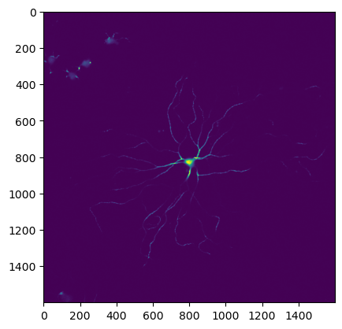
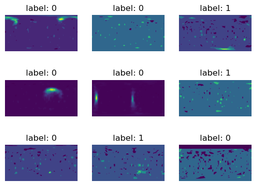
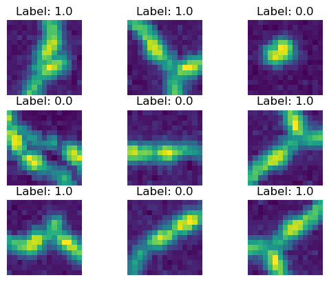

Branch Classifier
[1]:
%load_ext autoreload
%autoreload 2
%matplotlib inline
[2]:
import cProfile
from datetime import datetime
from glob import glob
import matplotlib.pyplot as plt
import numpy as np
import os
import pandas as pd
import pstats
import scipy.ndimage
from scipy.ndimage import gaussian_filter, median_filter, binary_opening, binary_closing
from scipy.ndimage import binary_dilation, generate_binary_structure, map_coordinates
import sys
import tifffile as tf
import torch
from torch.utils.data import DataLoader
sys.path.append("../")
from data_prep import collect, load, draw, save, image
from data_prep.image import Image
from solvers import branch_classifier
import models
date = datetime.now().strftime("%m-%d-%y")
dtype = torch.float32
DEVICE = "cuda" if torch.cuda.is_available() else "cpu"
Collect branch classifier training data
Training data consists of volumetric image patches chosen randomly from the neuron node coordinates given
in the SWC file with an added small random translation. Image patches are labeled 1 if they are centered on
a branch point and 0 otherwise.
Get sample points from swc files then save sample spherical patches
[53]:
# Load SWC file data into python lists
swc_dir = os.path.expanduser("~/data/gold166_swc_scaled")
swc_files = os.listdir(swc_dir)
img_dir = os.path.expanduser("~/data/gold166_tifs_scaled/")
img_files = os.listdir(img_dir)
out_dir = os.path.expanduser("~/data/gold166_classifier_data/")
if not os.path.exists(out_dir):
os.makedirs(out_dir, exist_ok=True)
print(f"Created directory: {out_dir}")
if not os.path.exists(os.path.join(out_dir, "observations")):
os.makedirs(os.path.join(out_dir, "observations"))
[8]:
stats = pstats.Stats(pr)
stats.sort_stats('cumulative').print_stats()
stats.print_stats()
3267202 function calls (3180980 primitive calls) in 212.060 seconds
Ordered by: cumulative time
ncalls tottime percall cumtime percall filename:lineno(function)
1 0.690 0.690 212.060 212.060 /home/bgray/neurotrack/notebooks/../data_prep/collect.py:152(spherical_patch_dataset)
1 4.293 4.293 167.503 167.503 /home/bgray/neurotrack/notebooks/../data_prep/collect.py:109(save_spherical_patches)
10800 9.756 0.001 101.810 0.009 /home/bgray/neurotrack/notebooks/../data_prep/image.py:71(extract_spherical_patch)
10800 0.160 0.000 84.903 0.008 /home/bgray/anaconda3/envs/neurotrack/lib/python3.8/site-packages/scipy/ndimage/_interpolation.py:358(map_coordinates)
10800 83.974 0.008 83.974 0.008 {built-in method scipy.ndimage._nd_image.geometric_transform}
100 0.003 0.000 59.254 0.593 /home/bgray/anaconda3/envs/neurotrack/lib/python3.8/site-packages/torch/serialization.py:333(save)
100 57.322 0.573 57.336 0.573 /home/bgray/anaconda3/envs/neurotrack/lib/python3.8/site-packages/torch/serialization.py:450(_save)
2 0.000 0.000 18.820 9.410 /home/bgray/anaconda3/envs/neurotrack/lib/python3.8/site-packages/tifffile/tifffile.py:978(imread)
2 0.000 0.000 18.409 9.204 /home/bgray/anaconda3/envs/neurotrack/lib/python3.8/site-packages/tifffile/tifffile.py:4172(asarray)
2 0.000 0.000 18.368 9.184 /home/bgray/anaconda3/envs/neurotrack/lib/python3.8/site-packages/tifffile/tifffile.py:14261(read_array)
2 18.368 9.184 18.368 9.184 {method 'readinto' of '_io.BufferedReader' objects}
195434/109706 1.717 0.000 13.862 0.000 {built-in method numpy.core._multiarray_umath.implement_array_function}
1 1.855 1.855 10.627 10.627 /home/bgray/neurotrack/notebooks/../data_prep/collect.py:64(random_points_from_mask)
1 0.265 0.265 8.911 8.911 /home/bgray/neurotrack/notebooks/../data_prep/draw.py:12(draw_neuron_density)
29773 0.036 0.000 8.669 0.000 /home/bgray/anaconda3/envs/neurotrack/lib/python3.8/site-packages/numpy/core/fromnumeric.py:51(_wrapfunc)
2 0.000 0.000 8.558 4.279 <__array_function__ internals>:177(argwhere)
2 0.000 0.000 8.558 4.279 /home/bgray/anaconda3/envs/neurotrack/lib/python3.8/site-packages/numpy/core/numeric.py:578(argwhere)
2 0.000 0.000 8.555 4.278 <__array_function__ internals>:177(nonzero)
2 0.000 0.000 8.555 4.278 /home/bgray/anaconda3/envs/neurotrack/lib/python3.8/site-packages/numpy/core/fromnumeric.py:1892(nonzero)
2 8.554 4.277 8.555 4.278 {method 'nonzero' of 'torch._C._TensorBase' objects}
6323 0.343 0.000 8.159 0.001 /home/bgray/neurotrack/notebooks/../data_prep/image.py:234(draw_line_segment)
6323 0.831 0.000 6.942 0.001 /home/bgray/neurotrack/notebooks/../data_prep/image.py:22(draw_line_segment)
1 4.607 4.607 5.208 5.208 /home/bgray/neurotrack/notebooks/../data_prep/draw.py:47(draw_neuron_mask)
6323 0.084 0.000 4.291 0.001 /home/bgray/anaconda3/envs/neurotrack/lib/python3.8/site-packages/skimage/_shared/filters.py:35(gaussian)
6323 0.067 0.000 3.900 0.001 /home/bgray/anaconda3/envs/neurotrack/lib/python3.8/site-packages/scipy/ndimage/_filters.py:279(gaussian_filter)
67700 3.877 0.000 3.877 0.000 {built-in method numpy.array}
18969 0.063 0.000 3.631 0.000 /home/bgray/anaconda3/envs/neurotrack/lib/python3.8/site-packages/scipy/ndimage/_filters.py:211(gaussian_filter1d)
18969 0.113 0.000 3.173 0.000 /home/bgray/anaconda3/envs/neurotrack/lib/python3.8/site-packages/scipy/ndimage/_filters.py:84(correlate1d)
18969 2.963 0.000 2.963 0.000 {built-in method scipy.ndimage._nd_image.correlate1d}
10800 0.033 0.000 1.909 0.000 <__array_function__ internals>:177(meshgrid)
10800 0.123 0.000 1.842 0.000 /home/bgray/anaconda3/envs/neurotrack/lib/python3.8/site-packages/numpy/lib/function_base.py:4892(meshgrid)
100 0.000 0.000 1.594 0.016 /home/bgray/anaconda3/envs/neurotrack/lib/python3.8/site-packages/torch/serialization.py:213(__exit__)
100 1.593 0.016 1.593 0.016 {method 'close' of '_io.BufferedWriter' objects}
27923 0.049 0.000 1.576 0.000 <__array_function__ internals>:177(linspace)
27923 0.864 0.000 1.475 0.000 /home/bgray/anaconda3/envs/neurotrack/lib/python3.8/site-packages/numpy/core/function_base.py:23(linspace)
100 0.001 0.000 1.351 0.014 <__array_function__ internals>:177(stack)
100 0.002 0.000 1.347 0.013 /home/bgray/anaconda3/envs/neurotrack/lib/python3.8/site-packages/numpy/core/shape_base.py:383(stack)
228 0.001 0.000 1.338 0.006 <__array_function__ internals>:177(concatenate)
6323 0.198 0.000 1.059 0.000 /home/bgray/anaconda3/envs/neurotrack/lib/python3.8/site-packages/skimage/draw/draw_nd.py:54(line_nd)
10800 0.021 0.000 0.899 0.000 /home/bgray/anaconda3/envs/neurotrack/lib/python3.8/site-packages/numpy/lib/function_base.py:5045(<listcomp>)
40569 0.897 0.000 0.897 0.000 {method 'copy' of 'numpy.ndarray' objects}
36092 0.204 0.000 0.806 0.000 /home/bgray/anaconda3/envs/neurotrack/lib/python3.8/site-packages/scipy/ndimage/_ni_support.py:73(_get_output)
10800 0.025 0.000 0.732 0.000 <__array_function__ internals>:177(broadcast_arrays)
10800 0.078 0.000 0.686 0.000 /home/bgray/anaconda3/envs/neurotrack/lib/python3.8/site-packages/numpy/lib/stride_tricks.py:480(broadcast_arrays)
2 0.562 0.281 0.588 0.294 /home/bgray/neurotrack/notebooks/../data_prep/load.py:170(undirected_edge_list)
6324 0.546 0.000 0.546 0.000 {built-in method zeros}
106 0.488 0.005 0.488 0.005 {built-in method io.open}
10800 0.025 0.000 0.476 0.000 /home/bgray/anaconda3/envs/neurotrack/lib/python3.8/site-packages/numpy/lib/stride_tricks.py:546(<listcomp>)
21600 0.373 0.000 0.451 0.000 /home/bgray/anaconda3/envs/neurotrack/lib/python3.8/site-packages/numpy/lib/stride_tricks.py:340(_broadcast_to)
2 0.000 0.000 0.410 0.205 /home/bgray/anaconda3/envs/neurotrack/lib/python3.8/site-packages/tifffile/tifffile.py:4010(__init__)
2 0.402 0.201 0.402 0.201 {built-in method zeros_like}
6383 0.174 0.000 0.390 0.000 /home/bgray/neurotrack/notebooks/../data_prep/image.py:163(crop)
1 0.026 0.026 0.365 0.365 /home/bgray/neurotrack/notebooks/../data_prep/load.py:194(parse_swc)
17123 0.116 0.000 0.362 0.000 /home/bgray/anaconda3/envs/neurotrack/lib/python3.8/site-packages/numpy/core/_dtype.py:344(_name_get)
1 0.020 0.020 0.344 0.344 /home/bgray/neurotrack/notebooks/../data_prep/load.py:263(get_critical_points)
18969 0.196 0.000 0.341 0.000 /home/bgray/anaconda3/envs/neurotrack/lib/python3.8/site-packages/scipy/ndimage/_filters.py:180(_gaussian_kernel1d)
12646 0.336 0.000 0.336 0.000 {method 'clone' of 'torch._C._TensorBase' objects}
37940 0.329 0.000 0.329 0.000 {method 'reduce' of 'numpy.ufunc' objects}
100 0.000 0.000 0.304 0.003 /home/bgray/anaconda3/envs/neurotrack/lib/python3.8/site-packages/torch/serialization.py:228(_open_file_like)
100 0.001 0.000 0.304 0.003 /home/bgray/anaconda3/envs/neurotrack/lib/python3.8/site-packages/torch/serialization.py:210(__init__)
2512 0.001 0.000 0.269 0.000 /home/bgray/anaconda3/envs/neurotrack/lib/python3.8/site-packages/tifffile/tifffile.py:14179(read)
2514 0.269 0.000 0.269 0.000 {method 'read' of '_io.BufferedReader' objects}
12647 0.256 0.000 0.256 0.000 {built-in method tensor}
1 0.000 0.000 0.249 0.249 /home/bgray/anaconda3/envs/neurotrack/lib/python3.8/site-packages/torch/tensor.py:21(wrapped)
1 0.249 0.249 0.249 0.249 {method 'gt' of 'torch._C._TensorBase' objects}
18969 0.048 0.000 0.229 0.000 /home/bgray/anaconda3/envs/neurotrack/lib/python3.8/site-packages/skimage/draw/draw_nd.py:4(_round_safe)
17123 0.227 0.000 0.227 0.000 {built-in method numpy.zeros}
27923 0.042 0.000 0.199 0.000 <__array_function__ internals>:177(result_type)
17123 0.057 0.000 0.184 0.000 /home/bgray/anaconda3/envs/neurotrack/lib/python3.8/site-packages/numpy/core/_dtype.py:330(_name_includes_bit_suffix)
1 0.000 0.000 0.176 0.176 /home/bgray/neurotrack/notebooks/../data_prep/load.py:78(swc)
2 0.000 0.000 0.174 0.087 /home/bgray/anaconda3/envs/neurotrack/lib/python3.8/site-packages/tifffile/tifffile.py:13995(__init__)
2 0.000 0.000 0.174 0.087 /home/bgray/anaconda3/envs/neurotrack/lib/python3.8/site-packages/tifffile/tifffile.py:14023(open)
116861/116859 0.088 0.000 0.169 0.000 {built-in method numpy.asarray}
1 0.000 0.000 0.166 0.166 {method 'max' of 'numpy.ndarray' objects}
1 0.000 0.000 0.166 0.166 /home/bgray/anaconda3/envs/neurotrack/lib/python3.8/site-packages/numpy/core/_methods.py:39(_amax)
6323 0.041 0.000 0.162 0.000 /home/bgray/anaconda3/envs/neurotrack/lib/python3.8/site-packages/skimage/_shared/utils.py:595(convert_to_float)
1 0.003 0.003 0.159 0.159 /home/bgray/neurotrack/notebooks/../data_prep/load.py:108(<listcomp>)
18969 0.016 0.000 0.159 0.000 <__array_function__ internals>:177(round_)
6339 0.155 0.000 0.155 0.000 {method 'split' of 'str' objects}
1 0.152 0.152 0.152 0.152 {method 'amax' of 'torch._C._TensorBase' objects}
12648 0.043 0.000 0.151 0.000 /home/bgray/anaconda3/envs/neurotrack/lib/python3.8/site-packages/numpy/core/fromnumeric.py:69(_wrapreduction)
65863 0.151 0.000 0.151 0.000 {built-in method numpy.arange}
6383 0.151 0.000 0.151 0.000 {built-in method maximum}
23448 0.050 0.000 0.143 0.000 /home/bgray/anaconda3/envs/neurotrack/lib/python3.8/site-packages/numpy/core/numerictypes.py:356(issubdtype)
10802 0.036 0.000 0.138 0.000 <__array_function__ internals>:177(transpose)
6324 0.040 0.000 0.130 0.000 /home/bgray/anaconda3/envs/neurotrack/lib/python3.8/site-packages/torch/tensor.py:576(__iter__)
149429/149419 0.058 0.000 0.126 0.000 {built-in method builtins.isinstance}
18969 0.016 0.000 0.125 0.000 /home/bgray/anaconda3/envs/neurotrack/lib/python3.8/site-packages/numpy/core/fromnumeric.py:3754(round_)
21600 0.034 0.000 0.118 0.000 <__array_function__ internals>:177(iscomplexobj)
6323 0.008 0.000 0.117 0.000 <__array_function__ internals>:177(any)
6323 0.011 0.000 0.112 0.000 <__array_function__ internals>:177(amax)
18969 0.016 0.000 0.109 0.000 <__array_function__ internals>:177(around)
6323 0.007 0.000 0.109 0.000 /home/bgray/anaconda3/envs/neurotrack/lib/python3.8/site-packages/skimage/util/dtype.py:451(img_as_float)
6323 0.035 0.000 0.102 0.000 /home/bgray/anaconda3/envs/neurotrack/lib/python3.8/site-packages/skimage/util/dtype.py:188(_convert)
6323 0.099 0.000 0.099 0.000 {built-in method amax}
60325 0.099 0.000 0.099 0.000 {method 'reshape' of 'numpy.ndarray' objects}
45288 0.094 0.000 0.094 0.000 {method 'item' of 'numpy.generic' objects}
18969 0.017 0.000 0.091 0.000 {method 'sum' of 'numpy.ndarray' objects}
46896 0.051 0.000 0.090 0.000 /home/bgray/anaconda3/envs/neurotrack/lib/python3.8/site-packages/numpy/core/numerictypes.py:282(issubclass_)
6323 0.016 0.000 0.089 0.000 /home/bgray/anaconda3/envs/neurotrack/lib/python3.8/site-packages/numpy/core/fromnumeric.py:2703(amax)
6323 0.012 0.000 0.089 0.000 /home/bgray/anaconda3/envs/neurotrack/lib/python3.8/site-packages/numpy/core/fromnumeric.py:2333(any)
27925 0.032 0.000 0.087 0.000 <__array_function__ internals>:177(ndim)
10800 0.061 0.000 0.084 0.000 /home/bgray/anaconda3/envs/neurotrack/lib/python3.8/site-packages/numpy/lib/function_base.py:5032(<listcomp>)
18973 0.048 0.000 0.081 0.000 /home/bgray/anaconda3/envs/neurotrack/lib/python3.8/site-packages/torch/tensor.py:624(__array__)
10800 0.077 0.000 0.078 0.000 /home/bgray/anaconda3/envs/neurotrack/lib/python3.8/site-packages/numpy/lib/stride_tricks.py:416(_broadcast_shape)
6383 0.024 0.000 0.077 0.000 /home/bgray/neurotrack/notebooks/../data_prep/image.py:192(<listcomp>)
18969 0.017 0.000 0.076 0.000 /home/bgray/anaconda3/envs/neurotrack/lib/python3.8/site-packages/numpy/core/fromnumeric.py:3245(around)
10802 0.021 0.000 0.076 0.000 /home/bgray/anaconda3/envs/neurotrack/lib/python3.8/site-packages/numpy/core/fromnumeric.py:601(transpose)
18969 0.009 0.000 0.074 0.000 /home/bgray/anaconda3/envs/neurotrack/lib/python3.8/site-packages/numpy/core/_methods.py:47(_sum)
6324 0.072 0.000 0.073 0.000 {method 'unbind' of 'torch._C._TensorBase' objects}
94579 0.072 0.000 0.072 0.000 {built-in method numpy.asanyarray}
12706 0.069 0.000 0.069 0.000 {method 'to' of 'torch._C._TensorBase' objects}
44280 0.015 0.000 0.068 0.000 /home/bgray/anaconda3/envs/neurotrack/lib/python3.8/abc.py:96(__instancecheck__)
126783/126761 0.023 0.000 0.063 0.000 {built-in method builtins.len}
6323 0.062 0.000 0.062 0.000 {built-in method ceil}
12644 0.008 0.000 0.060 0.000 /home/bgray/anaconda3/envs/neurotrack/lib/python3.8/site-packages/numpy/core/_methods.py:55(_any)
6323 0.060 0.000 0.060 0.000 {built-in method sqrt}
25292 0.059 0.000 0.059 0.000 {method 'item' of 'torch._C._TensorBase' objects}
27921 0.033 0.000 0.058 0.000 /home/bgray/anaconda3/envs/neurotrack/lib/python3.8/site-packages/numpy/core/numeric.py:1878(isscalar)
6323 0.057 0.000 0.057 0.000 {built-in method sum}
128868 0.055 0.000 0.055 0.000 {built-in method builtins.issubclass}
21600 0.047 0.000 0.055 0.000 /home/bgray/anaconda3/envs/neurotrack/lib/python3.8/site-packages/numpy/lib/type_check.py:303(iscomplexobj)
59542 0.053 0.000 0.053 0.000 {method 'astype' of 'numpy.ndarray' objects}
44280 0.031 0.000 0.052 0.000 {built-in method _abc._abc_instancecheck}
25292 0.019 0.000 0.050 0.000 /home/bgray/anaconda3/envs/neurotrack/lib/python3.8/site-packages/scipy/ndimage/_ni_support.py:57(_normalize_sequence)
6323 0.048 0.000 0.048 0.000 {built-in method round}
6725 0.005 0.000 0.047 0.000 <__array_function__ internals>:177(norm)
6323 0.016 0.000 0.047 0.000 {method 'any' of 'numpy.generic' objects}
29/17 0.000 0.000 0.041 0.002 /home/bgray/anaconda3/envs/neurotrack/lib/python3.8/functools.py:947(__get__)
2 0.000 0.000 0.041 0.021 /home/bgray/anaconda3/envs/neurotrack/lib/python3.8/site-packages/tifffile/tifffile.py:4399(series)
2 0.000 0.000 0.041 0.020 /home/bgray/anaconda3/envs/neurotrack/lib/python3.8/site-packages/tifffile/tifffile.py:4543(_series_shaped)
2 0.000 0.000 0.041 0.020 /home/bgray/anaconda3/envs/neurotrack/lib/python3.8/site-packages/tifffile/tifffile.py:4594(detect_series)
4 0.003 0.001 0.040 0.010 /home/bgray/anaconda3/envs/neurotrack/lib/python3.8/site-packages/tifffile/tifffile.py:7393(_seek)
2 0.000 0.000 0.040 0.020 /home/bgray/anaconda3/envs/neurotrack/lib/python3.8/site-packages/tifffile/tifffile.py:7626(__len__)
18969 0.040 0.000 0.040 0.000 {method 'round' of 'numpy.ndarray' objects}
21600 0.023 0.000 0.038 0.000 {built-in method builtins.any}
6321 0.008 0.000 0.038 0.000 {method 'any' of 'numpy.ndarray' objects}
17159 0.037 0.000 0.037 0.000 {method 'format' of 'str' objects}
6725 0.020 0.000 0.036 0.000 /home/bgray/anaconda3/envs/neurotrack/lib/python3.8/site-packages/numpy/linalg/linalg.py:2342(norm)
18973 0.033 0.000 0.033 0.000 {method 'numpy' of 'torch._C._TensorBase' objects}
10800 0.017 0.000 0.028 0.000 /home/bgray/anaconda3/envs/neurotrack/lib/python3.8/site-packages/numpy/lib/stride_tricks.py:538(<listcomp>)
17123 0.023 0.000 0.023 0.000 /home/bgray/anaconda3/envs/neurotrack/lib/python3.8/site-packages/numpy/core/_dtype.py:24(_kind_name)
21600 0.016 0.000 0.021 0.000 /home/bgray/anaconda3/envs/neurotrack/lib/python3.8/site-packages/numpy/lib/function_base.py:346(iterable)
19210/18987 0.007 0.000 0.021 0.000 /home/bgray/anaconda3/envs/neurotrack/lib/python3.8/abc.py:100(__subclasscheck__)
10802 0.021 0.000 0.021 0.000 {method 'transpose' of 'numpy.ndarray' objects}
29769 0.021 0.000 0.021 0.000 /home/bgray/anaconda3/envs/neurotrack/lib/python3.8/site-packages/scipy/ndimage/_ni_support.py:36(_extend_mode_to_code)
2 0.000 0.000 0.019 0.010 /home/bgray/anaconda3/envs/neurotrack/lib/python3.8/site-packages/pandas/core/generic.py:3589(to_csv)
2 0.000 0.000 0.019 0.010 /home/bgray/anaconda3/envs/neurotrack/lib/python3.8/site-packages/pandas/io/formats/format.py:1137(to_csv)
27925 0.019 0.000 0.019 0.000 /home/bgray/anaconda3/envs/neurotrack/lib/python3.8/site-packages/numpy/core/fromnumeric.py:3152(ndim)
10801 0.008 0.000 0.019 0.000 {built-in method builtins.all}
2 0.000 0.000 0.018 0.009 /home/bgray/anaconda3/envs/neurotrack/lib/python3.8/site-packages/pandas/io/formats/csvs.py:235(save)
21600 0.017 0.000 0.017 0.000 /home/bgray/anaconda3/envs/neurotrack/lib/python3.8/site-packages/numpy/lib/stride_tricks.py:542(<genexpr>)
36320/36318 0.017 0.000 0.017 0.000 {built-in method builtins.getattr}
6323 0.013 0.000 0.017 0.000 /home/bgray/anaconda3/envs/neurotrack/lib/python3.8/site-packages/skimage/_shared/utils.py:710(_supported_float_type)
64800 0.015 0.000 0.015 0.000 /home/bgray/anaconda3/envs/neurotrack/lib/python3.8/site-packages/numpy/lib/stride_tricks.py:345(<genexpr>)
19210/18987 0.015 0.000 0.015 0.000 {built-in method _abc._abc_subclasscheck}
2 0.000 0.000 0.014 0.007 /home/bgray/anaconda3/envs/neurotrack/lib/python3.8/site-packages/pandas/io/common.py:648(get_handle)
6323 0.014 0.000 0.014 0.000 {method 'cpu' of 'torch._C._TensorBase' objects}
70071 0.013 0.000 0.013 0.000 {method 'append' of 'list' objects}
100 0.004 0.000 0.013 0.000 {method 'dump' of '_pickle.Pickler' objects}
100 0.003 0.000 0.013 0.000 /home/bgray/anaconda3/envs/neurotrack/lib/python3.8/site-packages/torch/serialization.py:258(__exit__)
21600 0.013 0.000 0.013 0.000 /home/bgray/anaconda3/envs/neurotrack/lib/python3.8/site-packages/numpy/lib/stride_tricks.py:25(_maybe_view_as_subclass)
6329 0.008 0.000 0.012 0.000 <frozen importlib._bootstrap>:389(parent)
6324 0.012 0.000 0.012 0.000 {built-in method torch._C._get_tracing_state}
12648 0.011 0.000 0.011 0.000 /home/bgray/anaconda3/envs/neurotrack/lib/python3.8/site-packages/numpy/core/fromnumeric.py:70(<dictcomp>)
19209 0.011 0.000 0.011 0.000 {built-in method builtins.round}
1 0.010 0.010 0.010 0.010 /home/bgray/neurotrack/notebooks/../data_prep/load.py:109(<listcomp>)
18969 0.010 0.000 0.010 0.000 /home/bgray/anaconda3/envs/neurotrack/lib/python3.8/site-packages/scipy/ndimage/_filters.py:51(_invalid_origin)
27923 0.009 0.000 0.009 0.000 {built-in method _operator.index}
6323 0.009 0.000 0.009 0.000 /home/bgray/anaconda3/envs/neurotrack/lib/python3.8/site-packages/scipy/ndimage/_filters.py:364(<listcomp>)
100 0.009 0.000 0.009 0.000 {method 'flush' of '_io.BufferedWriter' objects}
6725 0.009 0.000 0.009 0.000 {method 'dot' of 'numpy.ndarray' objects}
6323 0.005 0.000 0.008 0.000 /home/bgray/anaconda3/envs/neurotrack/lib/python3.8/site-packages/numpy/core/numerictypes.py:228(obj2sctype)
27925 0.008 0.000 0.008 0.000 /home/bgray/anaconda3/envs/neurotrack/lib/python3.8/site-packages/numpy/core/fromnumeric.py:3148(_ndim_dispatcher)
27923 0.008 0.000 0.008 0.000 /home/bgray/anaconda3/envs/neurotrack/lib/python3.8/site-packages/numpy/core/function_base.py:18(_linspace_dispatcher)
27924 0.008 0.000 0.008 0.000 {built-in method builtins.iter}
27923 0.007 0.000 0.007 0.000 /home/bgray/anaconda3/envs/neurotrack/lib/python3.8/site-packages/numpy/core/multiarray.py:668(result_type)
21600 0.007 0.000 0.007 0.000 /home/bgray/anaconda3/envs/neurotrack/lib/python3.8/site-packages/numpy/lib/type_check.py:206(_is_type_dispatcher)
19070 0.006 0.000 0.006 0.000 {built-in method numpy.core._multiarray_umath.normalize_axis_index}
37938 0.006 0.000 0.006 0.000 /home/bgray/anaconda3/envs/neurotrack/lib/python3.8/site-packages/numpy/core/fromnumeric.py:3241(_around_dispatcher)
12648 0.005 0.000 0.006 0.000 {method 'tolist' of 'numpy.ndarray' objects}
100 0.004 0.000 0.006 0.000 /home/bgray/anaconda3/envs/neurotrack/lib/python3.8/site-packages/torch/tensor.py:83(__reduce_ex__)
12 0.004 0.000 0.006 0.000 /home/bgray/neurotrack/notebooks/../data_prep/load.py:223(<listcomp>)
2 0.005 0.003 0.005 0.003 {method 'readlines' of '_io._IOBase' objects}
10802 0.005 0.000 0.005 0.000 /home/bgray/anaconda3/envs/neurotrack/lib/python3.8/site-packages/numpy/core/fromnumeric.py:597(_transpose_dispatcher)
60 0.002 0.000 0.005 0.000 /home/bgray/neurotrack/notebooks/../data_prep/image.py:282(draw_point)
2 0.004 0.002 0.005 0.002 {method 'choice' of 'numpy.random._generator.Generator' objects}
6351 0.004 0.000 0.004 0.000 {method 'rpartition' of 'str' objects}
2 0.004 0.002 0.004 0.002 {built-in method posix.listdir}
100 0.000 0.000 0.004 0.000 /home/bgray/anaconda3/envs/neurotrack/lib/python3.8/site-packages/torch/serialization.py:263(_open_zipfile_writer)
102 0.004 0.000 0.004 0.000 {built-in method from_numpy}
10800 0.003 0.000 0.003 0.000 /home/bgray/anaconda3/envs/neurotrack/lib/python3.8/site-packages/numpy/lib/function_base.py:4887(_meshgrid_dispatcher)
100 0.003 0.000 0.003 0.000 /home/bgray/anaconda3/envs/neurotrack/lib/python3.8/site-packages/torch/serialization.py:254(__init__)
100 0.003 0.000 0.003 0.000 /home/bgray/anaconda3/envs/neurotrack/lib/python3.8/site-packages/numpy/core/shape_base.py:470(<listcomp>)
6326 0.003 0.000 0.003 0.000 {method 'dim' of 'torch._C._TensorBase' objects}
2200 0.002 0.000 0.003 0.000 /home/bgray/anaconda3/envs/neurotrack/lib/python3.8/site-packages/torch/serialization.py:453(persistent_id)
2 0.000 0.000 0.003 0.002 /home/bgray/anaconda3/envs/neurotrack/lib/python3.8/posixpath.py:387(realpath)
12662 0.003 0.000 0.003 0.000 {method 'items' of 'dict' objects}
2 0.000 0.000 0.003 0.002 /home/bgray/anaconda3/envs/neurotrack/lib/python3.8/posixpath.py:396(_joinrealpath)
10 0.000 0.000 0.003 0.000 /home/bgray/anaconda3/envs/neurotrack/lib/python3.8/posixpath.py:164(islink)
100 0.002 0.000 0.003 0.000 /home/bgray/anaconda3/envs/neurotrack/lib/python3.8/site-packages/numpy/core/shape_base.py:458(<listcomp>)
10 0.003 0.000 0.003 0.000 {built-in method posix.lstat}
4 0.000 0.000 0.003 0.001 /home/bgray/anaconda3/envs/neurotrack/lib/python3.8/site-packages/pandas/core/frame.py:641(__init__)
2 0.000 0.000 0.003 0.001 /home/bgray/anaconda3/envs/neurotrack/lib/python3.8/site-packages/pandas/core/frame.py:1648(from_dict)
6725 0.002 0.000 0.003 0.000 /home/bgray/anaconda3/envs/neurotrack/lib/python3.8/site-packages/numpy/linalg/linalg.py:117(isComplexType)
1 0.003 0.003 0.003 0.003 {built-in method randperm}
100 0.003 0.000 0.003 0.000 /home/bgray/anaconda3/envs/neurotrack/lib/python3.8/site-packages/numpy/core/shape_base.py:462(<setcomp>)
10800 0.003 0.000 0.003 0.000 /home/bgray/anaconda3/envs/neurotrack/lib/python3.8/site-packages/numpy/lib/stride_tricks.py:476(_broadcast_arrays_dispatcher)
2 0.003 0.001 0.003 0.001 {method 'transpose' of 'torch._C._TensorBase' objects}
3 0.000 0.000 0.003 0.001 /home/bgray/anaconda3/envs/neurotrack/lib/python3.8/site-packages/tqdm/std.py:1464(display)
5 0.000 0.000 0.002 0.000 /home/bgray/anaconda3/envs/neurotrack/lib/python3.8/site-packages/ipykernel/iostream.py:592(flush)
2 0.000 0.000 0.002 0.001 /home/bgray/anaconda3/envs/neurotrack/lib/python3.8/site-packages/pandas/io/formats/csvs.py:261(_save)
6725 0.002 0.000 0.002 0.000 {method 'ravel' of 'numpy.ndarray' objects}
2 0.000 0.000 0.002 0.001 /home/bgray/anaconda3/envs/neurotrack/lib/python3.8/site-packages/pandas/core/internals/construction.py:238(ndarray_to_mgr)
6 0.000 0.000 0.002 0.000 /home/bgray/anaconda3/envs/neurotrack/lib/python3.8/threading.py:540(wait)
3 0.000 0.000 0.002 0.001 <frozen importlib._bootstrap>:986(_find_and_load)
6 0.000 0.000 0.002 0.000 /home/bgray/anaconda3/envs/neurotrack/lib/python3.8/threading.py:270(wait)
3 0.000 0.000 0.002 0.001 /home/bgray/anaconda3/envs/neurotrack/lib/python3.8/site-packages/tqdm/std.py:457(print_status)
44 0.002 0.000 0.002 0.000 {method 'acquire' of '_thread.lock' objects}
214 0.001 0.000 0.002 0.000 /home/bgray/anaconda3/envs/neurotrack/lib/python3.8/posixpath.py:71(join)
3 0.000 0.000 0.002 0.001 <frozen importlib._bootstrap>:956(_find_and_load_unlocked)
2 0.000 0.000 0.002 0.001 /home/bgray/anaconda3/envs/neurotrack/lib/python3.8/site-packages/tqdm/std.py:1160(__iter__)
8 0.000 0.000 0.002 0.000 /home/bgray/anaconda3/envs/neurotrack/lib/python3.8/site-packages/tqdm/utils.py:194(inner)
6323 0.002 0.000 0.002 0.000 /home/bgray/anaconda3/envs/neurotrack/lib/python3.8/site-packages/numpy/core/fromnumeric.py:2698(_amax_dispatcher)
2 0.000 0.000 0.002 0.001 /home/bgray/anaconda3/envs/neurotrack/lib/python3.8/site-packages/pandas/io/formats/csvs.py:294(_save_body)
3 0.000 0.000 0.002 0.001 /home/bgray/anaconda3/envs/neurotrack/lib/python3.8/site-packages/tqdm/std.py:451(fp_write)
1 0.001 0.001 0.002 0.002 /home/bgray/neurotrack/notebooks/../data_prep/load.py:218(<listcomp>)
2 0.000 0.000 0.002 0.001 /home/bgray/anaconda3/envs/neurotrack/lib/python3.8/site-packages/pandas/io/formats/csvs.py:304(_save_chunk)
2 0.000 0.000 0.002 0.001 <__array_function__ internals>:177(unique)
2 0.000 0.000 0.002 0.001 /home/bgray/anaconda3/envs/neurotrack/lib/python3.8/site-packages/numpy/lib/arraysetops.py:138(unique)
6402 0.002 0.000 0.002 0.000 {method 'get' of 'dict' objects}
2 0.000 0.000 0.002 0.001 /home/bgray/anaconda3/envs/neurotrack/lib/python3.8/site-packages/numpy/lib/arraysetops.py:323(_unique1d)
6323 0.002 0.000 0.002 0.000 /home/bgray/anaconda3/envs/neurotrack/lib/python3.8/site-packages/numpy/core/fromnumeric.py:2328(_any_dispatcher)
2 0.000 0.000 0.002 0.001 /home/bgray/anaconda3/envs/neurotrack/lib/python3.8/site-packages/tqdm/std.py:1325(refresh)
134 0.001 0.000 0.002 0.000 /home/bgray/anaconda3/envs/neurotrack/lib/python3.8/site-packages/ipykernel/ipkernel.py:775(_clean_thread_parent_frames)
2510 0.001 0.000 0.002 0.000 /home/bgray/anaconda3/envs/neurotrack/lib/python3.8/site-packages/tifffile/tifffile.py:14152(seek)
1 0.000 0.000 0.002 0.002 /home/bgray/anaconda3/envs/neurotrack/lib/python3.8/site-packages/tqdm/std.py:663(__new__)
2 0.000 0.000 0.001 0.001 <frozen importlib._bootstrap>:650(_load_unlocked)
2 0.001 0.001 0.001 0.001 {method 'sort' of 'numpy.ndarray' objects}
1 0.000 0.000 0.001 0.001 /home/bgray/anaconda3/envs/neurotrack/lib/python3.8/site-packages/tqdm/std.py:952(__init__)
1 0.000 0.000 0.001 0.001 /home/bgray/anaconda3/envs/neurotrack/lib/python3.8/warnings.py:96(_showwarnmsg)
1 0.000 0.000 0.001 0.001 /home/bgray/anaconda3/envs/neurotrack/lib/python3.8/warnings.py:20(_showwarnmsg_impl)
2 0.000 0.000 0.001 0.001 <frozen importlib._bootstrap_external>:837(exec_module)
1 0.000 0.000 0.001 0.001 /home/bgray/anaconda3/envs/neurotrack/lib/python3.8/site-packages/tqdm/std.py:760(get_lock)
1 0.000 0.000 0.001 0.001 /home/bgray/anaconda3/envs/neurotrack/lib/python3.8/site-packages/tqdm/std.py:90(__init__)
1 0.001 0.001 0.001 0.001 /home/bgray/neurotrack/notebooks/../data_prep/load.py:301(<listcomp>)
1 0.000 0.000 0.001 0.001 /home/bgray/anaconda3/envs/neurotrack/lib/python3.8/site-packages/tqdm/std.py:116(create_mp_lock)
1 0.000 0.000 0.001 0.001 /home/bgray/anaconda3/envs/neurotrack/lib/python3.8/warnings.py:117(_formatwarnmsg)
1 0.000 0.000 0.001 0.001 /home/bgray/anaconda3/envs/neurotrack/lib/python3.8/warnings.py:35(_formatwarnmsg_impl)
1 0.000 0.000 0.001 0.001 /home/bgray/anaconda3/envs/neurotrack/lib/python3.8/multiprocessing/context.py:70(RLock)
1 0.000 0.000 0.001 0.001 /home/bgray/anaconda3/envs/neurotrack/lib/python3.8/linecache.py:15(getline)
1 0.000 0.000 0.001 0.001 /home/bgray/anaconda3/envs/neurotrack/lib/python3.8/site-packages/torch/_fx/graph_module.py:24(patched_getline)
1 0.000 0.000 0.001 0.001 /home/bgray/anaconda3/envs/neurotrack/lib/python3.8/linecache.py:37(getlines)
6323 0.001 0.000 0.001 0.000 {method 'remove' of 'list' objects}
1 0.000 0.000 0.001 0.001 /home/bgray/anaconda3/envs/neurotrack/lib/python3.8/linecache.py:82(updatecache)
1 0.000 0.000 0.001 0.001 /home/bgray/anaconda3/envs/neurotrack/lib/python3.8/site-packages/tqdm/std.py:1198(update)
6725 0.001 0.000 0.001 0.000 /home/bgray/anaconda3/envs/neurotrack/lib/python3.8/site-packages/numpy/linalg/linalg.py:2338(_norm_dispatcher)
6327 0.001 0.000 0.001 0.000 {method 'pop' of 'dict' objects}
1 0.001 0.001 0.001 0.001 /home/bgray/neurotrack/notebooks/../data_prep/load.py:273(<listcomp>)
4 0.000 0.000 0.001 0.000 /home/bgray/anaconda3/envs/neurotrack/lib/python3.8/site-packages/pandas/core/indexes/base.py:1364(_format_native_types)
2 0.000 0.000 0.001 0.000 /home/bgray/anaconda3/envs/neurotrack/lib/python3.8/site-packages/pandas/core/internals/construction.py:724(_get_axes)
2 0.000 0.000 0.001 0.000 /home/bgray/anaconda3/envs/neurotrack/lib/python3.8/site-packages/pandas/core/indexes/base.py:7072(ensure_index)
6558 0.001 0.000 0.001 0.000 {method 'startswith' of 'str' objects}
2 0.000 0.000 0.001 0.000 <frozen importlib._bootstrap_external>:909(get_code)
2 0.000 0.000 0.001 0.000 /home/bgray/anaconda3/envs/neurotrack/lib/python3.8/site-packages/pandas/core/indexes/base.py:469(__new__)
2 0.000 0.000 0.001 0.000 /home/bgray/anaconda3/envs/neurotrack/lib/python3.8/site-packages/tqdm/std.py:1265(close)
4 0.000 0.000 0.001 0.000 /home/bgray/anaconda3/envs/neurotrack/lib/python3.8/site-packages/pandas/core/dtypes/cast.py:123(maybe_convert_platform)
2 0.000 0.000 0.001 0.000 /home/bgray/anaconda3/envs/neurotrack/lib/python3.8/site-packages/pandas/core/internals/construction.py:525(_prep_ndarraylike)
2 0.000 0.000 0.001 0.000 /home/bgray/anaconda3/envs/neurotrack/lib/python3.8/site-packages/pandas/io/common.py:137(__exit__)
2 0.000 0.000 0.001 0.000 /home/bgray/anaconda3/envs/neurotrack/lib/python3.8/site-packages/tifffile/tifffile.py:7097(__init__)
2 0.000 0.000 0.001 0.000 /home/bgray/anaconda3/envs/neurotrack/lib/python3.8/site-packages/pandas/io/common.py:117(close)
2 0.000 0.000 0.001 0.000 /home/bgray/anaconda3/envs/neurotrack/lib/python3.8/site-packages/pandas/core/internals/construction.py:537(convert)
2 0.001 0.000 0.001 0.000 {method 'close' of '_io.TextIOWrapper' objects}
6 0.001 0.000 0.001 0.000 {pandas._libs.lib.maybe_convert_objects}
6 0.000 0.000 0.001 0.000 /home/bgray/anaconda3/envs/neurotrack/lib/python3.8/site-packages/pandas/core/dtypes/missing.py:106(isna)
6 0.000 0.000 0.001 0.000 /home/bgray/anaconda3/envs/neurotrack/lib/python3.8/site-packages/pandas/core/dtypes/missing.py:189(_isna)
200 0.001 0.000 0.001 0.000 /home/bgray/anaconda3/envs/neurotrack/lib/python3.8/site-packages/torch/serialization.py:193(_is_path)
2 0.000 0.000 0.001 0.000 /home/bgray/anaconda3/envs/neurotrack/lib/python3.8/site-packages/tifffile/tifffile.py:7775(__init__)
2200 0.001 0.000 0.001 0.000 /home/bgray/anaconda3/envs/neurotrack/lib/python3.8/site-packages/torch/__init__.py:265(is_storage)
2 0.000 0.000 0.001 0.000 /home/bgray/anaconda3/envs/neurotrack/lib/python3.8/site-packages/pandas/core/internals/managers.py:507(to_native_types)
2 0.000 0.000 0.001 0.000 /home/bgray/anaconda3/envs/neurotrack/lib/python3.8/site-packages/pandas/core/internals/managers.py:306(apply)
2 0.000 0.000 0.001 0.000 /home/bgray/anaconda3/envs/neurotrack/lib/python3.8/site-packages/pandas/core/internals/blocks.py:528(to_native_types)
2 0.000 0.000 0.001 0.000 /home/bgray/anaconda3/envs/neurotrack/lib/python3.8/site-packages/pandas/io/formats/csvs.py:50(__init__)
6 0.000 0.000 0.001 0.000 /home/bgray/anaconda3/envs/neurotrack/lib/python3.8/site-packages/pandas/core/indexes/base.py:640(_simple_new)
6327 0.001 0.000 0.001 0.000 {method 'strip' of 'str' objects}
2 0.000 0.000 0.001 0.000 /home/bgray/anaconda3/envs/neurotrack/lib/python3.8/site-packages/pandas/io/formats/csvs.py:144(_initialize_columns)
1 0.000 0.000 0.001 0.001 /home/bgray/anaconda3/envs/neurotrack/lib/python3.8/tokenize.py:388(open)
2 0.000 0.000 0.001 0.000 /home/bgray/anaconda3/envs/neurotrack/lib/python3.8/site-packages/pandas/core/internals/blocks.py:2497(to_native_types)
4 0.000 0.000 0.001 0.000 /home/bgray/anaconda3/envs/neurotrack/lib/python3.8/site-packages/pandas/core/dtypes/missing.py:266(_isna_array)
67 0.000 0.000 0.001 0.000 /home/bgray/anaconda3/envs/neurotrack/lib/python3.8/site-packages/ipykernel/ipkernel.py:790(<setcomp>)
2517 0.001 0.000 0.001 0.000 {method 'seek' of '_io.BufferedReader' objects}
3 0.000 0.000 0.001 0.000 <frozen importlib._bootstrap>:890(_find_spec)
2 0.000 0.000 0.001 0.000 <frozen importlib._bootstrap_external>:1029(get_data)
32 0.000 0.000 0.001 0.000 /home/bgray/anaconda3/envs/neurotrack/lib/python3.8/site-packages/tifffile/tifffile.py:10636(fromfile)
60 0.001 0.000 0.001 0.000 {built-in method ones}
1 0.000 0.000 0.001 0.001 /home/bgray/anaconda3/envs/neurotrack/lib/python3.8/site-packages/tqdm/std.py:438(status_printer)
1 0.000 0.000 0.001 0.001 /home/bgray/anaconda3/envs/neurotrack/lib/python3.8/tokenize.py:295(detect_encoding)
4 0.000 0.000 0.001 0.000 /home/bgray/anaconda3/envs/neurotrack/lib/python3.8/site-packages/pandas/io/common.py:1151(_is_binary_mode)
100 0.001 0.000 0.001 0.000 {method 'storage' of 'torch._C._TensorBase' objects}
1 0.000 0.000 0.001 0.001 /home/bgray/anaconda3/envs/neurotrack/lib/python3.8/tokenize.py:319(read_or_stop)
20 0.000 0.000 0.001 0.000 {built-in method posix.stat}
2624 0.001 0.000 0.001 0.000 {built-in method _struct.unpack}
1 0.001 0.001 0.001 0.001 {method 'readline' of '_io.BufferedReader' objects}
100 0.000 0.000 0.000 0.000 /home/bgray/anaconda3/envs/neurotrack/lib/python3.8/site-packages/numpy/core/shape_base.py:373(_stack_dispatcher)
100 0.000 0.000 0.000 0.000 /home/bgray/anaconda3/envs/neurotrack/lib/python3.8/site-packages/torch/_namedtensor_internals.py:10(check_serializing_named_tensor)
2 0.000 0.000 0.000 0.000 /home/bgray/anaconda3/envs/neurotrack/lib/python3.8/site-packages/pandas/io/common.py:589(check_parent_directory)
3 0.000 0.000 0.000 0.000 <frozen importlib._bootstrap_external>:1399(find_spec)
3 0.000 0.000 0.000 0.000 <frozen importlib._bootstrap_external>:1367(_get_spec)
2 0.000 0.000 0.000 0.000 <__array_function__ internals>:177(vstack)
67 0.000 0.000 0.000 0.000 /home/bgray/anaconda3/envs/neurotrack/lib/python3.8/threading.py:1336(enumerate)
6 0.000 0.000 0.000 0.000 {method 'add_index_reference' of 'pandas._libs.internals.BlockValuesRefs' objects}
2 0.000 0.000 0.000 0.000 <frozen importlib._bootstrap>:211(_call_with_frames_removed)
2 0.000 0.000 0.000 0.000 {built-in method builtins.exec}
2 0.000 0.000 0.000 0.000 /home/bgray/anaconda3/envs/neurotrack/lib/python3.8/site-packages/numpy/core/shape_base.py:223(vstack)
12 0.000 0.000 0.000 0.000 {pandas._libs.lib.is_list_like}
13 0.000 0.000 0.000 0.000 <frozen importlib._bootstrap_external>:1498(find_spec)
1 0.000 0.000 0.000 0.000 /home/bgray/anaconda3/envs/neurotrack/lib/python3.8/site-packages/pandas/io/common.py:1172(_get_binary_io_classes)
100 0.000 0.000 0.000 0.000 {method 'size' of 'torch._C._TensorBase' objects}
1 0.000 0.000 0.000 0.000 /home/bgray/anaconda3/envs/neurotrack/lib/python3.8/site-packages/pandas/compat/_optional.py:91(import_optional_dependency)
100 0.000 0.000 0.000 0.000 /home/bgray/anaconda3/envs/neurotrack/lib/python3.8/site-packages/torch/serialization.py:164(location_tag)
1 0.000 0.000 0.000 0.000 /home/bgray/anaconda3/envs/neurotrack/lib/python3.8/importlib/__init__.py:109(import_module)
1 0.000 0.000 0.000 0.000 <frozen importlib._bootstrap>:1002(_gcd_import)
2 0.000 0.000 0.000 0.000 /home/bgray/anaconda3/envs/neurotrack/lib/python3.8/pathlib.py:1417(is_dir)
2 0.000 0.000 0.000 0.000 /home/bgray/anaconda3/envs/neurotrack/lib/python3.8/pathlib.py:1193(stat)
220 0.000 0.000 0.000 0.000 /home/bgray/anaconda3/envs/neurotrack/lib/python3.8/posixpath.py:41(_get_sep)
3 0.000 0.000 0.000 0.000 /home/bgray/anaconda3/envs/neurotrack/lib/python3.8/site-packages/tqdm/std.py:1150(__str__)
1 0.000 0.000 0.000 0.000 /home/bgray/anaconda3/envs/neurotrack/lib/python3.8/multiprocessing/synchronize.py:11(<module>)
2 0.000 0.000 0.000 0.000 /home/bgray/anaconda3/envs/neurotrack/lib/python3.8/site-packages/tifffile/tifffile.py:7588(__getitem__)
2 0.000 0.000 0.000 0.000 /home/bgray/anaconda3/envs/neurotrack/lib/python3.8/site-packages/tifffile/tifffile.py:7532(_getitem)
6 0.000 0.000 0.000 0.000 /home/bgray/anaconda3/envs/neurotrack/lib/python3.8/site-packages/ipykernel/iostream.py:655(write)
100 0.000 0.000 0.000 0.000 {method 'has_names' of 'torch._C._TensorBase' objects}
3 0.000 0.000 0.000 0.000 /home/bgray/anaconda3/envs/neurotrack/lib/python3.8/site-packages/tqdm/std.py:464(format_meter)
15 0.000 0.000 0.000 0.000 /home/bgray/anaconda3/envs/neurotrack/lib/python3.8/site-packages/ipykernel/iostream.py:259(schedule)
2 0.000 0.000 0.000 0.000 /home/bgray/anaconda3/envs/neurotrack/lib/python3.8/site-packages/pandas/core/indexing.py:1089(__getitem__)
2 0.000 0.000 0.000 0.000 /home/bgray/anaconda3/envs/neurotrack/lib/python3.8/site-packages/tifffile/tifffile.py:10180(__init__)
75 0.000 0.000 0.000 0.000 {method 'integers' of 'numpy.random._generator.Generator' objects}
1 0.000 0.000 0.000 0.000 <__array_function__ internals>:177(median)
100 0.000 0.000 0.000 0.000 {built-in method builtins.sorted}
545 0.000 0.000 0.000 0.000 /home/bgray/anaconda3/envs/neurotrack/lib/python3.8/threading.py:1047(ident)
102 0.000 0.000 0.000 0.000 /home/bgray/anaconda3/envs/neurotrack/lib/python3.8/site-packages/numpy/core/shape_base.py:207(_arrays_for_stack_dispatcher)
1 0.000 0.000 0.000 0.000 /home/bgray/anaconda3/envs/neurotrack/lib/python3.8/site-packages/numpy/lib/function_base.py:3774(median)
2 0.000 0.000 0.000 0.000 /home/bgray/anaconda3/envs/neurotrack/lib/python3.8/site-packages/pandas/io/formats/csvs.py:266(_save_header)
1 0.000 0.000 0.000 0.000 /home/bgray/anaconda3/envs/neurotrack/lib/python3.8/site-packages/numpy/lib/function_base.py:3692(_ureduce)
2 0.000 0.000 0.000 0.000 /home/bgray/anaconda3/envs/neurotrack/lib/python3.8/site-packages/pandas/core/dtypes/missing.py:307(_isna_string_dtype)
2 0.000 0.000 0.000 0.000 /home/bgray/anaconda3/envs/neurotrack/lib/python3.8/site-packages/pandas/core/indexing.py:1623(_getitem_axis)
1 0.000 0.000 0.000 0.000 /home/bgray/anaconda3/envs/neurotrack/lib/python3.8/site-packages/numpy/lib/function_base.py:3860(_median)
2 0.000 0.000 0.000 0.000 <frozen importlib._bootstrap_external>:638(_compile_bytecode)
2 0.000 0.000 0.000 0.000 {built-in method pandas._libs.missing.isnaobj}
1 0.000 0.000 0.000 0.000 /home/bgray/neurotrack/notebooks/../data_prep/collect.py:201(<dictcomp>)
2 0.000 0.000 0.000 0.000 /home/bgray/anaconda3/envs/neurotrack/lib/python3.8/site-packages/pandas/core/indexing.py:1660(_get_slice_axis)
2 0.000 0.000 0.000 0.000 {built-in method marshal.loads}
100 0.000 0.000 0.000 0.000 /home/bgray/anaconda3/envs/neurotrack/lib/python3.8/site-packages/torch/serialization.py:183(normalize_storage_type)
200 0.000 0.000 0.000 0.000 /home/bgray/anaconda3/envs/neurotrack/lib/python3.8/site-packages/torch/serialization.py:199(__init__)
2 0.000 0.000 0.000 0.000 {pandas._libs.writers.write_csv_rows}
1 0.000 0.000 0.000 0.000 /home/bgray/anaconda3/envs/neurotrack/lib/python3.8/site-packages/tqdm/_monitor.py:30(__init__)
2 0.000 0.000 0.000 0.000 /home/bgray/anaconda3/envs/neurotrack/lib/python3.8/site-packages/pandas/core/generic.py:4136(_slice)
2 0.000 0.000 0.000 0.000 /home/bgray/anaconda3/envs/neurotrack/lib/python3.8/site-packages/pandas/io/common.py:285(_get_filepath_or_buffer)
5 0.000 0.000 0.000 0.000 <frozen importlib._bootstrap>:1017(_handle_fromlist)
1 0.000 0.000 0.000 0.000 {numpy.random._generator.default_rng}
2 0.000 0.000 0.000 0.000 {built-in method pandas._libs.writers.word_len}
2 0.000 0.000 0.000 0.000 /home/bgray/anaconda3/envs/neurotrack/lib/python3.8/site-packages/numpy/core/fromnumeric.py:38(_wrapit)
10 0.000 0.000 0.000 0.000 /home/bgray/anaconda3/envs/neurotrack/lib/python3.8/site-packages/tifffile/tifffile.py:6458(__getattr__)
1 0.000 0.000 0.000 0.000 /home/bgray/anaconda3/envs/neurotrack/lib/python3.8/multiprocessing/synchronize.py:186(__init__)
1 0.000 0.000 0.000 0.000 /home/bgray/anaconda3/envs/neurotrack/lib/python3.8/multiprocessing/synchronize.py:50(__init__)
2 0.000 0.000 0.000 0.000 /home/bgray/anaconda3/envs/neurotrack/lib/python3.8/site-packages/tifffile/tifffile.py:10250(_gettags)
1254 0.000 0.000 0.000 0.000 /home/bgray/anaconda3/envs/neurotrack/lib/python3.8/site-packages/tifffile/tifffile.py:14612(size)
2 0.000 0.000 0.000 0.000 {method 'writerow' of '_csv.writer' objects}
2 0.000 0.000 0.000 0.000 /home/bgray/anaconda3/envs/neurotrack/lib/python3.8/site-packages/pandas/core/construction.py:494(sanitize_array)
6 0.000 0.000 0.000 0.000 /home/bgray/anaconda3/envs/neurotrack/lib/python3.8/site-packages/ipykernel/iostream.py:577(_schedule_flush)
100 0.000 0.000 0.000 0.000 /home/bgray/anaconda3/envs/neurotrack/lib/python3.8/site-packages/torch/serialization.py:314(_check_dill_version)
2 0.000 0.000 0.000 0.000 /home/bgray/anaconda3/envs/neurotrack/lib/python3.8/site-packages/tifffile/tifffile.py:4547(append)
2 0.000 0.000 0.000 0.000 {method 'tolist' of 'torch._C._TensorBase' objects}
1 0.000 0.000 0.000 0.000 /home/bgray/anaconda3/envs/neurotrack/lib/python3.8/threading.py:834(start)
237 0.000 0.000 0.000 0.000 {method 'endswith' of 'str' objects}
15 0.000 0.000 0.000 0.000 /home/bgray/anaconda3/envs/neurotrack/lib/python3.8/site-packages/zmq/sugar/socket.py:621(send)
2 0.000 0.000 0.000 0.000 /home/bgray/anaconda3/envs/neurotrack/lib/python3.8/site-packages/tifffile/tifffile.py:6473(__exit__)
9 0.000 0.000 0.000 0.000 {built-in method builtins.__build_class__}
100 0.000 0.000 0.000 0.000 /home/bgray/anaconda3/envs/neurotrack/lib/python3.8/site-packages/torch/serialization.py:116(_cpu_tag)
100 0.000 0.000 0.000 0.000 /home/bgray/anaconda3/envs/neurotrack/lib/python3.8/site-packages/torch/utils/hooks.py:52(warn_if_has_hooks)
57 0.000 0.000 0.000 0.000 /home/bgray/anaconda3/envs/neurotrack/lib/python3.8/codecs.py:319(decode)
2 0.000 0.000 0.000 0.000 /home/bgray/anaconda3/envs/neurotrack/lib/python3.8/site-packages/tifffile/tifffile.py:4167(close)
2 0.000 0.000 0.000 0.000 /home/bgray/anaconda3/envs/neurotrack/lib/python3.8/site-packages/pandas/io/formats/format.py:564(__init__)
3 0.000 0.000 0.000 0.000 /home/bgray/anaconda3/envs/neurotrack/lib/python3.8/site-packages/tqdm/utils.py:378(disp_len)
32 0.000 0.000 0.000 0.000 /home/bgray/anaconda3/envs/neurotrack/lib/python3.8/site-packages/tifffile/tifffile.py:10798(_process_value)
100 0.000 0.000 0.000 0.000 {method 'stride' of 'torch._C._TensorBase' objects}
2 0.000 0.000 0.000 0.000 /home/bgray/anaconda3/envs/neurotrack/lib/python3.8/site-packages/tifffile/tifffile.py:14126(close)
67 0.000 0.000 0.000 0.000 <frozen importlib._bootstrap_external>:121(_path_join)
3 0.000 0.000 0.000 0.000 /home/bgray/anaconda3/envs/neurotrack/lib/python3.8/site-packages/tqdm/utils.py:374(_text_width)
153 0.000 0.000 0.000 0.000 {built-in method builtins.hasattr}
17 0.000 0.000 0.000 0.000 <frozen importlib._bootstrap_external>:135(_path_stat)
10 0.000 0.000 0.000 0.000 /home/bgray/anaconda3/envs/neurotrack/lib/python3.8/site-packages/pandas/_config/config.py:260(__call__)
3 0.000 0.000 0.000 0.000 {built-in method builtins.sum}
8 0.000 0.000 0.000 0.000 /home/bgray/anaconda3/envs/neurotrack/lib/python3.8/site-packages/numpy/core/numeric.py:290(full)
2 0.000 0.000 0.000 0.000 {method 'get_slice' of 'pandas._libs.internals.BlockManager' objects}
2 0.000 0.000 0.000 0.000 <__array_function__ internals>:177(prod)
2 0.000 0.000 0.000 0.000 {method 'close' of '_io.BufferedReader' objects}
1 0.000 0.000 0.000 0.000 /home/bgray/anaconda3/envs/neurotrack/lib/python3.8/site-packages/tifffile/tifffile.py:17875(PAGE_FLAGS)
10 0.000 0.000 0.000 0.000 /home/bgray/anaconda3/envs/neurotrack/lib/python3.8/site-packages/pandas/_config/config.py:134(_get_option)
18 0.000 0.000 0.000 0.000 {built-in method numpy.empty}
32 0.000 0.000 0.000 0.000 /home/bgray/anaconda3/envs/neurotrack/lib/python3.8/site-packages/tifffile/tifffile.py:10614(__init__)
1 0.000 0.000 0.000 0.000 <__array_function__ internals>:177(partition)
200 0.000 0.000 0.000 0.000 {method 'size' of 'torch._C.DoubleStorageBase' objects}
2 0.000 0.000 0.000 0.000 /home/bgray/anaconda3/envs/neurotrack/lib/python3.8/site-packages/numpy/core/fromnumeric.py:2955(prod)
1 0.000 0.000 0.000 0.000 /home/bgray/anaconda3/envs/neurotrack/lib/python3.8/site-packages/numpy/core/fromnumeric.py:675(partition)
2 0.000 0.000 0.000 0.000 /home/bgray/anaconda3/envs/neurotrack/lib/python3.8/site-packages/tifffile/tifffile.py:11750(__init__)
2 0.000 0.000 0.000 0.000 <frozen importlib._bootstrap>:549(module_from_spec)
2 0.000 0.000 0.000 0.000 /home/bgray/anaconda3/envs/neurotrack/lib/python3.8/site-packages/pandas/io/formats/csvs.py:310(<listcomp>)
64 0.000 0.000 0.000 0.000 /home/bgray/anaconda3/envs/neurotrack/lib/python3.8/site-packages/pandas/core/dtypes/generic.py:42(_instancecheck)
4 0.000 0.000 0.000 0.000 {built-in method builtins.next}
2 0.000 0.000 0.000 0.000 /home/bgray/anaconda3/envs/neurotrack/lib/python3.8/site-packages/pandas/core/internals/managers.py:1098(iget_values)
1 0.000 0.000 0.000 0.000 /home/bgray/anaconda3/envs/neurotrack/lib/python3.8/contextlib.py:72(inner)
1 0.000 0.000 0.000 0.000 /home/bgray/anaconda3/envs/neurotrack/lib/python3.8/site-packages/pandas/io/formats/csvs.py:1(<module>)
57 0.000 0.000 0.000 0.000 {built-in method _codecs.utf_8_decode}
1 0.000 0.000 0.000 0.000 {method 'partition' of 'numpy.ndarray' objects}
132 0.000 0.000 0.000 0.000 /home/bgray/anaconda3/envs/neurotrack/lib/python3.8/site-packages/tqdm/utils.py:375(<genexpr>)
2 0.000 0.000 0.000 0.000 /home/bgray/anaconda3/envs/neurotrack/lib/python3.8/site-packages/pandas/io/common.py:141(is_url)
2 0.000 0.000 0.000 0.000 <frozen importlib._bootstrap>:477(_init_module_attrs)
2 0.000 0.000 0.000 0.000 /home/bgray/anaconda3/envs/neurotrack/lib/python3.8/site-packages/tifffile/tifffile.py:20764(shaped_description_metadata)
242 0.000 0.000 0.000 0.000 {built-in method posix.fspath}
385 0.000 0.000 0.000 0.000 {method 'keys' of 'dict' objects}
2 0.000 0.000 0.000 0.000 /home/bgray/anaconda3/envs/neurotrack/lib/python3.8/site-packages/tqdm/std.py:1286(fp_write)
1 0.000 0.000 0.000 0.000 /home/bgray/anaconda3/envs/neurotrack/lib/python3.8/multiprocessing/synchronize.py:114(_make_name)
2 0.000 0.000 0.000 0.000 /home/bgray/anaconda3/envs/neurotrack/lib/python3.8/site-packages/torch/tensor.py:636(__array_wrap__)
2 0.000 0.000 0.000 0.000 /home/bgray/anaconda3/envs/neurotrack/lib/python3.8/site-packages/pandas/io/formats/csvs.py:222(encoded_labels)
60 0.000 0.000 0.000 0.000 /home/bgray/anaconda3/envs/neurotrack/lib/python3.8/site-packages/tifffile/tifffile.py:11274(valueof)
2 0.000 0.000 0.000 0.000 /home/bgray/anaconda3/envs/neurotrack/lib/python3.8/pathlib.py:1039(__new__)
2 0.000 0.000 0.000 0.000 /home/bgray/anaconda3/envs/neurotrack/lib/python3.8/urllib/parse.py:377(urlparse)
100 0.000 0.000 0.000 0.000 {method 'data_ptr' of 'torch._C.DoubleStorageBase' objects}
2 0.000 0.000 0.000 0.000 /home/bgray/anaconda3/envs/neurotrack/lib/python3.8/site-packages/pandas/core/indexing.py:148(iloc)
2 0.000 0.000 0.000 0.000 /home/bgray/anaconda3/envs/neurotrack/lib/python3.8/site-packages/pandas/core/internals/managers.py:167(blknos)
20 0.000 0.000 0.000 0.000 /home/bgray/anaconda3/envs/neurotrack/lib/python3.8/threading.py:1071(is_alive)
100 0.000 0.000 0.000 0.000 {method 'element_size' of 'torch._C.DoubleStorageBase' objects}
100 0.000 0.000 0.000 0.000 {method 'storage_offset' of 'torch._C._TensorBase' objects}
1 0.000 0.000 0.000 0.000 /home/bgray/anaconda3/envs/neurotrack/lib/python3.8/tempfile.py:144(__next__)
2 0.000 0.000 0.000 0.000 /home/bgray/anaconda3/envs/neurotrack/lib/python3.8/json/__init__.py:299(loads)
10 0.000 0.000 0.000 0.000 /home/bgray/anaconda3/envs/neurotrack/lib/python3.8/site-packages/pandas/_config/config.py:116(_get_single_key)
228 0.000 0.000 0.000 0.000 /home/bgray/anaconda3/envs/neurotrack/lib/python3.8/site-packages/numpy/core/multiarray.py:152(concatenate)
2 0.000 0.000 0.000 0.000 {method '_rebuild_blknos_and_blklocs' of 'pandas._libs.internals.BlockManager' objects}
8 0.000 0.000 0.000 0.000 <__array_function__ internals>:177(copyto)
3 0.000 0.000 0.000 0.000 <frozen importlib._bootstrap>:147(__enter__)
1 0.000 0.000 0.000 0.000 {built-in method builtins.dir}
67 0.000 0.000 0.000 0.000 <frozen importlib._bootstrap_external>:123(<listcomp>)
222 0.000 0.000 0.000 0.000 /home/bgray/neurotrack/notebooks/../data_prep/load.py:284(<listcomp>)
2 0.000 0.000 0.000 0.000 /home/bgray/anaconda3/envs/neurotrack/lib/python3.8/pathlib.py:678(_from_parts)
38 0.000 0.000 0.000 0.000 /home/bgray/anaconda3/envs/neurotrack/lib/python3.8/enum.py:313(__call__)
200 0.000 0.000 0.000 0.000 /home/bgray/anaconda3/envs/neurotrack/lib/python3.8/site-packages/torch/serialization.py:202(__enter__)
2 0.000 0.000 0.000 0.000 /home/bgray/anaconda3/envs/neurotrack/lib/python3.8/site-packages/pandas/core/internals/blocks.py:213(make_block)
1 0.000 0.000 0.000 0.000 <__array_function__ internals>:177(mean)
1 0.000 0.000 0.000 0.000 /home/bgray/neurotrack/notebooks/../data_prep/collect.py:202(<dictcomp>)
7 0.000 0.000 0.000 0.000 /home/bgray/anaconda3/envs/neurotrack/lib/python3.8/threading.py:505(__init__)
2 0.000 0.000 0.000 0.000 /home/bgray/anaconda3/envs/neurotrack/lib/python3.8/site-packages/tifffile/tifffile.py:11937(dataoffset)
2 0.000 0.000 0.000 0.000 {built-in method io.open_code}
4 0.000 0.000 0.000 0.000 <frozen importlib._bootstrap_external>:354(cache_from_source)
1 0.000 0.000 0.000 0.000 /home/bgray/anaconda3/envs/neurotrack/lib/python3.8/site-packages/tqdm/std.py:686(_decr_instances)
1 0.000 0.000 0.000 0.000 /home/bgray/anaconda3/envs/neurotrack/lib/python3.8/site-packages/tqdm/utils.py:333(_screen_shape_linux)
1 0.000 0.000 0.000 0.000 /home/bgray/anaconda3/envs/neurotrack/lib/python3.8/site-packages/numpy/core/fromnumeric.py:3345(mean)
2 0.000 0.000 0.000 0.000 /home/bgray/anaconda3/envs/neurotrack/lib/python3.8/site-packages/pandas/core/internals/blocks.py:2385(new_block)
4 0.000 0.000 0.000 0.000 <frozen importlib._bootstrap>:376(cached)
2 0.000 0.000 0.000 0.000 /home/bgray/anaconda3/envs/neurotrack/lib/python3.8/json/decoder.py:332(decode)
2 0.000 0.000 0.000 0.000 /home/bgray/anaconda3/envs/neurotrack/lib/python3.8/pathlib.py:658(_parse_args)
2 0.000 0.000 0.000 0.000 /home/bgray/anaconda3/envs/neurotrack/lib/python3.8/urllib/parse.py:433(urlsplit)
242 0.000 0.000 0.000 0.000 {method 'values' of 'dict' objects}
4 0.000 0.000 0.000 0.000 /home/bgray/anaconda3/envs/neurotrack/lib/python3.8/site-packages/pandas/core/dtypes/cast.py:1573(construct_1d_object_array_from_listlike)
6 0.000 0.000 0.000 0.000 /home/bgray/anaconda3/envs/neurotrack/lib/python3.8/site-packages/pandas/core/dtypes/common.py:158(is_object_dtype)
8 0.000 0.000 0.000 0.000 /home/bgray/anaconda3/envs/neurotrack/lib/python3.8/site-packages/tifffile/tifffile.py:10741(_read_value)
1 0.000 0.000 0.000 0.000 {built-in method _thread.start_new_thread}
64 0.000 0.000 0.000 0.000 /home/bgray/anaconda3/envs/neurotrack/lib/python3.8/site-packages/pandas/core/dtypes/generic.py:37(_check)
2 0.000 0.000 0.000 0.000 /home/bgray/anaconda3/envs/neurotrack/lib/python3.8/site-packages/pandas/core/internals/blocks.py:2372(new_block_2d)
10 0.000 0.000 0.000 0.000 /home/bgray/anaconda3/envs/neurotrack/lib/python3.8/site-packages/pandas/core/dtypes/common.py:1494(_is_dtype_type)
2 0.000 0.000 0.000 0.000 <frozen importlib._bootstrap_external>:484(_get_cached)
1 0.000 0.000 0.000 0.000 /home/bgray/anaconda3/envs/neurotrack/lib/python3.8/site-packages/numpy/core/_methods.py:164(_mean)
1 0.000 0.000 0.000 0.000 /home/bgray/anaconda3/envs/neurotrack/lib/python3.8/site-packages/numpy/lib/utils.py:1086(_median_nancheck)
2 0.000 0.000 0.000 0.000 /home/bgray/anaconda3/envs/neurotrack/lib/python3.8/site-packages/pandas/core/internals/managers.py:2093(create_block_manager_from_blocks)
1 0.000 0.000 0.000 0.000 /home/bgray/anaconda3/envs/neurotrack/lib/python3.8/cProfile.py:41(print_stats)
3 0.000 0.000 0.000 0.000 <frozen importlib._bootstrap>:157(_get_module_lock)
4 0.000 0.000 0.000 0.000 /home/bgray/anaconda3/envs/neurotrack/lib/python3.8/site-packages/pandas/core/dtypes/common.py:1209(is_float_dtype)
2 0.000 0.000 0.000 0.000 /home/bgray/anaconda3/envs/neurotrack/lib/python3.8/site-packages/tifffile/tifffile.py:14604(extension)
1 0.000 0.000 0.000 0.000 /home/bgray/anaconda3/envs/neurotrack/lib/python3.8/tempfile.py:133(rng)
7 0.000 0.000 0.000 0.000 /home/bgray/anaconda3/envs/neurotrack/lib/python3.8/threading.py:222(__init__)
1 0.000 0.000 0.000 0.000 {function SeedSequence.generate_state at 0x7f161c3b51f0}
62 0.000 0.000 0.000 0.000 /home/bgray/anaconda3/envs/neurotrack/lib/python3.8/site-packages/tifffile/tifffile.py:11302(get)
2 0.000 0.000 0.000 0.000 /home/bgray/anaconda3/envs/neurotrack/lib/python3.8/site-packages/tifffile/tifffile.py:21985(reshape_axes)
2 0.000 0.000 0.000 0.000 /home/bgray/anaconda3/envs/neurotrack/lib/python3.8/site-packages/pandas/io/common.py:534(infer_compression)
1 0.000 0.000 0.000 0.000 /home/bgray/anaconda3/envs/neurotrack/lib/python3.8/site-packages/tifffile/tifffile.py:17888(<setcomp>)
6 0.000 0.000 0.000 0.000 /home/bgray/anaconda3/envs/neurotrack/lib/python3.8/site-packages/tqdm/utils.py:273(_is_ascii)
2 0.000 0.000 0.000 0.000 /home/bgray/anaconda3/envs/neurotrack/lib/python3.8/pathlib.py:64(parse_parts)
2 0.000 0.000 0.000 0.000 /home/bgray/anaconda3/envs/neurotrack/lib/python3.8/site-packages/pandas/io/formats/format.py:479(get_adjustment)
2 0.000 0.000 0.000 0.000 /home/bgray/anaconda3/envs/neurotrack/lib/python3.8/site-packages/pandas/core/dtypes/cast.py:1171(maybe_infer_to_datetimelike)
4 0.000 0.000 0.000 0.000 /home/bgray/anaconda3/envs/neurotrack/lib/python3.8/site-packages/pandas/core/generic.py:265(__init__)
3 0.000 0.000 0.000 0.000 {method 'flatten' of 'numpy.ndarray' objects}
1 0.000 0.000 0.000 0.000 /home/bgray/anaconda3/envs/neurotrack/lib/python3.8/site-packages/ipykernel/ipkernel.py:768(init_closure)
2 0.000 0.000 0.000 0.000 /home/bgray/anaconda3/envs/neurotrack/lib/python3.8/posixpath.py:372(abspath)
3 0.000 0.000 0.000 0.000 /home/bgray/anaconda3/envs/neurotrack/lib/python3.8/site-packages/tqdm/std.py:1446(format_dict)
4 0.000 0.000 0.000 0.000 /home/bgray/anaconda3/envs/neurotrack/lib/python3.8/site-packages/pandas/io/common.py:229(stringify_path)
129 0.000 0.000 0.000 0.000 {built-in method unicodedata.east_asian_width}
2 0.000 0.000 0.000 0.000 /home/bgray/anaconda3/envs/neurotrack/lib/python3.8/site-packages/pandas/io/formats/format.py:683(_initialize_justify)
1 0.000 0.000 0.000 0.000 /home/bgray/anaconda3/envs/neurotrack/lib/python3.8/pstats.py:89(__init__)
1 0.000 0.000 0.000 0.000 /home/bgray/anaconda3/envs/neurotrack/lib/python3.8/threading.py:761(__init__)
5 0.000 0.000 0.000 0.000 /home/bgray/anaconda3/envs/neurotrack/lib/python3.8/site-packages/tqdm/std.py:400(format_interval)
80 0.000 0.000 0.000 0.000 {method 'join' of 'str' objects}
6 0.000 0.000 0.000 0.000 /home/bgray/anaconda3/envs/neurotrack/lib/python3.8/site-packages/tqdm/std.py:102(acquire)
135 0.000 0.000 0.000 0.000 /home/bgray/anaconda3/envs/neurotrack/lib/python3.8/_collections_abc.py:392(__subclasshook__)
20 0.000 0.000 0.000 0.000 /home/bgray/anaconda3/envs/neurotrack/lib/python3.8/threading.py:1017(_wait_for_tstate_lock)
4 0.000 0.000 0.000 0.000 /home/bgray/anaconda3/envs/neurotrack/lib/python3.8/site-packages/pandas/core/construction.py:396(extract_array)
2 0.000 0.000 0.000 0.000 /home/bgray/anaconda3/envs/neurotrack/lib/python3.8/site-packages/pandas/core/generic.py:5931(__finalize__)
2 0.000 0.000 0.000 0.000 /home/bgray/anaconda3/envs/neurotrack/lib/python3.8/site-packages/tifffile/tifffile.py:11830(_set_dimensions)
4 0.000 0.000 0.000 0.000 /home/bgray/anaconda3/envs/neurotrack/lib/python3.8/site-packages/pandas/core/indexes/base.py:881(__array__)
2 0.000 0.000 0.000 0.000 /home/bgray/anaconda3/envs/neurotrack/lib/python3.8/site-packages/pandas/io/formats/csvs.py:208(write_cols)
38 0.000 0.000 0.000 0.000 /home/bgray/anaconda3/envs/neurotrack/lib/python3.8/enum.py:631(__new__)
2 0.000 0.000 0.000 0.000 <__array_function__ internals>:177(atleast_2d)
2 0.000 0.000 0.000 0.000 /home/bgray/anaconda3/envs/neurotrack/lib/python3.8/site-packages/pandas/core/indexes/base.py:2717(isna)
1 0.000 0.000 0.000 0.000 {built-in method fcntl.ioctl}
2 0.000 0.000 0.000 0.000 /home/bgray/anaconda3/envs/neurotrack/lib/python3.8/site-packages/pandas/core/indexes/base.py:5159(__getitem__)
6 0.000 0.000 0.000 0.000 /home/bgray/anaconda3/envs/neurotrack/lib/python3.8/site-packages/pandas/io/formats/csvs.py:168(_number_format)
2 0.000 0.000 0.000 0.000 /home/bgray/anaconda3/envs/neurotrack/lib/python3.8/posixpath.py:334(normpath)
1 0.000 0.000 0.000 0.000 /home/bgray/anaconda3/envs/neurotrack/lib/python3.8/random.py:94(__init__)
2 0.000 0.000 0.000 0.000 /home/bgray/anaconda3/envs/neurotrack/lib/python3.8/site-packages/numpy/core/_ufunc_config.py:33(seterr)
3 0.000 0.000 0.000 0.000 /home/bgray/anaconda3/envs/neurotrack/lib/python3.8/_weakrefset.py:58(__iter__)
1 0.000 0.000 0.000 0.000 /home/bgray/anaconda3/envs/neurotrack/lib/python3.8/site-packages/tqdm/std.py:679(_get_free_pos)
4 0.000 0.000 0.000 0.000 /home/bgray/anaconda3/envs/neurotrack/lib/python3.8/typing.py:768(__instancecheck__)
1 0.000 0.000 0.000 0.000 /home/bgray/anaconda3/envs/neurotrack/lib/python3.8/pstats.py:99(init)
1 0.000 0.000 0.000 0.000 /home/bgray/anaconda3/envs/neurotrack/lib/python3.8/site-packages/numpy/core/_ufunc_config.py:430(__enter__)
100 0.000 0.000 0.000 0.000 {method 'getvalue' of '_io.BytesIO' objects}
2 0.000 0.000 0.000 0.000 <frozen importlib._bootstrap_external>:1493(_get_spec)
6 0.000 0.000 0.000 0.000 /home/bgray/anaconda3/envs/neurotrack/lib/python3.8/site-packages/pandas/io/common.py:169(_expand_user)
2 0.000 0.000 0.000 0.000 /home/bgray/anaconda3/envs/neurotrack/lib/python3.8/site-packages/pandas/core/indexes/base.py:2688(_isnan)
2 0.000 0.000 0.000 0.000 /home/bgray/anaconda3/envs/neurotrack/lib/python3.8/site-packages/pandas/core/indexes/api.py:367(default_index)
8 0.000 0.000 0.000 0.000 {method 'match' of 're.Pattern' objects}
6 0.000 0.000 0.000 0.000 /home/bgray/anaconda3/envs/neurotrack/lib/python3.8/site-packages/pandas/io/formats/csvs.py:140(has_mi_columns)
2 0.000 0.000 0.000 0.000 /home/bgray/anaconda3/envs/neurotrack/lib/python3.8/site-packages/pandas/io/formats/csvs.py:112(_initialize_index_label)
2 0.000 0.000 0.000 0.000 /home/bgray/anaconda3/envs/neurotrack/lib/python3.8/site-packages/torch/tensor.py:567(__len__)
2 0.000 0.000 0.000 0.000 /home/bgray/anaconda3/envs/neurotrack/lib/python3.8/posixpath.py:117(splitext)
2 0.000 0.000 0.000 0.000 /home/bgray/anaconda3/envs/neurotrack/lib/python3.8/site-packages/tifffile/tifffile.py:21856(_squeeze_axes)
10 0.000 0.000 0.000 0.000 /home/bgray/anaconda3/envs/neurotrack/lib/python3.8/site-packages/pandas/_config/config.py:596(_get_root)
4 0.000 0.000 0.000 0.000 /home/bgray/anaconda3/envs/neurotrack/lib/python3.8/site-packages/pandas/io/formats/csvs.py:200(_has_aliases)
1 0.000 0.000 0.000 0.000 /home/bgray/anaconda3/envs/neurotrack/lib/python3.8/random.py:123(seed)
1 0.000 0.000 0.000 0.000 /home/bgray/anaconda3/envs/neurotrack/lib/python3.8/tempfile.py:147(<listcomp>)
4 0.000 0.000 0.000 0.000 <frozen importlib._bootstrap_external>:127(_path_split)
2 0.000 0.000 0.000 0.000 /home/bgray/anaconda3/envs/neurotrack/lib/python3.8/site-packages/pandas/core/internals/blocks.py:2401(check_ndim)
1 0.000 0.000 0.000 0.000 /home/bgray/anaconda3/envs/neurotrack/lib/python3.8/_weakrefset.py:106(remove)
1 0.000 0.000 0.000 0.000 /home/bgray/anaconda3/envs/neurotrack/lib/python3.8/site-packages/pandas/io/formats/csvs.py:47(CSVFormatter)
11 0.000 0.000 0.000 0.000 {built-in method builtins.max}
2 0.000 0.000 0.000 0.000 /home/bgray/anaconda3/envs/neurotrack/lib/python3.8/site-packages/pandas/io/formats/csvs.py:204(_need_to_save_header)
4 0.000 0.000 0.000 0.000 /home/bgray/anaconda3/envs/neurotrack/lib/python3.8/site-packages/tqdm/std.py:110(__enter__)
2 0.000 0.000 0.000 0.000 /home/bgray/anaconda3/envs/neurotrack/lib/python3.8/site-packages/tifffile/tifffile.py:9477(is_memmappable)
1 0.000 0.000 0.000 0.000 /home/bgray/neurotrack/notebooks/../data_prep/load.py:300(<listcomp>)
2 0.000 0.000 0.000 0.000 /home/bgray/anaconda3/envs/neurotrack/lib/python3.8/json/decoder.py:343(raw_decode)
2 0.000 0.000 0.000 0.000 /home/bgray/anaconda3/envs/neurotrack/lib/python3.8/site-packages/pandas/core/indexes/base.py:5205(_getitem_slice)
2 0.000 0.000 0.000 0.000 /home/bgray/anaconda3/envs/neurotrack/lib/python3.8/site-packages/pandas/core/internals/base.py:54(shape)
2 0.000 0.000 0.000 0.000 /home/bgray/anaconda3/envs/neurotrack/lib/python3.8/site-packages/numpy/core/shape_base.py:81(atleast_2d)
6 0.000 0.000 0.000 0.000 /home/bgray/anaconda3/envs/neurotrack/lib/python3.8/site-packages/tqdm/std.py:106(release)
2 0.000 0.000 0.000 0.000 /home/bgray/anaconda3/envs/neurotrack/lib/python3.8/site-packages/pandas/io/formats/csvs.py:121(_get_index_label_from_obj)
10 0.000 0.000 0.000 0.000 /home/bgray/anaconda3/envs/neurotrack/lib/python3.8/site-packages/pandas/_config/config.py:649(_warn_if_deprecated)
2 0.000 0.000 0.000 0.000 /home/bgray/anaconda3/envs/neurotrack/lib/python3.8/site-packages/pandas/io/common.py:499(get_compression_method)
69 0.000 0.000 0.000 0.000 <frozen importlib._bootstrap>:222(_verbose_message)
8 0.000 0.000 0.000 0.000 /home/bgray/anaconda3/envs/neurotrack/lib/python3.8/random.py:285(choice)
2 0.000 0.000 0.000 0.000 /home/bgray/anaconda3/envs/neurotrack/lib/python3.8/site-packages/pandas/core/indexes/range.py:202(_data)
6 0.000 0.000 0.000 0.000 /home/bgray/anaconda3/envs/neurotrack/lib/python3.8/site-packages/ipykernel/iostream.py:550(_is_master_process)
2 0.000 0.000 0.000 0.000 <frozen importlib._bootstrap_external>:154(_path_isfile)
4 0.000 0.000 0.000 0.000 /home/bgray/anaconda3/envs/neurotrack/lib/python3.8/site-packages/pandas/core/internals/blocks.py:2305(maybe_coerce_values)
2 0.000 0.000 0.000 0.000 /home/bgray/anaconda3/envs/neurotrack/lib/python3.8/site-packages/pandas/io/formats/csvs.py:179(data_index)
2 0.000 0.000 0.000 0.000 /home/bgray/anaconda3/envs/neurotrack/lib/python3.8/site-packages/pandas/core/internals/construction.py:510(treat_as_nested)
140 0.000 0.000 0.000 0.000 {method 'rstrip' of 'str' objects}
2 0.000 0.000 0.000 0.000 /home/bgray/neurotrack/notebooks/../data_prep/image.py:142(__init__)
6 0.000 0.000 0.000 0.000 /home/bgray/anaconda3/envs/neurotrack/lib/python3.8/site-packages/tifffile/tifffile.py:14147(tell)
16 0.000 0.000 0.000 0.000 /home/bgray/anaconda3/envs/neurotrack/lib/python3.8/_collections_abc.py:72(_check_methods)
2 0.000 0.000 0.000 0.000 /home/bgray/anaconda3/envs/neurotrack/lib/python3.8/site-packages/pandas/core/internals/managers.py:1823(_consolidate_inplace)
2 0.000 0.000 0.000 0.000 /home/bgray/anaconda3/envs/neurotrack/lib/python3.8/site-packages/tifffile/tifffile.py:9418(is_contiguous)
20 0.000 0.000 0.000 0.000 /home/bgray/anaconda3/envs/neurotrack/lib/python3.8/site-packages/pandas/_config/config.py:610(_get_deprecated_option)
4 0.000 0.000 0.000 0.000 /home/bgray/anaconda3/envs/neurotrack/lib/python3.8/site-packages/tifffile/tifffile.py:11783(<genexpr>)
1 0.000 0.000 0.000 0.000 <__array_function__ internals>:177(count_nonzero)
4 0.000 0.000 0.000 0.000 /home/bgray/anaconda3/envs/neurotrack/lib/python3.8/typing.py:771(__subclasscheck__)
6 0.000 0.000 0.000 0.000 /home/bgray/anaconda3/envs/neurotrack/lib/python3.8/site-packages/ipykernel/iostream.py:505(parent_header)
2 0.000 0.000 0.000 0.000 /home/bgray/anaconda3/envs/neurotrack/lib/python3.8/pathlib.py:728(__fspath__)
1 0.000 0.000 0.000 0.000 /home/bgray/anaconda3/envs/neurotrack/lib/python3.8/multiprocessing/util.py:171(register_after_fork)
1 0.000 0.000 0.000 0.000 /home/bgray/anaconda3/envs/neurotrack/lib/python3.8/site-packages/tifffile/tifffile.py:16500(CLASSIC_LE)
3 0.000 0.000 0.000 0.000 {method 'remove' of 'set' objects}
2 0.000 0.000 0.000 0.000 /home/bgray/anaconda3/envs/neurotrack/lib/python3.8/site-packages/pandas/io/formats/format.py:665(_initialize_sparsify)
2 0.000 0.000 0.000 0.000 /home/bgray/anaconda3/envs/neurotrack/lib/python3.8/site-packages/pandas/core/dtypes/inference.py:398(is_dataclass)
12 0.000 0.000 0.000 0.000 /home/bgray/anaconda3/envs/neurotrack/lib/python3.8/site-packages/tifffile/tifffile.py:10829(<genexpr>)
3 0.000 0.000 0.000 0.000 /home/bgray/anaconda3/envs/neurotrack/lib/python3.8/site-packages/tqdm/std.py:186(__format__)
1 0.000 0.000 0.000 0.000 /home/bgray/anaconda3/envs/neurotrack/lib/python3.8/site-packages/tqdm/utils.py:213(__init__)
2 0.000 0.000 0.000 0.000 /home/bgray/anaconda3/envs/neurotrack/lib/python3.8/site-packages/pandas/io/formats/format.py:425(__init__)
2 0.000 0.000 0.000 0.000 <frozen importlib._bootstrap_external>:553(_classify_pyc)
14 0.000 0.000 0.000 0.000 <frozen importlib._bootstrap_external>:1330(_path_importer_cache)
3 0.000 0.000 0.000 0.000 <frozen importlib._bootstrap>:151(__exit__)
4 0.000 0.000 0.000 0.000 /home/bgray/anaconda3/envs/neurotrack/lib/python3.8/site-packages/pandas/core/internals/blocks.py:2334(get_block_type)
20 0.000 0.000 0.000 0.000 /home/bgray/anaconda3/envs/neurotrack/lib/python3.8/site-packages/tifffile/tifffile.py:22849(product)
2 0.000 0.000 0.000 0.000 <frozen importlib._bootstrap_external>:689(spec_from_file_location)
2 0.000 0.000 0.000 0.000 <frozen importlib._bootstrap_external>:145(_path_is_mode_type)
28 0.000 0.000 0.000 0.000 /home/bgray/anaconda3/envs/neurotrack/lib/python3.8/site-packages/tifffile/tifffile.py:11250(add)
3 0.000 0.000 0.000 0.000 <frozen importlib._bootstrap>:78(acquire)
2 0.000 0.000 0.000 0.000 /home/bgray/anaconda3/envs/neurotrack/lib/python3.8/site-packages/pandas/core/dtypes/common.py:1335(is_extension_array_dtype)
2 0.000 0.000 0.000 0.000 /home/bgray/anaconda3/envs/neurotrack/lib/python3.8/site-packages/tifffile/tifffile.py:9191(nbytes)
2 0.000 0.000 0.000 0.000 /home/bgray/anaconda3/envs/neurotrack/lib/python3.8/site-packages/pandas/core/internals/managers.py:1805(is_consolidated)
1 0.000 0.000 0.000 0.000 {method 'strftime' of 'datetime.date' objects}
2 0.000 0.000 0.000 0.000 /home/bgray/anaconda3/envs/neurotrack/lib/python3.8/site-packages/tifffile/tifffile.py:9886(is_imagej)
1 0.000 0.000 0.000 0.000 /home/bgray/anaconda3/envs/neurotrack/lib/python3.8/pstats.py:118(load_stats)
1 0.000 0.000 0.000 0.000 /home/bgray/anaconda3/envs/neurotrack/lib/python3.8/site-packages/tqdm/std.py:682(<setcomp>)
3 0.000 0.000 0.000 0.000 /home/bgray/anaconda3/envs/neurotrack/lib/python3.8/site-packages/_distutils_hack/__init__.py:102(find_spec)
2 0.000 0.000 0.000 0.000 /home/bgray/anaconda3/envs/neurotrack/lib/python3.8/site-packages/pandas/core/internals/construction.py:393(_check_values_indices_shape_match)
2 0.000 0.000 0.000 0.000 /home/bgray/anaconda3/envs/neurotrack/lib/python3.8/site-packages/pandas/core/indexes/range.py:166(_simple_new)
2 0.000 0.000 0.000 0.000 {built-in method _csv.writer}
15 0.000 0.000 0.000 0.000 /home/bgray/anaconda3/envs/neurotrack/lib/python3.8/site-packages/ipykernel/iostream.py:138(_event_pipe)
2 0.000 0.000 0.000 0.000 /home/bgray/anaconda3/envs/neurotrack/lib/python3.8/pathlib.py:718(__str__)
2 0.000 0.000 0.000 0.000 /home/bgray/anaconda3/envs/neurotrack/lib/python3.8/posixpath.py:100(split)
8 0.000 0.000 0.000 0.000 /home/bgray/anaconda3/envs/neurotrack/lib/python3.8/site-packages/pandas/core/construction.py:458(ensure_wrapped_if_datetimelike)
2 0.000 0.000 0.000 0.000 /home/bgray/anaconda3/envs/neurotrack/lib/python3.8/site-packages/pandas/core/indexes/base.py:4049(_validate_positional_slice)
2 0.000 0.000 0.000 0.000 /home/bgray/anaconda3/envs/neurotrack/lib/python3.8/typing.py:255(inner)
1 0.000 0.000 0.000 0.000 {function Random.seed at 0x7f163b0033a0}
2 0.000 0.000 0.000 0.000 /home/bgray/anaconda3/envs/neurotrack/lib/python3.8/site-packages/pandas/core/internals/construction.py:563(_ensure_2d)
4 0.000 0.000 0.000 0.000 /home/bgray/anaconda3/envs/neurotrack/lib/python3.8/site-packages/tqdm/std.py:113(__exit__)
6 0.000 0.000 0.000 0.000 /home/bgray/anaconda3/envs/neurotrack/lib/python3.8/posixpath.py:228(expanduser)
4 0.000 0.000 0.000 0.000 /home/bgray/anaconda3/envs/neurotrack/lib/python3.8/site-packages/tifffile/tifffile.py:9891(is_shaped)
2 0.000 0.000 0.000 0.000 /home/bgray/anaconda3/envs/neurotrack/lib/python3.8/site-packages/pandas/core/construction.py:683(_sanitize_str_dtypes)
35 0.000 0.000 0.000 0.000 /home/bgray/anaconda3/envs/neurotrack/lib/python3.8/_collections_abc.py:302(__subclasshook__)
3 0.000 0.000 0.000 0.000 <frozen importlib._bootstrap>:58(__init__)
4 0.000 0.000 0.000 0.000 /home/bgray/anaconda3/envs/neurotrack/lib/python3.8/site-packages/pandas/core/dtypes/common.py:1435(_is_dtype)
28 0.000 0.000 0.000 0.000 {built-in method builtins.setattr}
6 0.000 0.000 0.000 0.000 /home/bgray/anaconda3/envs/neurotrack/lib/python3.8/site-packages/tqdm/std.py:231(__call__)
8 0.000 0.000 0.000 0.000 /home/bgray/anaconda3/envs/neurotrack/lib/python3.8/random.py:250(_randbelow_with_getrandbits)
2 0.000 0.000 0.000 0.000 /home/bgray/anaconda3/envs/neurotrack/lib/python3.8/site-packages/tifffile/tifffile.py:14640(is_file)
18 0.000 0.000 0.000 0.000 /home/bgray/anaconda3/envs/neurotrack/lib/python3.8/site-packages/tifffile/tifffile.py:11411(__contains__)
3 0.000 0.000 0.000 0.000 /home/bgray/anaconda3/envs/neurotrack/lib/python3.8/site-packages/tqdm/std.py:153(__init__)
8 0.000 0.000 0.000 0.000 {pandas._libs.lib.is_scalar}
1 0.000 0.000 0.000 0.000 /home/bgray/anaconda3/envs/neurotrack/lib/python3.8/site-packages/tqdm/utils.py:347(<listcomp>)
3 0.000 0.000 0.000 0.000 <frozen importlib._bootstrap>:103(release)
6 0.000 0.000 0.000 0.000 {method 'acquire' of '_multiprocessing.SemLock' objects}
3 0.000 0.000 0.000 0.000 /home/bgray/anaconda3/envs/neurotrack/lib/python3.8/_collections_abc.py:252(__subclasshook__)
10 0.000 0.000 0.000 0.000 {method 'tell' of '_io.BufferedReader' objects}
4 0.000 0.000 0.000 0.000 /home/bgray/anaconda3/envs/neurotrack/lib/python3.8/posixpath.py:60(isabs)
40 0.000 0.000 0.000 0.000 {built-in method _struct.calcsize}
1 0.000 0.000 0.000 0.000 /home/bgray/anaconda3/envs/neurotrack/lib/python3.8/weakref.py:159(__setitem__)
4 0.000 0.000 0.000 0.000 /home/bgray/anaconda3/envs/neurotrack/lib/python3.8/site-packages/pandas/core/indexes/base.py:2107(_can_hold_na)
6 0.000 0.000 0.000 0.000 <frozen importlib._bootstrap_external>:79(_unpack_uint32)
4 0.000 0.000 0.000 0.000 /home/bgray/anaconda3/envs/neurotrack/lib/python3.8/site-packages/tifffile/tifffile.py:7214(set_keyframe)
1 0.000 0.000 0.000 0.000 /home/bgray/anaconda3/envs/neurotrack/lib/python3.8/site-packages/numpy/core/_methods.py:67(_count_reduce_items)
2 0.000 0.000 0.000 0.000 /home/bgray/anaconda3/envs/neurotrack/lib/python3.8/site-packages/pandas/io/common.py:273(is_fsspec_url)
2 0.000 0.000 0.000 0.000 /home/bgray/anaconda3/envs/neurotrack/lib/python3.8/site-packages/numpy/core/shape_base.py:218(_vhstack_dispatcher)
2 0.000 0.000 0.000 0.000 /home/bgray/anaconda3/envs/neurotrack/lib/python3.8/typing.py:868(__new__)
4 0.000 0.000 0.000 0.000 /home/bgray/anaconda3/envs/neurotrack/lib/python3.8/urllib/parse.py:428(_remove_unsafe_bytes_from_url)
12 0.000 0.000 0.000 0.000 /home/bgray/anaconda3/envs/neurotrack/lib/python3.8/site-packages/pandas/core/indexes/range.py:892(__len__)
10 0.000 0.000 0.000 0.000 /home/bgray/anaconda3/envs/neurotrack/lib/python3.8/site-packages/pandas/core/indexes/range.py:308(dtype)
2 0.000 0.000 0.000 0.000 /home/bgray/anaconda3/envs/neurotrack/lib/python3.8/pathlib.py:945(parent)
2 0.000 0.000 0.000 0.000 {pandas._libs.lib.is_all_arraylike}
2 0.000 0.000 0.000 0.000 <frozen importlib._bootstrap_external>:1070(path_stats)
1 0.000 0.000 0.000 0.000 /home/bgray/anaconda3/envs/neurotrack/lib/python3.8/_bootlocale.py:33(getpreferredencoding)
2 0.000 0.000 0.000 0.000 /home/bgray/anaconda3/envs/neurotrack/lib/python3.8/site-packages/pandas/core/indexes/base.py:7167(maybe_extract_name)
6 0.000 0.000 0.000 0.000 /home/bgray/anaconda3/envs/neurotrack/lib/python3.8/site-packages/pandas/core/internals/base.py:56(<genexpr>)
2 0.000 0.000 0.000 0.000 /home/bgray/anaconda3/envs/neurotrack/lib/python3.8/genericpath.py:121(_splitext)
63 0.000 0.000 0.000 0.000 {built-in method builtins.ord}
10 0.000 0.000 0.000 0.000 /home/bgray/anaconda3/envs/neurotrack/lib/python3.8/site-packages/pandas/_config/config.py:637(_translate_key)
6 0.000 0.000 0.000 0.000 /home/bgray/anaconda3/envs/neurotrack/lib/python3.8/threading.py:1306(current_thread)
3 0.000 0.000 0.000 0.000 {built-in method now}
26 0.000 0.000 0.000 0.000 /home/bgray/anaconda3/envs/neurotrack/lib/python3.8/site-packages/tifffile/tifffile.py:7039(is_ndpi)
20 0.000 0.000 0.000 0.000 {built-in method __new__ of type object at 0x70d560}
6 0.000 0.000 0.000 0.000 /home/bgray/anaconda3/envs/neurotrack/lib/python3.8/threading.py:258(_acquire_restore)
2 0.000 0.000 0.000 0.000 /home/bgray/anaconda3/envs/neurotrack/lib/python3.8/_weakrefset.py:81(add)
4 0.000 0.000 0.000 0.000 /home/bgray/anaconda3/envs/neurotrack/lib/python3.8/site-packages/pandas/_config/__init__.py:33(using_copy_on_write)
10 0.000 0.000 0.000 0.000 /home/bgray/anaconda3/envs/neurotrack/lib/python3.8/site-packages/pandas/_config/config.py:578(_select_options)
2 0.000 0.000 0.000 0.000 /home/bgray/anaconda3/envs/neurotrack/lib/python3.8/codecs.py:309(__init__)
2 0.000 0.000 0.000 0.000 <frozen importlib._bootstrap_external>:586(_validate_timestamp_pyc)
1 0.000 0.000 0.000 0.000 /home/bgray/anaconda3/envs/neurotrack/lib/python3.8/site-packages/tifffile/tifffile.py:7009(__init__)
2 0.000 0.000 0.000 0.000 /home/bgray/anaconda3/envs/neurotrack/lib/python3.8/site-packages/tifffile/tifffile.py:22135(pyramidize_series)
2 0.000 0.000 0.000 0.000 /home/bgray/anaconda3/envs/neurotrack/lib/python3.8/site-packages/pandas/io/formats/csvs.py:193(nlevels)
2 0.000 0.000 0.000 0.000 /home/bgray/anaconda3/envs/neurotrack/lib/python3.8/dataclasses.py:1045(is_dataclass)
6 0.000 0.000 0.000 0.000 /home/bgray/anaconda3/envs/neurotrack/lib/python3.8/site-packages/tifffile/tifffile.py:9924(is_lsm)
28 0.000 0.000 0.000 0.000 /home/bgray/anaconda3/envs/neurotrack/lib/python3.8/site-packages/tifffile/tifffile.py:4149(filehandle)
1 0.000 0.000 0.000 0.000 /home/bgray/anaconda3/envs/neurotrack/lib/python3.8/tokenize.py:325(find_cookie)
1 0.000 0.000 0.000 0.000 /home/bgray/anaconda3/envs/neurotrack/lib/python3.8/os.py:670(__getitem__)
3 0.000 0.000 0.000 0.000 {method 'sub' of 're.Pattern' objects}
3 0.000 0.000 0.000 0.000 <frozen importlib._bootstrap>:176(cb)
6 0.000 0.000 0.000 0.000 /home/bgray/anaconda3/envs/neurotrack/lib/python3.8/threading.py:246(__enter__)
2 0.000 0.000 0.000 0.000 /home/bgray/anaconda3/envs/neurotrack/lib/python3.8/_weakrefset.py:26(__exit__)
4 0.000 0.000 0.000 0.000 /home/bgray/anaconda3/envs/neurotrack/lib/python3.8/site-packages/pandas/core/dtypes/common.py:498(is_string_or_object_np_dtype)
2 0.000 0.000 0.000 0.000 /home/bgray/anaconda3/envs/neurotrack/lib/python3.8/site-packages/tifffile/tifffile.py:9467(is_final)
1 0.000 0.000 0.000 0.000 /home/bgray/anaconda3/envs/neurotrack/lib/python3.8/warnings.py:403(__init__)
14 0.000 0.000 0.000 0.000 <frozen importlib._bootstrap>:863(__enter__)
14 0.000 0.000 0.000 0.000 <frozen importlib._bootstrap>:867(__exit__)
10 0.000 0.000 0.000 0.000 /home/bgray/anaconda3/envs/neurotrack/lib/python3.8/site-packages/pandas/core/dtypes/common.py:144(<lambda>)
10 0.000 0.000 0.000 0.000 {method 'rfind' of 'str' objects}
2 0.000 0.000 0.000 0.000 {pandas._libs.lib.is_iterator}
6 0.000 0.000 0.000 0.000 /home/bgray/anaconda3/envs/neurotrack/lib/python3.8/threading.py:249(__exit__)
1 0.000 0.000 0.000 0.000 /home/bgray/anaconda3/envs/neurotrack/lib/python3.8/site-packages/tifffile/tifffile.py:17266(TAG_READERS)
2 0.000 0.000 0.000 0.000 /home/bgray/anaconda3/envs/neurotrack/lib/python3.8/site-packages/tqdm/std.py:1157(__hash__)
22 0.000 0.000 0.000 0.000 {method 'lower' of 'str' objects}
2 0.000 0.000 0.000 0.000 /home/bgray/anaconda3/envs/neurotrack/lib/python3.8/site-packages/pandas/io/formats/format.py:791(truncate)
2 0.000 0.000 0.000 0.000 /home/bgray/anaconda3/envs/neurotrack/lib/python3.8/site-packages/pandas/core/generic.py:4153(_set_is_copy)
19 0.000 0.000 0.000 0.000 {built-in method _thread.allocate_lock}
52 0.000 0.000 0.000 0.000 /home/bgray/anaconda3/envs/neurotrack/lib/python3.8/typing.py:1149(cast)
1 0.000 0.000 0.000 0.000 /home/bgray/anaconda3/envs/neurotrack/lib/python3.8/site-packages/numpy/core/_ufunc_config.py:435(__exit__)
14 0.000 0.000 0.000 0.000 /home/bgray/anaconda3/envs/neurotrack/lib/python3.8/site-packages/tifffile/tifffile.py:7622(__bool__)
2 0.000 0.000 0.000 0.000 /home/bgray/anaconda3/envs/neurotrack/lib/python3.8/pathlib.py:701(_format_parsed_parts)
7 0.000 0.000 0.000 0.000 {built-in method posix.getpid}
6 0.000 0.000 0.000 0.000 /home/bgray/anaconda3/envs/neurotrack/lib/python3.8/site-packages/pandas/core/indexes/base.py:6367(_validate_indexer)
4 0.000 0.000 0.000 0.000 /home/bgray/anaconda3/envs/neurotrack/lib/python3.8/site-packages/tifffile/tifffile.py:22627(stripnull)
8 0.000 0.000 0.000 0.000 <frozen importlib._bootstrap_external>:129(<genexpr>)
1 0.000 0.000 0.000 0.000 /home/bgray/anaconda3/envs/neurotrack/lib/python3.8/cProfile.py:51(create_stats)
2 0.000 0.000 0.000 0.000 /home/bgray/anaconda3/envs/neurotrack/lib/python3.8/site-packages/numpy/core/_ufunc_config.py:132(geterr)
2 0.000 0.000 0.000 0.000 /home/bgray/anaconda3/envs/neurotrack/lib/python3.8/site-packages/pandas/core/generic.py:523(_get_axis)
1 0.000 0.000 0.000 0.000 /home/bgray/anaconda3/envs/neurotrack/lib/python3.8/site-packages/tifffile/tifffile.py:17646(SAMPLE_DTYPES)
1 0.000 0.000 0.000 0.000 /home/bgray/neurotrack/notebooks/../data_prep/collect.py:168(<listcomp>)
4 0.000 0.000 0.000 0.000 /home/bgray/anaconda3/envs/neurotrack/lib/python3.8/site-packages/pandas/core/flags.py:49(__init__)
4 0.000 0.000 0.000 0.000 /home/bgray/anaconda3/envs/neurotrack/lib/python3.8/urllib/parse.py:121(_coerce_args)
8 0.000 0.000 0.000 0.000 /home/bgray/anaconda3/envs/neurotrack/lib/python3.8/site-packages/pandas/core/indexes/base.py:809(_reset_identity)
4 0.000 0.000 0.000 0.000 /home/bgray/anaconda3/envs/neurotrack/lib/python3.8/typing.py:720(__hash__)
15 0.000 0.000 0.000 0.000 /home/bgray/anaconda3/envs/neurotrack/lib/python3.8/_collections_abc.py:271(__subclasshook__)
1 0.000 0.000 0.000 0.000 /home/bgray/anaconda3/envs/neurotrack/lib/python3.8/functools.py:404(__get__)
4 0.000 0.000 0.000 0.000 /home/bgray/anaconda3/envs/neurotrack/lib/python3.8/site-packages/pandas/core/dtypes/common.py:1656(pandas_dtype)
6 0.000 0.000 0.000 0.000 /home/bgray/anaconda3/envs/neurotrack/lib/python3.8/site-packages/pandas/core/indexes/base.py:875(__len__)
3 0.000 0.000 0.000 0.000 <frozen importlib._bootstrap>:800(find_spec)
26 0.000 0.000 0.000 0.000 /home/bgray/anaconda3/envs/neurotrack/lib/python3.8/site-packages/tifffile/tifffile.py:10839(value)
4 0.000 0.000 0.000 0.000 /home/bgray/anaconda3/envs/neurotrack/lib/python3.8/site-packages/tifffile/tifffile.py:24468(bytes2str)
6 0.000 0.000 0.000 0.000 /home/bgray/anaconda3/envs/neurotrack/lib/python3.8/threading.py:261(_is_owned)
2 0.000 0.000 0.000 0.000 /home/bgray/anaconda3/envs/neurotrack/lib/python3.8/site-packages/pandas/io/formats/csvs.py:130(_get_index_label_flat)
2 0.000 0.000 0.000 0.000 /home/bgray/anaconda3/envs/neurotrack/lib/python3.8/site-packages/pandas/io/formats/format.py:723(_calc_max_cols_fitted)
2 0.000 0.000 0.000 0.000 /home/bgray/anaconda3/envs/neurotrack/lib/python3.8/site-packages/pandas/core/indexing.py:2609(check_dict_or_set_indexers)
10 0.000 0.000 0.000 0.000 /home/bgray/anaconda3/envs/neurotrack/lib/python3.8/site-packages/tifffile/tifffile.py:7170(first)
2 0.000 0.000 0.000 0.000 /home/bgray/anaconda3/envs/neurotrack/lib/python3.8/site-packages/tifffile/tifffile.py:23495(parse_kwargs)
3 0.000 0.000 0.000 0.000 {built-in method builtins.id}
2 0.000 0.000 0.000 0.000 /home/bgray/anaconda3/envs/neurotrack/lib/python3.8/site-packages/tqdm/utils.py:139(__getattr__)
15 0.000 0.000 0.000 0.000 {built-in method builtins.divmod}
1 0.000 0.000 0.000 0.000 /home/bgray/anaconda3/envs/neurotrack/lib/python3.8/site-packages/tqdm/utils.py:266(_supports_unicode)
1 0.000 0.000 0.000 0.000 {built-in method fromtimestamp}
22 0.000 0.000 0.000 0.000 /home/bgray/anaconda3/envs/neurotrack/lib/python3.8/threading.py:513(is_set)
2 0.000 0.000 0.000 0.000 /home/bgray/anaconda3/envs/neurotrack/lib/python3.8/site-packages/pandas/core/indexes/base.py:565(_ensure_array)
10 0.000 0.000 0.000 0.000 {built-in method sys.intern}
2 0.000 0.000 0.000 0.000 /home/bgray/anaconda3/envs/neurotrack/lib/python3.8/site-packages/pandas/core/internals/blocks.py:2465(extend_blocks)
4 0.000 0.000 0.000 0.000 /home/bgray/anaconda3/envs/neurotrack/lib/python3.8/site-packages/pandas/core/dtypes/common.py:1389(is_ea_or_datetimelike_dtype)
2 0.000 0.000 0.000 0.000 /home/bgray/anaconda3/envs/neurotrack/lib/python3.8/site-packages/tifffile/tifffile.py:10381(keyframe)
2 0.000 0.000 0.000 0.000 /home/bgray/anaconda3/envs/neurotrack/lib/python3.8/site-packages/pandas/core/internals/managers.py:1017(from_blocks)
10 0.000 0.000 0.000 0.000 /home/bgray/anaconda3/envs/neurotrack/lib/python3.8/site-packages/tifffile/tifffile.py:9103(index)
3 0.000 0.000 0.000 0.000 <frozen importlib._bootstrap>:342(__init__)
2 0.000 0.000 0.000 0.000 /home/bgray/anaconda3/envs/neurotrack/lib/python3.8/site-packages/pandas/core/construction.py:644(_sanitize_ndim)
3 0.000 0.000 0.000 0.000 <frozen importlib._bootstrap>:725(find_spec)
1 0.000 0.000 0.000 0.000 /home/bgray/anaconda3/envs/neurotrack/lib/python3.8/site-packages/tqdm/utils.py:156(__init__)
10 0.000 0.000 0.000 0.000 /home/bgray/anaconda3/envs/neurotrack/lib/python3.8/site-packages/pandas/core/dtypes/common.py:142(classes)
1 0.000 0.000 0.000 0.000 /home/bgray/anaconda3/envs/neurotrack/lib/python3.8/site-packages/tqdm/utils.py:125(__eq__)
1 0.000 0.000 0.000 0.000 {method 'take' of 'numpy.ndarray' objects}
6 0.000 0.000 0.000 0.000 /home/bgray/anaconda3/envs/neurotrack/lib/python3.8/site-packages/pandas/core/dtypes/common.py:1322(is_1d_only_ea_dtype)
1 0.000 0.000 0.000 0.000 /home/bgray/anaconda3/envs/neurotrack/lib/python3.8/multiprocessing/synchronize.py:360(Barrier)
6 0.000 0.000 0.000 0.000 /home/bgray/anaconda3/envs/neurotrack/lib/python3.8/threading.py:255(_release_save)
1 0.000 0.000 0.000 0.000 /home/bgray/anaconda3/envs/neurotrack/lib/python3.8/os.py:1073(__subclasshook__)
2 0.000 0.000 0.000 0.000 /home/bgray/anaconda3/envs/neurotrack/lib/python3.8/site-packages/pandas/core/dtypes/base.py:494(find)
4 0.000 0.000 0.000 0.000 /home/bgray/anaconda3/envs/neurotrack/lib/python3.8/site-packages/tifffile/tifffile.py:11865(get_shape)
2 0.000 0.000 0.000 0.000 /home/bgray/anaconda3/envs/neurotrack/lib/python3.8/site-packages/tifffile/tifffile.py:9819(imagej_description)
2 0.000 0.000 0.000 0.000 /home/bgray/anaconda3/envs/neurotrack/lib/python3.8/pathlib.py:293(splitroot)
3 0.000 0.000 0.000 0.000 /home/bgray/anaconda3/envs/neurotrack/lib/python3.8/_collections_abc.py:349(__subclasshook__)
2 0.000 0.000 0.000 0.000 /home/bgray/anaconda3/envs/neurotrack/lib/python3.8/site-packages/pandas/io/formats/format.py:734(_calc_max_rows_fitted)
10 0.000 0.000 0.000 0.000 {method 'partition' of 'str' objects}
2 0.000 0.000 0.000 0.000 /home/bgray/anaconda3/envs/neurotrack/lib/python3.8/site-packages/numpy/lib/arraysetops.py:125(_unpack_tuple)
2 0.000 0.000 0.000 0.000 /home/bgray/anaconda3/envs/neurotrack/lib/python3.8/site-packages/pandas/core/common.py:367(apply_if_callable)
21 0.000 0.000 0.000 0.000 {method 'append' of 'collections.deque' objects}
2 0.000 0.000 0.000 0.000 /home/bgray/anaconda3/envs/neurotrack/lib/python3.8/site-packages/pandas/core/internals/managers.py:1813(_consolidate_check)
2 0.000 0.000 0.000 0.000 {method 'fill' of 'numpy.ndarray' objects}
7 0.000 0.000 0.000 0.000 {method 'acquire' of '_thread.RLock' objects}
2 0.000 0.000 0.000 0.000 /home/bgray/anaconda3/envs/neurotrack/lib/python3.8/_weakrefset.py:20(__enter__)
2 0.000 0.000 0.000 0.000 /home/bgray/anaconda3/envs/neurotrack/lib/python3.8/site-packages/tifffile/tifffile.py:12010(size)
1 0.000 0.000 0.000 0.000 /home/bgray/anaconda3/envs/neurotrack/lib/python3.8/site-packages/numpy/core/numeric.py:432(count_nonzero)
20 0.000 0.000 0.000 0.000 {built-in method _imp.acquire_lock}
2 0.000 0.000 0.000 0.000 /home/bgray/anaconda3/envs/neurotrack/lib/python3.8/pathlib.py:691(_from_parsed_parts)
8 0.000 0.000 0.000 0.000 /home/bgray/anaconda3/envs/neurotrack/lib/python3.8/site-packages/numpy/core/multiarray.py:1079(copyto)
2 0.000 0.000 0.000 0.000 /home/bgray/anaconda3/envs/neurotrack/lib/python3.8/site-packages/pandas/io/common.py:1103(_maybe_memory_map)
2 0.000 0.000 0.000 0.000 {built-in method math.floor}
3 0.000 0.000 0.000 0.000 /home/bgray/anaconda3/envs/neurotrack/lib/python3.8/site-packages/tqdm/utils.py:152(wrapper_setattr)
2 0.000 0.000 0.000 0.000 {built-in method numpy.seterrobj}
5 0.000 0.000 0.000 0.000 {built-in method builtins.min}
13 0.000 0.000 0.000 0.000 {built-in method _thread.get_ident}
4 0.000 0.000 0.000 0.000 /home/bgray/anaconda3/envs/neurotrack/lib/python3.8/site-packages/pandas/io/formats/format.py:767(_is_in_terminal)
3 0.000 0.000 0.000 0.000 <frozen importlib._bootstrap>:143(__init__)
2 0.000 0.000 0.000 0.000 {built-in method _codecs.lookup}
20 0.000 0.000 0.000 0.000 {built-in method _imp.release_lock}
2 0.000 0.000 0.000 0.000 <frozen importlib._bootstrap_external>:516(_check_name_wrapper)
10 0.000 0.000 0.000 0.000 {built-in method _stat.S_ISLNK}
4 0.000 0.000 0.000 0.000 /home/bgray/anaconda3/envs/neurotrack/lib/python3.8/pathlib.py:1049(_init)
2 0.000 0.000 0.000 0.000 /home/bgray/anaconda3/envs/neurotrack/lib/python3.8/site-packages/tifffile/tifffile.py:10030(is_scanimage)
2 0.000 0.000 0.000 0.000 /home/bgray/anaconda3/envs/neurotrack/lib/python3.8/site-packages/pandas/core/generic.py:529(_get_block_manager_axis)
4 0.000 0.000 0.000 0.000 {method 'add' of 'set' objects}
1 0.000 0.000 0.000 0.000 /home/bgray/anaconda3/envs/neurotrack/lib/python3.8/os.py:748(encode)
2 0.000 0.000 0.000 0.000 <string>:2(__init__)
2 0.000 0.000 0.000 0.000 /home/bgray/anaconda3/envs/neurotrack/lib/python3.8/site-packages/tqdm/utils.py:187(disable_on_exception)
2 0.000 0.000 0.000 0.000 /home/bgray/anaconda3/envs/neurotrack/lib/python3.8/site-packages/tifffile/tifffile.py:11246(__init__)
2 0.000 0.000 0.000 0.000 /home/bgray/anaconda3/envs/neurotrack/lib/python3.8/codecs.py:186(__init__)
2 0.000 0.000 0.000 0.000 /home/bgray/anaconda3/envs/neurotrack/lib/python3.8/site-packages/pandas/core/dtypes/common.py:1077(needs_i8_conversion)
2 0.000 0.000 0.000 0.000 <frozen importlib._bootstrap>:35(_new_module)
5 0.000 0.000 0.000 0.000 {method 'decode' of 'bytes' objects}
1 0.000 0.000 0.000 0.000 {built-in method _locale.nl_langinfo}
2 0.000 0.000 0.000 0.000 <string>:1(__new__)
2 0.000 0.000 0.000 0.000 /home/bgray/anaconda3/envs/neurotrack/lib/python3.8/site-packages/pandas/core/indexes/base.py:583(_dtype_to_subclass)
4 0.000 0.000 0.000 0.000 /home/bgray/anaconda3/envs/neurotrack/lib/python3.8/site-packages/pandas/core/dtypes/common.py:1459(get_dtype)
1 0.000 0.000 0.000 0.000 {method 'startswith' of 'bytes' objects}
2 0.000 0.000 0.000 0.000 /home/bgray/anaconda3/envs/neurotrack/lib/python3.8/site-packages/tifffile/tifffile.py:9807(shaped_description)
3 0.000 0.000 0.000 0.000 /home/bgray/anaconda3/envs/neurotrack/lib/python3.8/site-packages/tqdm/utils.py:108(__init__)
1 0.000 0.000 0.000 0.000 /home/bgray/anaconda3/envs/neurotrack/lib/python3.8/multiprocessing/synchronize.py:46(SemLock)
2 0.000 0.000 0.000 0.000 /home/bgray/anaconda3/envs/neurotrack/lib/python3.8/site-packages/pandas/io/formats/format.py:689(_initialize_columns)
4 0.000 0.000 0.000 0.000 /home/bgray/anaconda3/envs/neurotrack/lib/python3.8/site-packages/pandas/core/generic.py:509(_get_axis_number)
6 0.000 0.000 0.000 0.000 /home/bgray/anaconda3/envs/neurotrack/lib/python3.8/site-packages/tifffile/tifffile.py:14617(closed)
7 0.000 0.000 0.000 0.000 {built-in method builtins.hash}
2 0.000 0.000 0.000 0.000 /home/bgray/anaconda3/envs/neurotrack/lib/python3.8/site-packages/pandas/core/flags.py:85(allows_duplicate_labels)
4 0.000 0.000 0.000 0.000 /home/bgray/anaconda3/envs/neurotrack/lib/python3.8/site-packages/pandas/core/dtypes/common.py:1240(<lambda>)
3 0.000 0.000 0.000 0.000 /home/bgray/anaconda3/envs/neurotrack/lib/python3.8/site-packages/tqdm/std.py:167(colour)
1 0.000 0.000 0.000 0.000 /home/bgray/anaconda3/envs/neurotrack/lib/python3.8/site-packages/tifffile/tifffile.py:17428(TAG_ENUM)
12 0.000 0.000 0.000 0.000 {method 'replace' of 'str' objects}
2 0.000 0.000 0.000 0.000 /home/bgray/anaconda3/envs/neurotrack/lib/python3.8/site-packages/tifffile/tifffile.py:9186(size)
3 0.000 0.000 0.000 0.000 /home/bgray/anaconda3/envs/neurotrack/lib/python3.8/site-packages/torch/tensor.py:24(<genexpr>)
2 0.000 0.000 0.000 0.000 /home/bgray/anaconda3/envs/neurotrack/lib/python3.8/site-packages/pandas/io/formats/csvs.py:163(_initialize_chunksize)
2 0.000 0.000 0.000 0.000 /home/bgray/anaconda3/envs/neurotrack/lib/python3.8/site-packages/pandas/core/dtypes/inference.py:99(is_file_like)
1 0.000 0.000 0.000 0.000 /home/bgray/anaconda3/envs/neurotrack/lib/python3.8/site-packages/tifffile/tifffile.py:17376(TAG_TUPLE)
2 0.000 0.000 0.000 0.000 /home/bgray/anaconda3/envs/neurotrack/lib/python3.8/site-packages/pandas/core/internals/blocks.py:892(iget)
2 0.000 0.000 0.000 0.000 /home/bgray/anaconda3/envs/neurotrack/lib/python3.8/site-packages/pandas/core/generic.py:5991(__setattr__)
2 0.000 0.000 0.000 0.000 /home/bgray/anaconda3/envs/neurotrack/lib/python3.8/site-packages/pandas/core/dtypes/inference.py:328(is_hashable)
1 0.000 0.000 0.000 0.000 {built-in method posix.getcwd}
3 0.000 0.000 0.000 0.000 /home/bgray/anaconda3/envs/neurotrack/lib/python3.8/site-packages/tqdm/std.py:226(__init__)
1 0.000 0.000 0.000 0.000 /home/bgray/anaconda3/envs/neurotrack/lib/python3.8/multiprocessing/synchronize.py:210(Condition)
6 0.000 0.000 0.000 0.000 {built-in method time.time}
2 0.000 0.000 0.000 0.000 /home/bgray/anaconda3/envs/neurotrack/lib/python3.8/site-packages/tqdm/std.py:1153(_comparable)
6 0.000 0.000 0.000 0.000 {method 'get' of 'ContextVar' objects}
6 0.000 0.000 0.000 0.000 {method 'release' of '_multiprocessing.SemLock' objects}
3 0.000 0.000 0.000 0.000 {method 'update' of 'dict' objects}
6 0.000 0.000 0.000 0.000 /home/bgray/anaconda3/envs/neurotrack/lib/python3.8/site-packages/pandas/io/formats/csvs.py:104(header)
4 0.000 0.000 0.000 0.000 /home/bgray/anaconda3/envs/neurotrack/lib/python3.8/site-packages/tifffile/tifffile.py:11370(__getitem__)
6 0.000 0.000 0.000 0.000 /home/bgray/anaconda3/envs/neurotrack/lib/python3.8/site-packages/pandas/io/formats/csvs.py:92(na_rep)
16 0.000 0.000 0.000 0.000 {method 'getrandbits' of '_random.Random' objects}
2 0.000 0.000 0.000 0.000 /home/bgray/anaconda3/envs/neurotrack/lib/python3.8/site-packages/tqdm/utils.py:222(__eq__)
2 0.000 0.000 0.000 0.000 /home/bgray/anaconda3/envs/neurotrack/lib/python3.8/site-packages/tifffile/tifffile.py:9919(is_stk)
4 0.000 0.000 0.000 0.000 {built-in method numpy.geterrobj}
2 0.000 0.000 0.000 0.000 /home/bgray/anaconda3/envs/neurotrack/lib/python3.8/site-packages/pandas/core/construction.py:636(_sanitize_non_ordered)
13 0.000 0.000 0.000 0.000 <frozen importlib._bootstrap_external>:68(_relax_case)
1 0.000 0.000 0.000 0.000 /home/bgray/anaconda3/envs/neurotrack/lib/python3.8/site-packages/numpy/ma/core.py:6462(isMaskedArray)
3 0.000 0.000 0.000 0.000 /home/bgray/anaconda3/envs/neurotrack/lib/python3.8/site-packages/tqdm/utils.py:112(__format__)
2 0.000 0.000 0.000 0.000 /home/bgray/anaconda3/envs/neurotrack/lib/python3.8/_weakrefset.py:16(__init__)
3 0.000 0.000 0.000 0.000 {built-in method _imp.is_frozen}
6 0.000 0.000 0.000 0.000 {method 'write' of '_io.StringIO' objects}
6 0.000 0.000 0.000 0.000 {method '__enter__' of '_thread.lock' objects}
1 0.000 0.000 0.000 0.000 /home/bgray/anaconda3/envs/neurotrack/lib/python3.8/site-packages/tqdm/utils.py:252(_is_utf)
4 0.000 0.000 0.000 0.000 /home/bgray/anaconda3/envs/neurotrack/lib/python3.8/site-packages/pandas/io/formats/csvs.py:108(index)
1 0.000 0.000 0.000 0.000 /home/bgray/anaconda3/envs/neurotrack/lib/python3.8/site-packages/tifffile/tifffile.py:17311(TAG_LOAD)
2 0.000 0.000 0.000 0.000 {built-in method _imp._fix_co_filename}
4 0.000 0.000 0.000 0.000 /home/bgray/anaconda3/envs/neurotrack/lib/python3.8/site-packages/tifffile/tifffile.py:7205(useframes)
1 0.000 0.000 0.000 0.000 /home/bgray/anaconda3/envs/neurotrack/lib/python3.8/site-packages/tifffile/tifffile.py:17398(TAG_ATTRIBUTES)
6 0.000 0.000 0.000 0.000 /home/bgray/anaconda3/envs/neurotrack/lib/python3.8/site-packages/pandas/io/formats/csvs.py:96(float_format)
1 0.000 0.000 0.000 0.000 /home/bgray/anaconda3/envs/neurotrack/lib/python3.8/weakref.py:323(__new__)
2 0.000 0.000 0.000 0.000 {built-in method _codecs.lookup_error}
2 0.000 0.000 0.000 0.000 /home/bgray/anaconda3/envs/neurotrack/lib/python3.8/site-packages/tifffile/tifffile.py:9875(is_subsampled)
6 0.000 0.000 0.000 0.000 {pandas._libs.lib.is_integer}
2 0.000 0.000 0.000 0.000 /home/bgray/anaconda3/envs/neurotrack/lib/python3.8/codecs.py:260(__init__)
2 0.000 0.000 0.000 0.000 /home/bgray/anaconda3/envs/neurotrack/lib/python3.8/site-packages/tifffile/tifffile.py:9845(is_subifd)
6 0.000 0.000 0.000 0.000 /home/bgray/anaconda3/envs/neurotrack/lib/python3.8/site-packages/pandas/core/internals/managers.py:982(__init__)
2 0.000 0.000 0.000 0.000 /home/bgray/anaconda3/envs/neurotrack/lib/python3.8/site-packages/tifffile/tifffile.py:10089(is_ndpi)
2 0.000 0.000 0.000 0.000 /home/bgray/anaconda3/envs/neurotrack/lib/python3.8/site-packages/pandas/core/internals/construction.py:197(mgr_to_mgr)
1 0.000 0.000 0.000 0.000 /home/bgray/anaconda3/envs/neurotrack/lib/python3.8/weakref.py:328(__init__)
1 0.000 0.000 0.000 0.000 {method 'ravel' of 'numpy.generic' objects}
2 0.000 0.000 0.000 0.000 <frozen importlib._bootstrap_external>:999(__init__)
2 0.000 0.000 0.000 0.000 /home/bgray/anaconda3/envs/neurotrack/lib/python3.8/site-packages/tifffile/tifffile.py:11426(__len__)
2 0.000 0.000 0.000 0.000 {method 'encode' of 'str' objects}
1 0.000 0.000 0.000 0.000 /home/bgray/anaconda3/envs/neurotrack/lib/python3.8/threading.py:1177(_make_invoke_excepthook)
6 0.000 0.000 0.000 0.000 {built-in method from_bytes}
6 0.000 0.000 0.000 0.000 /home/bgray/anaconda3/envs/neurotrack/lib/python3.8/site-packages/tifffile/tifffile.py:7209(keyframe)
1 0.000 0.000 0.000 0.000 /home/bgray/anaconda3/envs/neurotrack/lib/python3.8/multiprocessing/context.py:233(get_context)
2 0.000 0.000 0.000 0.000 /home/bgray/anaconda3/envs/neurotrack/lib/python3.8/site-packages/tifffile/tifffile.py:10094(is_philips)
1 0.000 0.000 0.000 0.000 {built-in method _imp.is_builtin}
1 0.000 0.000 0.000 0.000 {built-in method numpy.core._multiarray_umath.count_nonzero}
1 0.000 0.000 0.000 0.000 /home/bgray/anaconda3/envs/neurotrack/lib/python3.8/threading.py:734(_newname)
1 0.000 0.000 0.000 0.000 /home/bgray/anaconda3/envs/neurotrack/lib/python3.8/site-packages/tifffile/tifffile.py:17603(DATA_FORMATS)
1 0.000 0.000 0.000 0.000 /home/bgray/anaconda3/envs/neurotrack/lib/python3.8/site-packages/ipykernel/iostream.py:364(fileno)
7 0.000 0.000 0.000 0.000 {method 'release' of '_thread.RLock' objects}
2 0.000 0.000 0.000 0.000 /home/bgray/anaconda3/envs/neurotrack/lib/python3.8/site-packages/pandas/core/indexes/range.py:249(start)
2 0.000 0.000 0.000 0.000 /home/bgray/anaconda3/envs/neurotrack/lib/python3.8/site-packages/pandas/io/formats/format.py:633(is_truncated_horizontally)
2 0.000 0.000 0.000 0.000 /home/bgray/anaconda3/envs/neurotrack/lib/python3.8/_weakrefset.py:52(_commit_removals)
2 0.000 0.000 0.000 0.000 /home/bgray/anaconda3/envs/neurotrack/lib/python3.8/site-packages/pandas/core/indexing.py:2596(need_slice)
2 0.000 0.000 0.000 0.000 {method 'fileno' of '_io.BufferedReader' objects}
4 0.000 0.000 0.000 0.000 /home/bgray/anaconda3/envs/neurotrack/lib/python3.8/site-packages/tifffile/tifffile.py:11846(shape)
1 0.000 0.000 0.000 0.000 /home/bgray/anaconda3/envs/neurotrack/lib/python3.8/site-packages/six.py:194(find_spec)
4 0.000 0.000 0.000 0.000 {method 'lstrip' of 'str' objects}
2 0.000 0.000 0.000 0.000 /home/bgray/anaconda3/envs/neurotrack/lib/python3.8/site-packages/tifffile/tifffile.py:14589(name)
6 0.000 0.000 0.000 0.000 /home/bgray/anaconda3/envs/neurotrack/lib/python3.8/site-packages/pandas/io/formats/csvs.py:100(decimal)
1 0.000 0.000 0.000 0.000 {built-in method builtins.locals}
1 0.000 0.000 0.000 0.000 /home/bgray/anaconda3/envs/neurotrack/lib/python3.8/threading.py:1110(daemon)
2 0.000 0.000 0.000 0.000 /home/bgray/anaconda3/envs/neurotrack/lib/python3.8/site-packages/numpy/core/numeric.py:574(_argwhere_dispatcher)
4 0.000 0.000 0.000 0.000 {method 'end' of 're.Match' objects}
2 0.000 0.000 0.000 0.000 /home/bgray/anaconda3/envs/neurotrack/lib/python3.8/site-packages/pandas/core/generic.py:338(attrs)
2 0.000 0.000 0.000 0.000 {method 'find' of 'str' objects}
1 0.000 0.000 0.000 0.000 /home/bgray/anaconda3/envs/neurotrack/lib/python3.8/site-packages/tqdm/std.py:1147(__del__)
1 0.000 0.000 0.000 0.000 /home/bgray/anaconda3/envs/neurotrack/lib/python3.8/multiprocessing/synchronize.py:90(_make_methods)
2 0.000 0.000 0.000 0.000 /home/bgray/anaconda3/envs/neurotrack/lib/python3.8/site-packages/pandas/io/formats/format.py:1025(__init__)
2 0.000 0.000 0.000 0.000 /home/bgray/anaconda3/envs/neurotrack/lib/python3.8/site-packages/pandas/core/indexes/range.py:257(stop)
4 0.000 0.000 0.000 0.000 /home/bgray/anaconda3/envs/neurotrack/lib/python3.8/urllib/parse.py:110(_noop)
2 0.000 0.000 0.000 0.000 /home/bgray/anaconda3/envs/neurotrack/lib/python3.8/site-packages/pandas/core/internals/managers.py:183(blklocs)
2 0.000 0.000 0.000 0.000 /home/bgray/anaconda3/envs/neurotrack/lib/python3.8/site-packages/pandas/io/formats/format.py:699(_initialize_colspace)
3 0.000 0.000 0.000 0.000 /home/bgray/anaconda3/envs/neurotrack/lib/python3.8/site-packages/tqdm/std.py:163(colour)
5 0.000 0.000 0.000 0.000 {built-in method builtins.abs}
2 0.000 0.000 0.000 0.000 /home/bgray/anaconda3/envs/neurotrack/lib/python3.8/site-packages/tifffile/tifffile.py:1070(<genexpr>)
1 0.000 0.000 0.000 0.000 <frozen importlib._bootstrap>:937(_sanity_check)
6 0.000 0.000 0.000 0.000 {method '__exit__' of '_thread.lock' objects}
6 0.000 0.000 0.000 0.000 {method 'release' of '_thread.lock' objects}
2 0.000 0.000 0.000 0.000 /home/bgray/anaconda3/envs/neurotrack/lib/python3.8/site-packages/pandas/io/formats/csvs.py:134(_initialize_quotechar)
4 0.000 0.000 0.000 0.000 /home/bgray/anaconda3/envs/neurotrack/lib/python3.8/site-packages/pandas/core/generic.py:359(flags)
1 0.000 0.000 0.000 0.000 {method 'difference' of 'set' objects}
2 0.000 0.000 0.000 0.000 /home/bgray/anaconda3/envs/neurotrack/lib/python3.8/site-packages/pandas/core/internals/managers.py:233(items)
2 0.000 0.000 0.000 0.000 /home/bgray/anaconda3/envs/neurotrack/lib/python3.8/site-packages/pandas/core/frame.py:632(_constructor)
2 0.000 0.000 0.000 0.000 {built-in method _stat.S_ISDIR}
2 0.000 0.000 0.000 0.000 /home/bgray/anaconda3/envs/neurotrack/lib/python3.8/site-packages/pandas/core/indexes/range.py:264(step)
2 0.000 0.000 0.000 0.000 /home/bgray/anaconda3/envs/neurotrack/lib/python3.8/site-packages/pandas/io/formats/format.py:637(is_truncated_vertically)
2 0.000 0.000 0.000 0.000 {pandas._libs.lib.is_float}
6 0.000 0.000 0.000 0.000 /home/bgray/anaconda3/envs/neurotrack/lib/python3.8/site-packages/tifffile/tifffile.py:9113(keyframe)
4 0.000 0.000 0.000 0.000 {method 'strip' of 'bytes' objects}
2 0.000 0.000 0.000 0.000 /home/bgray/anaconda3/envs/neurotrack/lib/python3.8/site-packages/tifffile/tifffile.py:7200(useframes)
2 0.000 0.000 0.000 0.000 /home/bgray/anaconda3/envs/neurotrack/lib/python3.8/site-packages/tifffile/tifffile.py:12073(__len__)
2 0.000 0.000 0.000 0.000 /home/bgray/anaconda3/envs/neurotrack/lib/python3.8/site-packages/numpy/core/fromnumeric.py:2950(_prod_dispatcher)
2 0.000 0.000 0.000 0.000 /home/bgray/anaconda3/envs/neurotrack/lib/python3.8/site-packages/tifffile/tifffile.py:4144(byteorder)
8 0.000 0.000 0.000 0.000 {method 'bit_length' of 'int' objects}
2 0.000 0.000 0.000 0.000 /home/bgray/anaconda3/envs/neurotrack/lib/python3.8/site-packages/tifffile/tifffile.py:9944(is_vista)
2 0.000 0.000 0.000 0.000 /home/bgray/anaconda3/envs/neurotrack/lib/python3.8/site-packages/pandas/core/indexes/base.py:931(dtype)
2 0.000 0.000 0.000 0.000 {built-in method _weakref.proxy}
4 0.000 0.000 0.000 0.000 {method 'reverse' of 'list' objects}
2 0.000 0.000 0.000 0.000 /home/bgray/anaconda3/envs/neurotrack/lib/python3.8/site-packages/pandas/core/construction.py:703(_maybe_repeat)
2 0.000 0.000 0.000 0.000 /home/bgray/anaconda3/envs/neurotrack/lib/python3.8/site-packages/pandas/core/indexes/base.py:1582(name)
1 0.000 0.000 0.000 0.000 /home/bgray/anaconda3/envs/neurotrack/lib/python3.8/site-packages/tqdm/utils.py:282(_screen_shape_wrapper)
1 0.000 0.000 0.000 0.000 {method 'disable' of '_lsprof.Profiler' objects}
4 0.000 0.000 0.000 0.000 {built-in method builtins.callable}
2 0.000 0.000 0.000 0.000 /home/bgray/anaconda3/envs/neurotrack/lib/python3.8/site-packages/pandas/core/indexes/base.py:4937(_values)
2 0.000 0.000 0.000 0.000 <frozen importlib._bootstrap>:397(has_location)
2 0.000 0.000 0.000 0.000 {method 'setter' of 'property' objects}
2 0.000 0.000 0.000 0.000 /home/bgray/anaconda3/envs/neurotrack/lib/python3.8/site-packages/tifffile/tifffile.py:15066(__enter__)
1 0.000 0.000 0.000 0.000 /home/bgray/anaconda3/envs/neurotrack/lib/python3.8/multiprocessing/util.py:48(debug)
2 0.000 0.000 0.000 0.000 /home/bgray/anaconda3/envs/neurotrack/lib/python3.8/site-packages/pandas/io/formats/format.py:670(_initialize_formatters)
1 0.000 0.000 0.000 0.000 /home/bgray/anaconda3/envs/neurotrack/lib/python3.8/multiprocessing/synchronize.py:321(Event)
2 0.000 0.000 0.000 0.000 /home/bgray/anaconda3/envs/neurotrack/lib/python3.8/urllib/parse.py:410(_checknetloc)
2 0.000 0.000 0.000 0.000 /home/bgray/anaconda3/envs/neurotrack/lib/python3.8/site-packages/pandas/core/flags.py:53(allows_duplicate_labels)
1 0.000 0.000 0.000 0.000 /home/bgray/anaconda3/envs/neurotrack/lib/python3.8/threading.py:1095(daemon)
2 0.000 0.000 0.000 0.000 /home/bgray/anaconda3/envs/neurotrack/lib/python3.8/site-packages/pandas/core/internals/managers.py:333(<dictcomp>)
1 0.000 0.000 0.000 0.000 /home/bgray/anaconda3/envs/neurotrack/lib/python3.8/multiprocessing/synchronize.py:123(Semaphore)
1 0.000 0.000 0.000 0.000 /home/bgray/anaconda3/envs/neurotrack/lib/python3.8/site-packages/dateutil/tz/tz.py:74(utcoffset)
2 0.000 0.000 0.000 0.000 <frozen importlib._bootstrap_external>:1024(get_filename)
2 0.000 0.000 0.000 0.000 /home/bgray/anaconda3/envs/neurotrack/lib/python3.8/site-packages/numpy/lib/arraysetops.py:133(_unique_dispatcher)
1 0.000 0.000 0.000 0.000 /home/bgray/anaconda3/envs/neurotrack/lib/python3.8/site-packages/numpy/core/fromnumeric.py:671(_partition_dispatcher)
1 0.000 0.000 0.000 0.000 /home/bgray/anaconda3/envs/neurotrack/lib/python3.8/site-packages/numpy/core/fromnumeric.py:3340(_mean_dispatcher)
2 0.000 0.000 0.000 0.000 /home/bgray/anaconda3/envs/neurotrack/lib/python3.8/site-packages/tifffile/tifffile.py:15069(__exit__)
2 0.000 0.000 0.000 0.000 /home/bgray/anaconda3/envs/neurotrack/lib/python3.8/site-packages/numpy/core/shape_base.py:77(_atleast_2d_dispatcher)
2 0.000 0.000 0.000 0.000 /home/bgray/anaconda3/envs/neurotrack/lib/python3.8/site-packages/pandas/io/formats/format.py:753(_adjust_max_rows)
2 0.000 0.000 0.000 0.000 /home/bgray/anaconda3/envs/neurotrack/lib/python3.8/site-packages/pandas/io/common.py:134(__enter__)
2 0.000 0.000 0.000 0.000 /home/bgray/anaconda3/envs/neurotrack/lib/python3.8/site-packages/numpy/core/fromnumeric.py:1888(_nonzero_dispatcher)
1 0.000 0.000 0.000 0.000 /home/bgray/anaconda3/envs/neurotrack/lib/python3.8/site-packages/importlib_metadata/_compat.py:44(find_spec)
2 0.000 0.000 0.000 0.000 /home/bgray/anaconda3/envs/neurotrack/lib/python3.8/site-packages/pandas/core/indexes/base.py:1877(nlevels)
1 0.000 0.000 0.000 0.000 /home/bgray/anaconda3/envs/neurotrack/lib/python3.8/site-packages/tqdm/std.py:98(<listcomp>)
1 0.000 0.000 0.000 0.000 /home/bgray/anaconda3/envs/neurotrack/lib/python3.8/site-packages/tqdm/std.py:1301(<lambda>)
1 0.000 0.000 0.000 0.000 /home/bgray/anaconda3/envs/neurotrack/lib/python3.8/multiprocessing/process.py:37(current_process)
1 0.000 0.000 0.000 0.000 {built-in method atexit.register}
2 0.000 0.000 0.000 0.000 <frozen importlib._bootstrap_external>:834(create_module)
1 0.000 0.000 0.000 0.000 /home/bgray/anaconda3/envs/neurotrack/lib/python3.8/multiprocessing/synchronize.py:142(BoundedSemaphore)
1 0.000 0.000 0.000 0.000 /home/bgray/anaconda3/envs/neurotrack/lib/python3.8/multiprocessing/synchronize.py:159(Lock)
2 0.000 0.000 0.000 0.000 /home/bgray/anaconda3/envs/neurotrack/lib/python3.8/site-packages/tifffile/tifffile.py:6470(__enter__)
1 0.000 0.000 0.000 0.000 /home/bgray/anaconda3/envs/neurotrack/lib/python3.8/multiprocessing/context.py:197(get_start_method)
1 0.000 0.000 0.000 0.000 /home/bgray/anaconda3/envs/neurotrack/lib/python3.8/site-packages/numpy/lib/function_base.py:3769(_median_dispatcher)
1 0.000 0.000 0.000 0.000 /home/bgray/anaconda3/envs/neurotrack/lib/python3.8/site-packages/numpy/core/numeric.py:428(_count_nonzero_dispatcher)
1 0.000 0.000 0.000 0.000 /home/bgray/anaconda3/envs/neurotrack/lib/python3.8/multiprocessing/synchronize.py:184(RLock)
1 0.000 0.000 0.000 0.000 /home/bgray/anaconda3/envs/neurotrack/lib/python3.8/site-packages/_distutils_hack/__init__.py:109(<lambda>)
1 0.000 0.000 0.000 0.000 /home/bgray/anaconda3/envs/neurotrack/lib/python3.8/contextlib.py:59(_recreate_cm)
3267202 function calls (3180980 primitive calls) in 212.060 seconds
Ordered by: cumulative time
ncalls tottime percall cumtime percall filename:lineno(function)
1 0.690 0.690 212.060 212.060 /home/bgray/neurotrack/notebooks/../data_prep/collect.py:152(spherical_patch_dataset)
1 4.293 4.293 167.503 167.503 /home/bgray/neurotrack/notebooks/../data_prep/collect.py:109(save_spherical_patches)
10800 9.756 0.001 101.810 0.009 /home/bgray/neurotrack/notebooks/../data_prep/image.py:71(extract_spherical_patch)
10800 0.160 0.000 84.903 0.008 /home/bgray/anaconda3/envs/neurotrack/lib/python3.8/site-packages/scipy/ndimage/_interpolation.py:358(map_coordinates)
10800 83.974 0.008 83.974 0.008 {built-in method scipy.ndimage._nd_image.geometric_transform}
100 0.003 0.000 59.254 0.593 /home/bgray/anaconda3/envs/neurotrack/lib/python3.8/site-packages/torch/serialization.py:333(save)
100 57.322 0.573 57.336 0.573 /home/bgray/anaconda3/envs/neurotrack/lib/python3.8/site-packages/torch/serialization.py:450(_save)
2 0.000 0.000 18.820 9.410 /home/bgray/anaconda3/envs/neurotrack/lib/python3.8/site-packages/tifffile/tifffile.py:978(imread)
2 0.000 0.000 18.409 9.204 /home/bgray/anaconda3/envs/neurotrack/lib/python3.8/site-packages/tifffile/tifffile.py:4172(asarray)
2 0.000 0.000 18.368 9.184 /home/bgray/anaconda3/envs/neurotrack/lib/python3.8/site-packages/tifffile/tifffile.py:14261(read_array)
2 18.368 9.184 18.368 9.184 {method 'readinto' of '_io.BufferedReader' objects}
195434/109706 1.717 0.000 13.862 0.000 {built-in method numpy.core._multiarray_umath.implement_array_function}
1 1.855 1.855 10.627 10.627 /home/bgray/neurotrack/notebooks/../data_prep/collect.py:64(random_points_from_mask)
1 0.265 0.265 8.911 8.911 /home/bgray/neurotrack/notebooks/../data_prep/draw.py:12(draw_neuron_density)
29773 0.036 0.000 8.669 0.000 /home/bgray/anaconda3/envs/neurotrack/lib/python3.8/site-packages/numpy/core/fromnumeric.py:51(_wrapfunc)
2 0.000 0.000 8.558 4.279 <__array_function__ internals>:177(argwhere)
2 0.000 0.000 8.558 4.279 /home/bgray/anaconda3/envs/neurotrack/lib/python3.8/site-packages/numpy/core/numeric.py:578(argwhere)
2 0.000 0.000 8.555 4.278 <__array_function__ internals>:177(nonzero)
2 0.000 0.000 8.555 4.278 /home/bgray/anaconda3/envs/neurotrack/lib/python3.8/site-packages/numpy/core/fromnumeric.py:1892(nonzero)
2 8.554 4.277 8.555 4.278 {method 'nonzero' of 'torch._C._TensorBase' objects}
6323 0.343 0.000 8.159 0.001 /home/bgray/neurotrack/notebooks/../data_prep/image.py:234(draw_line_segment)
6323 0.831 0.000 6.942 0.001 /home/bgray/neurotrack/notebooks/../data_prep/image.py:22(draw_line_segment)
1 4.607 4.607 5.208 5.208 /home/bgray/neurotrack/notebooks/../data_prep/draw.py:47(draw_neuron_mask)
6323 0.084 0.000 4.291 0.001 /home/bgray/anaconda3/envs/neurotrack/lib/python3.8/site-packages/skimage/_shared/filters.py:35(gaussian)
6323 0.067 0.000 3.900 0.001 /home/bgray/anaconda3/envs/neurotrack/lib/python3.8/site-packages/scipy/ndimage/_filters.py:279(gaussian_filter)
67700 3.877 0.000 3.877 0.000 {built-in method numpy.array}
18969 0.063 0.000 3.631 0.000 /home/bgray/anaconda3/envs/neurotrack/lib/python3.8/site-packages/scipy/ndimage/_filters.py:211(gaussian_filter1d)
18969 0.113 0.000 3.173 0.000 /home/bgray/anaconda3/envs/neurotrack/lib/python3.8/site-packages/scipy/ndimage/_filters.py:84(correlate1d)
18969 2.963 0.000 2.963 0.000 {built-in method scipy.ndimage._nd_image.correlate1d}
10800 0.033 0.000 1.909 0.000 <__array_function__ internals>:177(meshgrid)
10800 0.123 0.000 1.842 0.000 /home/bgray/anaconda3/envs/neurotrack/lib/python3.8/site-packages/numpy/lib/function_base.py:4892(meshgrid)
100 0.000 0.000 1.594 0.016 /home/bgray/anaconda3/envs/neurotrack/lib/python3.8/site-packages/torch/serialization.py:213(__exit__)
100 1.593 0.016 1.593 0.016 {method 'close' of '_io.BufferedWriter' objects}
27923 0.049 0.000 1.576 0.000 <__array_function__ internals>:177(linspace)
27923 0.864 0.000 1.475 0.000 /home/bgray/anaconda3/envs/neurotrack/lib/python3.8/site-packages/numpy/core/function_base.py:23(linspace)
100 0.001 0.000 1.351 0.014 <__array_function__ internals>:177(stack)
100 0.002 0.000 1.347 0.013 /home/bgray/anaconda3/envs/neurotrack/lib/python3.8/site-packages/numpy/core/shape_base.py:383(stack)
228 0.001 0.000 1.338 0.006 <__array_function__ internals>:177(concatenate)
6323 0.198 0.000 1.059 0.000 /home/bgray/anaconda3/envs/neurotrack/lib/python3.8/site-packages/skimage/draw/draw_nd.py:54(line_nd)
10800 0.021 0.000 0.899 0.000 /home/bgray/anaconda3/envs/neurotrack/lib/python3.8/site-packages/numpy/lib/function_base.py:5045(<listcomp>)
40569 0.897 0.000 0.897 0.000 {method 'copy' of 'numpy.ndarray' objects}
36092 0.204 0.000 0.806 0.000 /home/bgray/anaconda3/envs/neurotrack/lib/python3.8/site-packages/scipy/ndimage/_ni_support.py:73(_get_output)
10800 0.025 0.000 0.732 0.000 <__array_function__ internals>:177(broadcast_arrays)
10800 0.078 0.000 0.686 0.000 /home/bgray/anaconda3/envs/neurotrack/lib/python3.8/site-packages/numpy/lib/stride_tricks.py:480(broadcast_arrays)
2 0.562 0.281 0.588 0.294 /home/bgray/neurotrack/notebooks/../data_prep/load.py:170(undirected_edge_list)
6324 0.546 0.000 0.546 0.000 {built-in method zeros}
106 0.488 0.005 0.488 0.005 {built-in method io.open}
10800 0.025 0.000 0.476 0.000 /home/bgray/anaconda3/envs/neurotrack/lib/python3.8/site-packages/numpy/lib/stride_tricks.py:546(<listcomp>)
21600 0.373 0.000 0.451 0.000 /home/bgray/anaconda3/envs/neurotrack/lib/python3.8/site-packages/numpy/lib/stride_tricks.py:340(_broadcast_to)
2 0.000 0.000 0.410 0.205 /home/bgray/anaconda3/envs/neurotrack/lib/python3.8/site-packages/tifffile/tifffile.py:4010(__init__)
2 0.402 0.201 0.402 0.201 {built-in method zeros_like}
6383 0.174 0.000 0.390 0.000 /home/bgray/neurotrack/notebooks/../data_prep/image.py:163(crop)
1 0.026 0.026 0.365 0.365 /home/bgray/neurotrack/notebooks/../data_prep/load.py:194(parse_swc)
17123 0.116 0.000 0.362 0.000 /home/bgray/anaconda3/envs/neurotrack/lib/python3.8/site-packages/numpy/core/_dtype.py:344(_name_get)
1 0.020 0.020 0.344 0.344 /home/bgray/neurotrack/notebooks/../data_prep/load.py:263(get_critical_points)
18969 0.196 0.000 0.341 0.000 /home/bgray/anaconda3/envs/neurotrack/lib/python3.8/site-packages/scipy/ndimage/_filters.py:180(_gaussian_kernel1d)
12646 0.336 0.000 0.336 0.000 {method 'clone' of 'torch._C._TensorBase' objects}
37940 0.329 0.000 0.329 0.000 {method 'reduce' of 'numpy.ufunc' objects}
100 0.000 0.000 0.304 0.003 /home/bgray/anaconda3/envs/neurotrack/lib/python3.8/site-packages/torch/serialization.py:228(_open_file_like)
100 0.001 0.000 0.304 0.003 /home/bgray/anaconda3/envs/neurotrack/lib/python3.8/site-packages/torch/serialization.py:210(__init__)
2512 0.001 0.000 0.269 0.000 /home/bgray/anaconda3/envs/neurotrack/lib/python3.8/site-packages/tifffile/tifffile.py:14179(read)
2514 0.269 0.000 0.269 0.000 {method 'read' of '_io.BufferedReader' objects}
12647 0.256 0.000 0.256 0.000 {built-in method tensor}
1 0.000 0.000 0.249 0.249 /home/bgray/anaconda3/envs/neurotrack/lib/python3.8/site-packages/torch/tensor.py:21(wrapped)
1 0.249 0.249 0.249 0.249 {method 'gt' of 'torch._C._TensorBase' objects}
18969 0.048 0.000 0.229 0.000 /home/bgray/anaconda3/envs/neurotrack/lib/python3.8/site-packages/skimage/draw/draw_nd.py:4(_round_safe)
17123 0.227 0.000 0.227 0.000 {built-in method numpy.zeros}
27923 0.042 0.000 0.199 0.000 <__array_function__ internals>:177(result_type)
17123 0.057 0.000 0.184 0.000 /home/bgray/anaconda3/envs/neurotrack/lib/python3.8/site-packages/numpy/core/_dtype.py:330(_name_includes_bit_suffix)
1 0.000 0.000 0.176 0.176 /home/bgray/neurotrack/notebooks/../data_prep/load.py:78(swc)
2 0.000 0.000 0.174 0.087 /home/bgray/anaconda3/envs/neurotrack/lib/python3.8/site-packages/tifffile/tifffile.py:13995(__init__)
2 0.000 0.000 0.174 0.087 /home/bgray/anaconda3/envs/neurotrack/lib/python3.8/site-packages/tifffile/tifffile.py:14023(open)
116861/116859 0.088 0.000 0.169 0.000 {built-in method numpy.asarray}
1 0.000 0.000 0.166 0.166 {method 'max' of 'numpy.ndarray' objects}
1 0.000 0.000 0.166 0.166 /home/bgray/anaconda3/envs/neurotrack/lib/python3.8/site-packages/numpy/core/_methods.py:39(_amax)
6323 0.041 0.000 0.162 0.000 /home/bgray/anaconda3/envs/neurotrack/lib/python3.8/site-packages/skimage/_shared/utils.py:595(convert_to_float)
1 0.003 0.003 0.159 0.159 /home/bgray/neurotrack/notebooks/../data_prep/load.py:108(<listcomp>)
18969 0.016 0.000 0.159 0.000 <__array_function__ internals>:177(round_)
6339 0.155 0.000 0.155 0.000 {method 'split' of 'str' objects}
1 0.152 0.152 0.152 0.152 {method 'amax' of 'torch._C._TensorBase' objects}
12648 0.043 0.000 0.151 0.000 /home/bgray/anaconda3/envs/neurotrack/lib/python3.8/site-packages/numpy/core/fromnumeric.py:69(_wrapreduction)
65863 0.151 0.000 0.151 0.000 {built-in method numpy.arange}
6383 0.151 0.000 0.151 0.000 {built-in method maximum}
23448 0.050 0.000 0.143 0.000 /home/bgray/anaconda3/envs/neurotrack/lib/python3.8/site-packages/numpy/core/numerictypes.py:356(issubdtype)
10802 0.036 0.000 0.138 0.000 <__array_function__ internals>:177(transpose)
6324 0.040 0.000 0.130 0.000 /home/bgray/anaconda3/envs/neurotrack/lib/python3.8/site-packages/torch/tensor.py:576(__iter__)
149429/149419 0.058 0.000 0.126 0.000 {built-in method builtins.isinstance}
18969 0.016 0.000 0.125 0.000 /home/bgray/anaconda3/envs/neurotrack/lib/python3.8/site-packages/numpy/core/fromnumeric.py:3754(round_)
21600 0.034 0.000 0.118 0.000 <__array_function__ internals>:177(iscomplexobj)
6323 0.008 0.000 0.117 0.000 <__array_function__ internals>:177(any)
6323 0.011 0.000 0.112 0.000 <__array_function__ internals>:177(amax)
18969 0.016 0.000 0.109 0.000 <__array_function__ internals>:177(around)
6323 0.007 0.000 0.109 0.000 /home/bgray/anaconda3/envs/neurotrack/lib/python3.8/site-packages/skimage/util/dtype.py:451(img_as_float)
6323 0.035 0.000 0.102 0.000 /home/bgray/anaconda3/envs/neurotrack/lib/python3.8/site-packages/skimage/util/dtype.py:188(_convert)
6323 0.099 0.000 0.099 0.000 {built-in method amax}
60325 0.099 0.000 0.099 0.000 {method 'reshape' of 'numpy.ndarray' objects}
45288 0.094 0.000 0.094 0.000 {method 'item' of 'numpy.generic' objects}
18969 0.017 0.000 0.091 0.000 {method 'sum' of 'numpy.ndarray' objects}
46896 0.051 0.000 0.090 0.000 /home/bgray/anaconda3/envs/neurotrack/lib/python3.8/site-packages/numpy/core/numerictypes.py:282(issubclass_)
6323 0.016 0.000 0.089 0.000 /home/bgray/anaconda3/envs/neurotrack/lib/python3.8/site-packages/numpy/core/fromnumeric.py:2703(amax)
6323 0.012 0.000 0.089 0.000 /home/bgray/anaconda3/envs/neurotrack/lib/python3.8/site-packages/numpy/core/fromnumeric.py:2333(any)
27925 0.032 0.000 0.087 0.000 <__array_function__ internals>:177(ndim)
10800 0.061 0.000 0.084 0.000 /home/bgray/anaconda3/envs/neurotrack/lib/python3.8/site-packages/numpy/lib/function_base.py:5032(<listcomp>)
18973 0.048 0.000 0.081 0.000 /home/bgray/anaconda3/envs/neurotrack/lib/python3.8/site-packages/torch/tensor.py:624(__array__)
10800 0.077 0.000 0.078 0.000 /home/bgray/anaconda3/envs/neurotrack/lib/python3.8/site-packages/numpy/lib/stride_tricks.py:416(_broadcast_shape)
6383 0.024 0.000 0.077 0.000 /home/bgray/neurotrack/notebooks/../data_prep/image.py:192(<listcomp>)
18969 0.017 0.000 0.076 0.000 /home/bgray/anaconda3/envs/neurotrack/lib/python3.8/site-packages/numpy/core/fromnumeric.py:3245(around)
10802 0.021 0.000 0.076 0.000 /home/bgray/anaconda3/envs/neurotrack/lib/python3.8/site-packages/numpy/core/fromnumeric.py:601(transpose)
18969 0.009 0.000 0.074 0.000 /home/bgray/anaconda3/envs/neurotrack/lib/python3.8/site-packages/numpy/core/_methods.py:47(_sum)
6324 0.072 0.000 0.073 0.000 {method 'unbind' of 'torch._C._TensorBase' objects}
94579 0.072 0.000 0.072 0.000 {built-in method numpy.asanyarray}
12706 0.069 0.000 0.069 0.000 {method 'to' of 'torch._C._TensorBase' objects}
44280 0.015 0.000 0.068 0.000 /home/bgray/anaconda3/envs/neurotrack/lib/python3.8/abc.py:96(__instancecheck__)
126783/126761 0.023 0.000 0.063 0.000 {built-in method builtins.len}
6323 0.062 0.000 0.062 0.000 {built-in method ceil}
12644 0.008 0.000 0.060 0.000 /home/bgray/anaconda3/envs/neurotrack/lib/python3.8/site-packages/numpy/core/_methods.py:55(_any)
6323 0.060 0.000 0.060 0.000 {built-in method sqrt}
25292 0.059 0.000 0.059 0.000 {method 'item' of 'torch._C._TensorBase' objects}
27921 0.033 0.000 0.058 0.000 /home/bgray/anaconda3/envs/neurotrack/lib/python3.8/site-packages/numpy/core/numeric.py:1878(isscalar)
6323 0.057 0.000 0.057 0.000 {built-in method sum}
128868 0.055 0.000 0.055 0.000 {built-in method builtins.issubclass}
21600 0.047 0.000 0.055 0.000 /home/bgray/anaconda3/envs/neurotrack/lib/python3.8/site-packages/numpy/lib/type_check.py:303(iscomplexobj)
59542 0.053 0.000 0.053 0.000 {method 'astype' of 'numpy.ndarray' objects}
44280 0.031 0.000 0.052 0.000 {built-in method _abc._abc_instancecheck}
25292 0.019 0.000 0.050 0.000 /home/bgray/anaconda3/envs/neurotrack/lib/python3.8/site-packages/scipy/ndimage/_ni_support.py:57(_normalize_sequence)
6323 0.048 0.000 0.048 0.000 {built-in method round}
6725 0.005 0.000 0.047 0.000 <__array_function__ internals>:177(norm)
6323 0.016 0.000 0.047 0.000 {method 'any' of 'numpy.generic' objects}
29/17 0.000 0.000 0.041 0.002 /home/bgray/anaconda3/envs/neurotrack/lib/python3.8/functools.py:947(__get__)
2 0.000 0.000 0.041 0.021 /home/bgray/anaconda3/envs/neurotrack/lib/python3.8/site-packages/tifffile/tifffile.py:4399(series)
2 0.000 0.000 0.041 0.020 /home/bgray/anaconda3/envs/neurotrack/lib/python3.8/site-packages/tifffile/tifffile.py:4543(_series_shaped)
2 0.000 0.000 0.041 0.020 /home/bgray/anaconda3/envs/neurotrack/lib/python3.8/site-packages/tifffile/tifffile.py:4594(detect_series)
4 0.003 0.001 0.040 0.010 /home/bgray/anaconda3/envs/neurotrack/lib/python3.8/site-packages/tifffile/tifffile.py:7393(_seek)
2 0.000 0.000 0.040 0.020 /home/bgray/anaconda3/envs/neurotrack/lib/python3.8/site-packages/tifffile/tifffile.py:7626(__len__)
18969 0.040 0.000 0.040 0.000 {method 'round' of 'numpy.ndarray' objects}
21600 0.023 0.000 0.038 0.000 {built-in method builtins.any}
6321 0.008 0.000 0.038 0.000 {method 'any' of 'numpy.ndarray' objects}
17159 0.037 0.000 0.037 0.000 {method 'format' of 'str' objects}
6725 0.020 0.000 0.036 0.000 /home/bgray/anaconda3/envs/neurotrack/lib/python3.8/site-packages/numpy/linalg/linalg.py:2342(norm)
18973 0.033 0.000 0.033 0.000 {method 'numpy' of 'torch._C._TensorBase' objects}
10800 0.017 0.000 0.028 0.000 /home/bgray/anaconda3/envs/neurotrack/lib/python3.8/site-packages/numpy/lib/stride_tricks.py:538(<listcomp>)
17123 0.023 0.000 0.023 0.000 /home/bgray/anaconda3/envs/neurotrack/lib/python3.8/site-packages/numpy/core/_dtype.py:24(_kind_name)
21600 0.016 0.000 0.021 0.000 /home/bgray/anaconda3/envs/neurotrack/lib/python3.8/site-packages/numpy/lib/function_base.py:346(iterable)
19210/18987 0.007 0.000 0.021 0.000 /home/bgray/anaconda3/envs/neurotrack/lib/python3.8/abc.py:100(__subclasscheck__)
10802 0.021 0.000 0.021 0.000 {method 'transpose' of 'numpy.ndarray' objects}
29769 0.021 0.000 0.021 0.000 /home/bgray/anaconda3/envs/neurotrack/lib/python3.8/site-packages/scipy/ndimage/_ni_support.py:36(_extend_mode_to_code)
2 0.000 0.000 0.019 0.010 /home/bgray/anaconda3/envs/neurotrack/lib/python3.8/site-packages/pandas/core/generic.py:3589(to_csv)
2 0.000 0.000 0.019 0.010 /home/bgray/anaconda3/envs/neurotrack/lib/python3.8/site-packages/pandas/io/formats/format.py:1137(to_csv)
27925 0.019 0.000 0.019 0.000 /home/bgray/anaconda3/envs/neurotrack/lib/python3.8/site-packages/numpy/core/fromnumeric.py:3152(ndim)
10801 0.008 0.000 0.019 0.000 {built-in method builtins.all}
2 0.000 0.000 0.018 0.009 /home/bgray/anaconda3/envs/neurotrack/lib/python3.8/site-packages/pandas/io/formats/csvs.py:235(save)
21600 0.017 0.000 0.017 0.000 /home/bgray/anaconda3/envs/neurotrack/lib/python3.8/site-packages/numpy/lib/stride_tricks.py:542(<genexpr>)
36320/36318 0.017 0.000 0.017 0.000 {built-in method builtins.getattr}
6323 0.013 0.000 0.017 0.000 /home/bgray/anaconda3/envs/neurotrack/lib/python3.8/site-packages/skimage/_shared/utils.py:710(_supported_float_type)
64800 0.015 0.000 0.015 0.000 /home/bgray/anaconda3/envs/neurotrack/lib/python3.8/site-packages/numpy/lib/stride_tricks.py:345(<genexpr>)
19210/18987 0.015 0.000 0.015 0.000 {built-in method _abc._abc_subclasscheck}
2 0.000 0.000 0.014 0.007 /home/bgray/anaconda3/envs/neurotrack/lib/python3.8/site-packages/pandas/io/common.py:648(get_handle)
6323 0.014 0.000 0.014 0.000 {method 'cpu' of 'torch._C._TensorBase' objects}
70071 0.013 0.000 0.013 0.000 {method 'append' of 'list' objects}
100 0.004 0.000 0.013 0.000 {method 'dump' of '_pickle.Pickler' objects}
100 0.003 0.000 0.013 0.000 /home/bgray/anaconda3/envs/neurotrack/lib/python3.8/site-packages/torch/serialization.py:258(__exit__)
21600 0.013 0.000 0.013 0.000 /home/bgray/anaconda3/envs/neurotrack/lib/python3.8/site-packages/numpy/lib/stride_tricks.py:25(_maybe_view_as_subclass)
6329 0.008 0.000 0.012 0.000 <frozen importlib._bootstrap>:389(parent)
6324 0.012 0.000 0.012 0.000 {built-in method torch._C._get_tracing_state}
12648 0.011 0.000 0.011 0.000 /home/bgray/anaconda3/envs/neurotrack/lib/python3.8/site-packages/numpy/core/fromnumeric.py:70(<dictcomp>)
19209 0.011 0.000 0.011 0.000 {built-in method builtins.round}
1 0.010 0.010 0.010 0.010 /home/bgray/neurotrack/notebooks/../data_prep/load.py:109(<listcomp>)
18969 0.010 0.000 0.010 0.000 /home/bgray/anaconda3/envs/neurotrack/lib/python3.8/site-packages/scipy/ndimage/_filters.py:51(_invalid_origin)
27923 0.009 0.000 0.009 0.000 {built-in method _operator.index}
6323 0.009 0.000 0.009 0.000 /home/bgray/anaconda3/envs/neurotrack/lib/python3.8/site-packages/scipy/ndimage/_filters.py:364(<listcomp>)
100 0.009 0.000 0.009 0.000 {method 'flush' of '_io.BufferedWriter' objects}
6725 0.009 0.000 0.009 0.000 {method 'dot' of 'numpy.ndarray' objects}
6323 0.005 0.000 0.008 0.000 /home/bgray/anaconda3/envs/neurotrack/lib/python3.8/site-packages/numpy/core/numerictypes.py:228(obj2sctype)
27925 0.008 0.000 0.008 0.000 /home/bgray/anaconda3/envs/neurotrack/lib/python3.8/site-packages/numpy/core/fromnumeric.py:3148(_ndim_dispatcher)
27923 0.008 0.000 0.008 0.000 /home/bgray/anaconda3/envs/neurotrack/lib/python3.8/site-packages/numpy/core/function_base.py:18(_linspace_dispatcher)
27924 0.008 0.000 0.008 0.000 {built-in method builtins.iter}
27923 0.007 0.000 0.007 0.000 /home/bgray/anaconda3/envs/neurotrack/lib/python3.8/site-packages/numpy/core/multiarray.py:668(result_type)
21600 0.007 0.000 0.007 0.000 /home/bgray/anaconda3/envs/neurotrack/lib/python3.8/site-packages/numpy/lib/type_check.py:206(_is_type_dispatcher)
19070 0.006 0.000 0.006 0.000 {built-in method numpy.core._multiarray_umath.normalize_axis_index}
37938 0.006 0.000 0.006 0.000 /home/bgray/anaconda3/envs/neurotrack/lib/python3.8/site-packages/numpy/core/fromnumeric.py:3241(_around_dispatcher)
12648 0.005 0.000 0.006 0.000 {method 'tolist' of 'numpy.ndarray' objects}
100 0.004 0.000 0.006 0.000 /home/bgray/anaconda3/envs/neurotrack/lib/python3.8/site-packages/torch/tensor.py:83(__reduce_ex__)
12 0.004 0.000 0.006 0.000 /home/bgray/neurotrack/notebooks/../data_prep/load.py:223(<listcomp>)
2 0.005 0.003 0.005 0.003 {method 'readlines' of '_io._IOBase' objects}
10802 0.005 0.000 0.005 0.000 /home/bgray/anaconda3/envs/neurotrack/lib/python3.8/site-packages/numpy/core/fromnumeric.py:597(_transpose_dispatcher)
60 0.002 0.000 0.005 0.000 /home/bgray/neurotrack/notebooks/../data_prep/image.py:282(draw_point)
2 0.004 0.002 0.005 0.002 {method 'choice' of 'numpy.random._generator.Generator' objects}
6351 0.004 0.000 0.004 0.000 {method 'rpartition' of 'str' objects}
2 0.004 0.002 0.004 0.002 {built-in method posix.listdir}
100 0.000 0.000 0.004 0.000 /home/bgray/anaconda3/envs/neurotrack/lib/python3.8/site-packages/torch/serialization.py:263(_open_zipfile_writer)
102 0.004 0.000 0.004 0.000 {built-in method from_numpy}
10800 0.003 0.000 0.003 0.000 /home/bgray/anaconda3/envs/neurotrack/lib/python3.8/site-packages/numpy/lib/function_base.py:4887(_meshgrid_dispatcher)
100 0.003 0.000 0.003 0.000 /home/bgray/anaconda3/envs/neurotrack/lib/python3.8/site-packages/torch/serialization.py:254(__init__)
100 0.003 0.000 0.003 0.000 /home/bgray/anaconda3/envs/neurotrack/lib/python3.8/site-packages/numpy/core/shape_base.py:470(<listcomp>)
6326 0.003 0.000 0.003 0.000 {method 'dim' of 'torch._C._TensorBase' objects}
2200 0.002 0.000 0.003 0.000 /home/bgray/anaconda3/envs/neurotrack/lib/python3.8/site-packages/torch/serialization.py:453(persistent_id)
2 0.000 0.000 0.003 0.002 /home/bgray/anaconda3/envs/neurotrack/lib/python3.8/posixpath.py:387(realpath)
12662 0.003 0.000 0.003 0.000 {method 'items' of 'dict' objects}
2 0.000 0.000 0.003 0.002 /home/bgray/anaconda3/envs/neurotrack/lib/python3.8/posixpath.py:396(_joinrealpath)
10 0.000 0.000 0.003 0.000 /home/bgray/anaconda3/envs/neurotrack/lib/python3.8/posixpath.py:164(islink)
100 0.002 0.000 0.003 0.000 /home/bgray/anaconda3/envs/neurotrack/lib/python3.8/site-packages/numpy/core/shape_base.py:458(<listcomp>)
10 0.003 0.000 0.003 0.000 {built-in method posix.lstat}
4 0.000 0.000 0.003 0.001 /home/bgray/anaconda3/envs/neurotrack/lib/python3.8/site-packages/pandas/core/frame.py:641(__init__)
2 0.000 0.000 0.003 0.001 /home/bgray/anaconda3/envs/neurotrack/lib/python3.8/site-packages/pandas/core/frame.py:1648(from_dict)
6725 0.002 0.000 0.003 0.000 /home/bgray/anaconda3/envs/neurotrack/lib/python3.8/site-packages/numpy/linalg/linalg.py:117(isComplexType)
1 0.003 0.003 0.003 0.003 {built-in method randperm}
100 0.003 0.000 0.003 0.000 /home/bgray/anaconda3/envs/neurotrack/lib/python3.8/site-packages/numpy/core/shape_base.py:462(<setcomp>)
10800 0.003 0.000 0.003 0.000 /home/bgray/anaconda3/envs/neurotrack/lib/python3.8/site-packages/numpy/lib/stride_tricks.py:476(_broadcast_arrays_dispatcher)
2 0.003 0.001 0.003 0.001 {method 'transpose' of 'torch._C._TensorBase' objects}
3 0.000 0.000 0.003 0.001 /home/bgray/anaconda3/envs/neurotrack/lib/python3.8/site-packages/tqdm/std.py:1464(display)
5 0.000 0.000 0.002 0.000 /home/bgray/anaconda3/envs/neurotrack/lib/python3.8/site-packages/ipykernel/iostream.py:592(flush)
2 0.000 0.000 0.002 0.001 /home/bgray/anaconda3/envs/neurotrack/lib/python3.8/site-packages/pandas/io/formats/csvs.py:261(_save)
6725 0.002 0.000 0.002 0.000 {method 'ravel' of 'numpy.ndarray' objects}
2 0.000 0.000 0.002 0.001 /home/bgray/anaconda3/envs/neurotrack/lib/python3.8/site-packages/pandas/core/internals/construction.py:238(ndarray_to_mgr)
6 0.000 0.000 0.002 0.000 /home/bgray/anaconda3/envs/neurotrack/lib/python3.8/threading.py:540(wait)
3 0.000 0.000 0.002 0.001 <frozen importlib._bootstrap>:986(_find_and_load)
6 0.000 0.000 0.002 0.000 /home/bgray/anaconda3/envs/neurotrack/lib/python3.8/threading.py:270(wait)
3 0.000 0.000 0.002 0.001 /home/bgray/anaconda3/envs/neurotrack/lib/python3.8/site-packages/tqdm/std.py:457(print_status)
44 0.002 0.000 0.002 0.000 {method 'acquire' of '_thread.lock' objects}
214 0.001 0.000 0.002 0.000 /home/bgray/anaconda3/envs/neurotrack/lib/python3.8/posixpath.py:71(join)
3 0.000 0.000 0.002 0.001 <frozen importlib._bootstrap>:956(_find_and_load_unlocked)
2 0.000 0.000 0.002 0.001 /home/bgray/anaconda3/envs/neurotrack/lib/python3.8/site-packages/tqdm/std.py:1160(__iter__)
8 0.000 0.000 0.002 0.000 /home/bgray/anaconda3/envs/neurotrack/lib/python3.8/site-packages/tqdm/utils.py:194(inner)
6323 0.002 0.000 0.002 0.000 /home/bgray/anaconda3/envs/neurotrack/lib/python3.8/site-packages/numpy/core/fromnumeric.py:2698(_amax_dispatcher)
2 0.000 0.000 0.002 0.001 /home/bgray/anaconda3/envs/neurotrack/lib/python3.8/site-packages/pandas/io/formats/csvs.py:294(_save_body)
3 0.000 0.000 0.002 0.001 /home/bgray/anaconda3/envs/neurotrack/lib/python3.8/site-packages/tqdm/std.py:451(fp_write)
1 0.001 0.001 0.002 0.002 /home/bgray/neurotrack/notebooks/../data_prep/load.py:218(<listcomp>)
2 0.000 0.000 0.002 0.001 /home/bgray/anaconda3/envs/neurotrack/lib/python3.8/site-packages/pandas/io/formats/csvs.py:304(_save_chunk)
2 0.000 0.000 0.002 0.001 <__array_function__ internals>:177(unique)
2 0.000 0.000 0.002 0.001 /home/bgray/anaconda3/envs/neurotrack/lib/python3.8/site-packages/numpy/lib/arraysetops.py:138(unique)
6402 0.002 0.000 0.002 0.000 {method 'get' of 'dict' objects}
2 0.000 0.000 0.002 0.001 /home/bgray/anaconda3/envs/neurotrack/lib/python3.8/site-packages/numpy/lib/arraysetops.py:323(_unique1d)
6323 0.002 0.000 0.002 0.000 /home/bgray/anaconda3/envs/neurotrack/lib/python3.8/site-packages/numpy/core/fromnumeric.py:2328(_any_dispatcher)
2 0.000 0.000 0.002 0.001 /home/bgray/anaconda3/envs/neurotrack/lib/python3.8/site-packages/tqdm/std.py:1325(refresh)
134 0.001 0.000 0.002 0.000 /home/bgray/anaconda3/envs/neurotrack/lib/python3.8/site-packages/ipykernel/ipkernel.py:775(_clean_thread_parent_frames)
2510 0.001 0.000 0.002 0.000 /home/bgray/anaconda3/envs/neurotrack/lib/python3.8/site-packages/tifffile/tifffile.py:14152(seek)
1 0.000 0.000 0.002 0.002 /home/bgray/anaconda3/envs/neurotrack/lib/python3.8/site-packages/tqdm/std.py:663(__new__)
2 0.000 0.000 0.001 0.001 <frozen importlib._bootstrap>:650(_load_unlocked)
2 0.001 0.001 0.001 0.001 {method 'sort' of 'numpy.ndarray' objects}
1 0.000 0.000 0.001 0.001 /home/bgray/anaconda3/envs/neurotrack/lib/python3.8/site-packages/tqdm/std.py:952(__init__)
1 0.000 0.000 0.001 0.001 /home/bgray/anaconda3/envs/neurotrack/lib/python3.8/warnings.py:96(_showwarnmsg)
1 0.000 0.000 0.001 0.001 /home/bgray/anaconda3/envs/neurotrack/lib/python3.8/warnings.py:20(_showwarnmsg_impl)
2 0.000 0.000 0.001 0.001 <frozen importlib._bootstrap_external>:837(exec_module)
1 0.000 0.000 0.001 0.001 /home/bgray/anaconda3/envs/neurotrack/lib/python3.8/site-packages/tqdm/std.py:760(get_lock)
1 0.000 0.000 0.001 0.001 /home/bgray/anaconda3/envs/neurotrack/lib/python3.8/site-packages/tqdm/std.py:90(__init__)
1 0.001 0.001 0.001 0.001 /home/bgray/neurotrack/notebooks/../data_prep/load.py:301(<listcomp>)
1 0.000 0.000 0.001 0.001 /home/bgray/anaconda3/envs/neurotrack/lib/python3.8/site-packages/tqdm/std.py:116(create_mp_lock)
1 0.000 0.000 0.001 0.001 /home/bgray/anaconda3/envs/neurotrack/lib/python3.8/warnings.py:117(_formatwarnmsg)
1 0.000 0.000 0.001 0.001 /home/bgray/anaconda3/envs/neurotrack/lib/python3.8/warnings.py:35(_formatwarnmsg_impl)
1 0.000 0.000 0.001 0.001 /home/bgray/anaconda3/envs/neurotrack/lib/python3.8/multiprocessing/context.py:70(RLock)
1 0.000 0.000 0.001 0.001 /home/bgray/anaconda3/envs/neurotrack/lib/python3.8/linecache.py:15(getline)
1 0.000 0.000 0.001 0.001 /home/bgray/anaconda3/envs/neurotrack/lib/python3.8/site-packages/torch/_fx/graph_module.py:24(patched_getline)
1 0.000 0.000 0.001 0.001 /home/bgray/anaconda3/envs/neurotrack/lib/python3.8/linecache.py:37(getlines)
6323 0.001 0.000 0.001 0.000 {method 'remove' of 'list' objects}
1 0.000 0.000 0.001 0.001 /home/bgray/anaconda3/envs/neurotrack/lib/python3.8/linecache.py:82(updatecache)
1 0.000 0.000 0.001 0.001 /home/bgray/anaconda3/envs/neurotrack/lib/python3.8/site-packages/tqdm/std.py:1198(update)
6725 0.001 0.000 0.001 0.000 /home/bgray/anaconda3/envs/neurotrack/lib/python3.8/site-packages/numpy/linalg/linalg.py:2338(_norm_dispatcher)
6327 0.001 0.000 0.001 0.000 {method 'pop' of 'dict' objects}
1 0.001 0.001 0.001 0.001 /home/bgray/neurotrack/notebooks/../data_prep/load.py:273(<listcomp>)
4 0.000 0.000 0.001 0.000 /home/bgray/anaconda3/envs/neurotrack/lib/python3.8/site-packages/pandas/core/indexes/base.py:1364(_format_native_types)
2 0.000 0.000 0.001 0.000 /home/bgray/anaconda3/envs/neurotrack/lib/python3.8/site-packages/pandas/core/internals/construction.py:724(_get_axes)
2 0.000 0.000 0.001 0.000 /home/bgray/anaconda3/envs/neurotrack/lib/python3.8/site-packages/pandas/core/indexes/base.py:7072(ensure_index)
6558 0.001 0.000 0.001 0.000 {method 'startswith' of 'str' objects}
2 0.000 0.000 0.001 0.000 <frozen importlib._bootstrap_external>:909(get_code)
2 0.000 0.000 0.001 0.000 /home/bgray/anaconda3/envs/neurotrack/lib/python3.8/site-packages/pandas/core/indexes/base.py:469(__new__)
2 0.000 0.000 0.001 0.000 /home/bgray/anaconda3/envs/neurotrack/lib/python3.8/site-packages/tqdm/std.py:1265(close)
4 0.000 0.000 0.001 0.000 /home/bgray/anaconda3/envs/neurotrack/lib/python3.8/site-packages/pandas/core/dtypes/cast.py:123(maybe_convert_platform)
2 0.000 0.000 0.001 0.000 /home/bgray/anaconda3/envs/neurotrack/lib/python3.8/site-packages/pandas/core/internals/construction.py:525(_prep_ndarraylike)
2 0.000 0.000 0.001 0.000 /home/bgray/anaconda3/envs/neurotrack/lib/python3.8/site-packages/pandas/io/common.py:137(__exit__)
2 0.000 0.000 0.001 0.000 /home/bgray/anaconda3/envs/neurotrack/lib/python3.8/site-packages/tifffile/tifffile.py:7097(__init__)
2 0.000 0.000 0.001 0.000 /home/bgray/anaconda3/envs/neurotrack/lib/python3.8/site-packages/pandas/io/common.py:117(close)
2 0.000 0.000 0.001 0.000 /home/bgray/anaconda3/envs/neurotrack/lib/python3.8/site-packages/pandas/core/internals/construction.py:537(convert)
2 0.001 0.000 0.001 0.000 {method 'close' of '_io.TextIOWrapper' objects}
6 0.001 0.000 0.001 0.000 {pandas._libs.lib.maybe_convert_objects}
6 0.000 0.000 0.001 0.000 /home/bgray/anaconda3/envs/neurotrack/lib/python3.8/site-packages/pandas/core/dtypes/missing.py:106(isna)
6 0.000 0.000 0.001 0.000 /home/bgray/anaconda3/envs/neurotrack/lib/python3.8/site-packages/pandas/core/dtypes/missing.py:189(_isna)
200 0.001 0.000 0.001 0.000 /home/bgray/anaconda3/envs/neurotrack/lib/python3.8/site-packages/torch/serialization.py:193(_is_path)
2 0.000 0.000 0.001 0.000 /home/bgray/anaconda3/envs/neurotrack/lib/python3.8/site-packages/tifffile/tifffile.py:7775(__init__)
2200 0.001 0.000 0.001 0.000 /home/bgray/anaconda3/envs/neurotrack/lib/python3.8/site-packages/torch/__init__.py:265(is_storage)
2 0.000 0.000 0.001 0.000 /home/bgray/anaconda3/envs/neurotrack/lib/python3.8/site-packages/pandas/core/internals/managers.py:507(to_native_types)
2 0.000 0.000 0.001 0.000 /home/bgray/anaconda3/envs/neurotrack/lib/python3.8/site-packages/pandas/core/internals/managers.py:306(apply)
2 0.000 0.000 0.001 0.000 /home/bgray/anaconda3/envs/neurotrack/lib/python3.8/site-packages/pandas/core/internals/blocks.py:528(to_native_types)
2 0.000 0.000 0.001 0.000 /home/bgray/anaconda3/envs/neurotrack/lib/python3.8/site-packages/pandas/io/formats/csvs.py:50(__init__)
6 0.000 0.000 0.001 0.000 /home/bgray/anaconda3/envs/neurotrack/lib/python3.8/site-packages/pandas/core/indexes/base.py:640(_simple_new)
6327 0.001 0.000 0.001 0.000 {method 'strip' of 'str' objects}
2 0.000 0.000 0.001 0.000 /home/bgray/anaconda3/envs/neurotrack/lib/python3.8/site-packages/pandas/io/formats/csvs.py:144(_initialize_columns)
1 0.000 0.000 0.001 0.001 /home/bgray/anaconda3/envs/neurotrack/lib/python3.8/tokenize.py:388(open)
2 0.000 0.000 0.001 0.000 /home/bgray/anaconda3/envs/neurotrack/lib/python3.8/site-packages/pandas/core/internals/blocks.py:2497(to_native_types)
4 0.000 0.000 0.001 0.000 /home/bgray/anaconda3/envs/neurotrack/lib/python3.8/site-packages/pandas/core/dtypes/missing.py:266(_isna_array)
67 0.000 0.000 0.001 0.000 /home/bgray/anaconda3/envs/neurotrack/lib/python3.8/site-packages/ipykernel/ipkernel.py:790(<setcomp>)
2517 0.001 0.000 0.001 0.000 {method 'seek' of '_io.BufferedReader' objects}
3 0.000 0.000 0.001 0.000 <frozen importlib._bootstrap>:890(_find_spec)
2 0.000 0.000 0.001 0.000 <frozen importlib._bootstrap_external>:1029(get_data)
32 0.000 0.000 0.001 0.000 /home/bgray/anaconda3/envs/neurotrack/lib/python3.8/site-packages/tifffile/tifffile.py:10636(fromfile)
60 0.001 0.000 0.001 0.000 {built-in method ones}
1 0.000 0.000 0.001 0.001 /home/bgray/anaconda3/envs/neurotrack/lib/python3.8/site-packages/tqdm/std.py:438(status_printer)
1 0.000 0.000 0.001 0.001 /home/bgray/anaconda3/envs/neurotrack/lib/python3.8/tokenize.py:295(detect_encoding)
4 0.000 0.000 0.001 0.000 /home/bgray/anaconda3/envs/neurotrack/lib/python3.8/site-packages/pandas/io/common.py:1151(_is_binary_mode)
100 0.001 0.000 0.001 0.000 {method 'storage' of 'torch._C._TensorBase' objects}
1 0.000 0.000 0.001 0.001 /home/bgray/anaconda3/envs/neurotrack/lib/python3.8/tokenize.py:319(read_or_stop)
20 0.000 0.000 0.001 0.000 {built-in method posix.stat}
2624 0.001 0.000 0.001 0.000 {built-in method _struct.unpack}
1 0.001 0.001 0.001 0.001 {method 'readline' of '_io.BufferedReader' objects}
100 0.000 0.000 0.000 0.000 /home/bgray/anaconda3/envs/neurotrack/lib/python3.8/site-packages/numpy/core/shape_base.py:373(_stack_dispatcher)
100 0.000 0.000 0.000 0.000 /home/bgray/anaconda3/envs/neurotrack/lib/python3.8/site-packages/torch/_namedtensor_internals.py:10(check_serializing_named_tensor)
2 0.000 0.000 0.000 0.000 /home/bgray/anaconda3/envs/neurotrack/lib/python3.8/site-packages/pandas/io/common.py:589(check_parent_directory)
3 0.000 0.000 0.000 0.000 <frozen importlib._bootstrap_external>:1399(find_spec)
3 0.000 0.000 0.000 0.000 <frozen importlib._bootstrap_external>:1367(_get_spec)
2 0.000 0.000 0.000 0.000 <__array_function__ internals>:177(vstack)
67 0.000 0.000 0.000 0.000 /home/bgray/anaconda3/envs/neurotrack/lib/python3.8/threading.py:1336(enumerate)
6 0.000 0.000 0.000 0.000 {method 'add_index_reference' of 'pandas._libs.internals.BlockValuesRefs' objects}
2 0.000 0.000 0.000 0.000 <frozen importlib._bootstrap>:211(_call_with_frames_removed)
2 0.000 0.000 0.000 0.000 {built-in method builtins.exec}
2 0.000 0.000 0.000 0.000 /home/bgray/anaconda3/envs/neurotrack/lib/python3.8/site-packages/numpy/core/shape_base.py:223(vstack)
12 0.000 0.000 0.000 0.000 {pandas._libs.lib.is_list_like}
13 0.000 0.000 0.000 0.000 <frozen importlib._bootstrap_external>:1498(find_spec)
1 0.000 0.000 0.000 0.000 /home/bgray/anaconda3/envs/neurotrack/lib/python3.8/site-packages/pandas/io/common.py:1172(_get_binary_io_classes)
100 0.000 0.000 0.000 0.000 {method 'size' of 'torch._C._TensorBase' objects}
1 0.000 0.000 0.000 0.000 /home/bgray/anaconda3/envs/neurotrack/lib/python3.8/site-packages/pandas/compat/_optional.py:91(import_optional_dependency)
100 0.000 0.000 0.000 0.000 /home/bgray/anaconda3/envs/neurotrack/lib/python3.8/site-packages/torch/serialization.py:164(location_tag)
1 0.000 0.000 0.000 0.000 /home/bgray/anaconda3/envs/neurotrack/lib/python3.8/importlib/__init__.py:109(import_module)
1 0.000 0.000 0.000 0.000 <frozen importlib._bootstrap>:1002(_gcd_import)
2 0.000 0.000 0.000 0.000 /home/bgray/anaconda3/envs/neurotrack/lib/python3.8/pathlib.py:1417(is_dir)
2 0.000 0.000 0.000 0.000 /home/bgray/anaconda3/envs/neurotrack/lib/python3.8/pathlib.py:1193(stat)
220 0.000 0.000 0.000 0.000 /home/bgray/anaconda3/envs/neurotrack/lib/python3.8/posixpath.py:41(_get_sep)
3 0.000 0.000 0.000 0.000 /home/bgray/anaconda3/envs/neurotrack/lib/python3.8/site-packages/tqdm/std.py:1150(__str__)
1 0.000 0.000 0.000 0.000 /home/bgray/anaconda3/envs/neurotrack/lib/python3.8/multiprocessing/synchronize.py:11(<module>)
2 0.000 0.000 0.000 0.000 /home/bgray/anaconda3/envs/neurotrack/lib/python3.8/site-packages/tifffile/tifffile.py:7588(__getitem__)
2 0.000 0.000 0.000 0.000 /home/bgray/anaconda3/envs/neurotrack/lib/python3.8/site-packages/tifffile/tifffile.py:7532(_getitem)
6 0.000 0.000 0.000 0.000 /home/bgray/anaconda3/envs/neurotrack/lib/python3.8/site-packages/ipykernel/iostream.py:655(write)
100 0.000 0.000 0.000 0.000 {method 'has_names' of 'torch._C._TensorBase' objects}
3 0.000 0.000 0.000 0.000 /home/bgray/anaconda3/envs/neurotrack/lib/python3.8/site-packages/tqdm/std.py:464(format_meter)
15 0.000 0.000 0.000 0.000 /home/bgray/anaconda3/envs/neurotrack/lib/python3.8/site-packages/ipykernel/iostream.py:259(schedule)
2 0.000 0.000 0.000 0.000 /home/bgray/anaconda3/envs/neurotrack/lib/python3.8/site-packages/pandas/core/indexing.py:1089(__getitem__)
2 0.000 0.000 0.000 0.000 /home/bgray/anaconda3/envs/neurotrack/lib/python3.8/site-packages/tifffile/tifffile.py:10180(__init__)
75 0.000 0.000 0.000 0.000 {method 'integers' of 'numpy.random._generator.Generator' objects}
1 0.000 0.000 0.000 0.000 <__array_function__ internals>:177(median)
100 0.000 0.000 0.000 0.000 {built-in method builtins.sorted}
545 0.000 0.000 0.000 0.000 /home/bgray/anaconda3/envs/neurotrack/lib/python3.8/threading.py:1047(ident)
102 0.000 0.000 0.000 0.000 /home/bgray/anaconda3/envs/neurotrack/lib/python3.8/site-packages/numpy/core/shape_base.py:207(_arrays_for_stack_dispatcher)
1 0.000 0.000 0.000 0.000 /home/bgray/anaconda3/envs/neurotrack/lib/python3.8/site-packages/numpy/lib/function_base.py:3774(median)
2 0.000 0.000 0.000 0.000 /home/bgray/anaconda3/envs/neurotrack/lib/python3.8/site-packages/pandas/io/formats/csvs.py:266(_save_header)
1 0.000 0.000 0.000 0.000 /home/bgray/anaconda3/envs/neurotrack/lib/python3.8/site-packages/numpy/lib/function_base.py:3692(_ureduce)
2 0.000 0.000 0.000 0.000 /home/bgray/anaconda3/envs/neurotrack/lib/python3.8/site-packages/pandas/core/dtypes/missing.py:307(_isna_string_dtype)
2 0.000 0.000 0.000 0.000 /home/bgray/anaconda3/envs/neurotrack/lib/python3.8/site-packages/pandas/core/indexing.py:1623(_getitem_axis)
1 0.000 0.000 0.000 0.000 /home/bgray/anaconda3/envs/neurotrack/lib/python3.8/site-packages/numpy/lib/function_base.py:3860(_median)
2 0.000 0.000 0.000 0.000 <frozen importlib._bootstrap_external>:638(_compile_bytecode)
2 0.000 0.000 0.000 0.000 {built-in method pandas._libs.missing.isnaobj}
1 0.000 0.000 0.000 0.000 /home/bgray/neurotrack/notebooks/../data_prep/collect.py:201(<dictcomp>)
2 0.000 0.000 0.000 0.000 /home/bgray/anaconda3/envs/neurotrack/lib/python3.8/site-packages/pandas/core/indexing.py:1660(_get_slice_axis)
2 0.000 0.000 0.000 0.000 {built-in method marshal.loads}
100 0.000 0.000 0.000 0.000 /home/bgray/anaconda3/envs/neurotrack/lib/python3.8/site-packages/torch/serialization.py:183(normalize_storage_type)
200 0.000 0.000 0.000 0.000 /home/bgray/anaconda3/envs/neurotrack/lib/python3.8/site-packages/torch/serialization.py:199(__init__)
2 0.000 0.000 0.000 0.000 {pandas._libs.writers.write_csv_rows}
1 0.000 0.000 0.000 0.000 /home/bgray/anaconda3/envs/neurotrack/lib/python3.8/site-packages/tqdm/_monitor.py:30(__init__)
2 0.000 0.000 0.000 0.000 /home/bgray/anaconda3/envs/neurotrack/lib/python3.8/site-packages/pandas/core/generic.py:4136(_slice)
2 0.000 0.000 0.000 0.000 /home/bgray/anaconda3/envs/neurotrack/lib/python3.8/site-packages/pandas/io/common.py:285(_get_filepath_or_buffer)
5 0.000 0.000 0.000 0.000 <frozen importlib._bootstrap>:1017(_handle_fromlist)
1 0.000 0.000 0.000 0.000 {numpy.random._generator.default_rng}
2 0.000 0.000 0.000 0.000 {built-in method pandas._libs.writers.word_len}
2 0.000 0.000 0.000 0.000 /home/bgray/anaconda3/envs/neurotrack/lib/python3.8/site-packages/numpy/core/fromnumeric.py:38(_wrapit)
10 0.000 0.000 0.000 0.000 /home/bgray/anaconda3/envs/neurotrack/lib/python3.8/site-packages/tifffile/tifffile.py:6458(__getattr__)
1 0.000 0.000 0.000 0.000 /home/bgray/anaconda3/envs/neurotrack/lib/python3.8/multiprocessing/synchronize.py:186(__init__)
1 0.000 0.000 0.000 0.000 /home/bgray/anaconda3/envs/neurotrack/lib/python3.8/multiprocessing/synchronize.py:50(__init__)
2 0.000 0.000 0.000 0.000 /home/bgray/anaconda3/envs/neurotrack/lib/python3.8/site-packages/tifffile/tifffile.py:10250(_gettags)
1254 0.000 0.000 0.000 0.000 /home/bgray/anaconda3/envs/neurotrack/lib/python3.8/site-packages/tifffile/tifffile.py:14612(size)
2 0.000 0.000 0.000 0.000 {method 'writerow' of '_csv.writer' objects}
2 0.000 0.000 0.000 0.000 /home/bgray/anaconda3/envs/neurotrack/lib/python3.8/site-packages/pandas/core/construction.py:494(sanitize_array)
6 0.000 0.000 0.000 0.000 /home/bgray/anaconda3/envs/neurotrack/lib/python3.8/site-packages/ipykernel/iostream.py:577(_schedule_flush)
100 0.000 0.000 0.000 0.000 /home/bgray/anaconda3/envs/neurotrack/lib/python3.8/site-packages/torch/serialization.py:314(_check_dill_version)
2 0.000 0.000 0.000 0.000 /home/bgray/anaconda3/envs/neurotrack/lib/python3.8/site-packages/tifffile/tifffile.py:4547(append)
2 0.000 0.000 0.000 0.000 {method 'tolist' of 'torch._C._TensorBase' objects}
1 0.000 0.000 0.000 0.000 /home/bgray/anaconda3/envs/neurotrack/lib/python3.8/threading.py:834(start)
237 0.000 0.000 0.000 0.000 {method 'endswith' of 'str' objects}
15 0.000 0.000 0.000 0.000 /home/bgray/anaconda3/envs/neurotrack/lib/python3.8/site-packages/zmq/sugar/socket.py:621(send)
2 0.000 0.000 0.000 0.000 /home/bgray/anaconda3/envs/neurotrack/lib/python3.8/site-packages/tifffile/tifffile.py:6473(__exit__)
9 0.000 0.000 0.000 0.000 {built-in method builtins.__build_class__}
100 0.000 0.000 0.000 0.000 /home/bgray/anaconda3/envs/neurotrack/lib/python3.8/site-packages/torch/serialization.py:116(_cpu_tag)
100 0.000 0.000 0.000 0.000 /home/bgray/anaconda3/envs/neurotrack/lib/python3.8/site-packages/torch/utils/hooks.py:52(warn_if_has_hooks)
57 0.000 0.000 0.000 0.000 /home/bgray/anaconda3/envs/neurotrack/lib/python3.8/codecs.py:319(decode)
2 0.000 0.000 0.000 0.000 /home/bgray/anaconda3/envs/neurotrack/lib/python3.8/site-packages/tifffile/tifffile.py:4167(close)
2 0.000 0.000 0.000 0.000 /home/bgray/anaconda3/envs/neurotrack/lib/python3.8/site-packages/pandas/io/formats/format.py:564(__init__)
3 0.000 0.000 0.000 0.000 /home/bgray/anaconda3/envs/neurotrack/lib/python3.8/site-packages/tqdm/utils.py:378(disp_len)
32 0.000 0.000 0.000 0.000 /home/bgray/anaconda3/envs/neurotrack/lib/python3.8/site-packages/tifffile/tifffile.py:10798(_process_value)
100 0.000 0.000 0.000 0.000 {method 'stride' of 'torch._C._TensorBase' objects}
2 0.000 0.000 0.000 0.000 /home/bgray/anaconda3/envs/neurotrack/lib/python3.8/site-packages/tifffile/tifffile.py:14126(close)
67 0.000 0.000 0.000 0.000 <frozen importlib._bootstrap_external>:121(_path_join)
3 0.000 0.000 0.000 0.000 /home/bgray/anaconda3/envs/neurotrack/lib/python3.8/site-packages/tqdm/utils.py:374(_text_width)
153 0.000 0.000 0.000 0.000 {built-in method builtins.hasattr}
17 0.000 0.000 0.000 0.000 <frozen importlib._bootstrap_external>:135(_path_stat)
10 0.000 0.000 0.000 0.000 /home/bgray/anaconda3/envs/neurotrack/lib/python3.8/site-packages/pandas/_config/config.py:260(__call__)
3 0.000 0.000 0.000 0.000 {built-in method builtins.sum}
8 0.000 0.000 0.000 0.000 /home/bgray/anaconda3/envs/neurotrack/lib/python3.8/site-packages/numpy/core/numeric.py:290(full)
2 0.000 0.000 0.000 0.000 {method 'get_slice' of 'pandas._libs.internals.BlockManager' objects}
2 0.000 0.000 0.000 0.000 <__array_function__ internals>:177(prod)
2 0.000 0.000 0.000 0.000 {method 'close' of '_io.BufferedReader' objects}
1 0.000 0.000 0.000 0.000 /home/bgray/anaconda3/envs/neurotrack/lib/python3.8/site-packages/tifffile/tifffile.py:17875(PAGE_FLAGS)
10 0.000 0.000 0.000 0.000 /home/bgray/anaconda3/envs/neurotrack/lib/python3.8/site-packages/pandas/_config/config.py:134(_get_option)
18 0.000 0.000 0.000 0.000 {built-in method numpy.empty}
32 0.000 0.000 0.000 0.000 /home/bgray/anaconda3/envs/neurotrack/lib/python3.8/site-packages/tifffile/tifffile.py:10614(__init__)
1 0.000 0.000 0.000 0.000 <__array_function__ internals>:177(partition)
200 0.000 0.000 0.000 0.000 {method 'size' of 'torch._C.DoubleStorageBase' objects}
2 0.000 0.000 0.000 0.000 /home/bgray/anaconda3/envs/neurotrack/lib/python3.8/site-packages/numpy/core/fromnumeric.py:2955(prod)
1 0.000 0.000 0.000 0.000 /home/bgray/anaconda3/envs/neurotrack/lib/python3.8/site-packages/numpy/core/fromnumeric.py:675(partition)
2 0.000 0.000 0.000 0.000 /home/bgray/anaconda3/envs/neurotrack/lib/python3.8/site-packages/tifffile/tifffile.py:11750(__init__)
2 0.000 0.000 0.000 0.000 <frozen importlib._bootstrap>:549(module_from_spec)
2 0.000 0.000 0.000 0.000 /home/bgray/anaconda3/envs/neurotrack/lib/python3.8/site-packages/pandas/io/formats/csvs.py:310(<listcomp>)
64 0.000 0.000 0.000 0.000 /home/bgray/anaconda3/envs/neurotrack/lib/python3.8/site-packages/pandas/core/dtypes/generic.py:42(_instancecheck)
4 0.000 0.000 0.000 0.000 {built-in method builtins.next}
2 0.000 0.000 0.000 0.000 /home/bgray/anaconda3/envs/neurotrack/lib/python3.8/site-packages/pandas/core/internals/managers.py:1098(iget_values)
1 0.000 0.000 0.000 0.000 /home/bgray/anaconda3/envs/neurotrack/lib/python3.8/contextlib.py:72(inner)
1 0.000 0.000 0.000 0.000 /home/bgray/anaconda3/envs/neurotrack/lib/python3.8/site-packages/pandas/io/formats/csvs.py:1(<module>)
57 0.000 0.000 0.000 0.000 {built-in method _codecs.utf_8_decode}
1 0.000 0.000 0.000 0.000 {method 'partition' of 'numpy.ndarray' objects}
132 0.000 0.000 0.000 0.000 /home/bgray/anaconda3/envs/neurotrack/lib/python3.8/site-packages/tqdm/utils.py:375(<genexpr>)
2 0.000 0.000 0.000 0.000 /home/bgray/anaconda3/envs/neurotrack/lib/python3.8/site-packages/pandas/io/common.py:141(is_url)
2 0.000 0.000 0.000 0.000 <frozen importlib._bootstrap>:477(_init_module_attrs)
2 0.000 0.000 0.000 0.000 /home/bgray/anaconda3/envs/neurotrack/lib/python3.8/site-packages/tifffile/tifffile.py:20764(shaped_description_metadata)
242 0.000 0.000 0.000 0.000 {built-in method posix.fspath}
385 0.000 0.000 0.000 0.000 {method 'keys' of 'dict' objects}
2 0.000 0.000 0.000 0.000 /home/bgray/anaconda3/envs/neurotrack/lib/python3.8/site-packages/tqdm/std.py:1286(fp_write)
1 0.000 0.000 0.000 0.000 /home/bgray/anaconda3/envs/neurotrack/lib/python3.8/multiprocessing/synchronize.py:114(_make_name)
2 0.000 0.000 0.000 0.000 /home/bgray/anaconda3/envs/neurotrack/lib/python3.8/site-packages/torch/tensor.py:636(__array_wrap__)
2 0.000 0.000 0.000 0.000 /home/bgray/anaconda3/envs/neurotrack/lib/python3.8/site-packages/pandas/io/formats/csvs.py:222(encoded_labels)
60 0.000 0.000 0.000 0.000 /home/bgray/anaconda3/envs/neurotrack/lib/python3.8/site-packages/tifffile/tifffile.py:11274(valueof)
2 0.000 0.000 0.000 0.000 /home/bgray/anaconda3/envs/neurotrack/lib/python3.8/pathlib.py:1039(__new__)
2 0.000 0.000 0.000 0.000 /home/bgray/anaconda3/envs/neurotrack/lib/python3.8/urllib/parse.py:377(urlparse)
100 0.000 0.000 0.000 0.000 {method 'data_ptr' of 'torch._C.DoubleStorageBase' objects}
2 0.000 0.000 0.000 0.000 /home/bgray/anaconda3/envs/neurotrack/lib/python3.8/site-packages/pandas/core/indexing.py:148(iloc)
2 0.000 0.000 0.000 0.000 /home/bgray/anaconda3/envs/neurotrack/lib/python3.8/site-packages/pandas/core/internals/managers.py:167(blknos)
20 0.000 0.000 0.000 0.000 /home/bgray/anaconda3/envs/neurotrack/lib/python3.8/threading.py:1071(is_alive)
100 0.000 0.000 0.000 0.000 {method 'element_size' of 'torch._C.DoubleStorageBase' objects}
100 0.000 0.000 0.000 0.000 {method 'storage_offset' of 'torch._C._TensorBase' objects}
1 0.000 0.000 0.000 0.000 /home/bgray/anaconda3/envs/neurotrack/lib/python3.8/tempfile.py:144(__next__)
2 0.000 0.000 0.000 0.000 /home/bgray/anaconda3/envs/neurotrack/lib/python3.8/json/__init__.py:299(loads)
10 0.000 0.000 0.000 0.000 /home/bgray/anaconda3/envs/neurotrack/lib/python3.8/site-packages/pandas/_config/config.py:116(_get_single_key)
228 0.000 0.000 0.000 0.000 /home/bgray/anaconda3/envs/neurotrack/lib/python3.8/site-packages/numpy/core/multiarray.py:152(concatenate)
2 0.000 0.000 0.000 0.000 {method '_rebuild_blknos_and_blklocs' of 'pandas._libs.internals.BlockManager' objects}
8 0.000 0.000 0.000 0.000 <__array_function__ internals>:177(copyto)
3 0.000 0.000 0.000 0.000 <frozen importlib._bootstrap>:147(__enter__)
1 0.000 0.000 0.000 0.000 {built-in method builtins.dir}
67 0.000 0.000 0.000 0.000 <frozen importlib._bootstrap_external>:123(<listcomp>)
222 0.000 0.000 0.000 0.000 /home/bgray/neurotrack/notebooks/../data_prep/load.py:284(<listcomp>)
2 0.000 0.000 0.000 0.000 /home/bgray/anaconda3/envs/neurotrack/lib/python3.8/pathlib.py:678(_from_parts)
38 0.000 0.000 0.000 0.000 /home/bgray/anaconda3/envs/neurotrack/lib/python3.8/enum.py:313(__call__)
200 0.000 0.000 0.000 0.000 /home/bgray/anaconda3/envs/neurotrack/lib/python3.8/site-packages/torch/serialization.py:202(__enter__)
2 0.000 0.000 0.000 0.000 /home/bgray/anaconda3/envs/neurotrack/lib/python3.8/site-packages/pandas/core/internals/blocks.py:213(make_block)
1 0.000 0.000 0.000 0.000 <__array_function__ internals>:177(mean)
1 0.000 0.000 0.000 0.000 /home/bgray/neurotrack/notebooks/../data_prep/collect.py:202(<dictcomp>)
7 0.000 0.000 0.000 0.000 /home/bgray/anaconda3/envs/neurotrack/lib/python3.8/threading.py:505(__init__)
2 0.000 0.000 0.000 0.000 /home/bgray/anaconda3/envs/neurotrack/lib/python3.8/site-packages/tifffile/tifffile.py:11937(dataoffset)
2 0.000 0.000 0.000 0.000 {built-in method io.open_code}
4 0.000 0.000 0.000 0.000 <frozen importlib._bootstrap_external>:354(cache_from_source)
1 0.000 0.000 0.000 0.000 /home/bgray/anaconda3/envs/neurotrack/lib/python3.8/site-packages/tqdm/std.py:686(_decr_instances)
1 0.000 0.000 0.000 0.000 /home/bgray/anaconda3/envs/neurotrack/lib/python3.8/site-packages/tqdm/utils.py:333(_screen_shape_linux)
1 0.000 0.000 0.000 0.000 /home/bgray/anaconda3/envs/neurotrack/lib/python3.8/site-packages/numpy/core/fromnumeric.py:3345(mean)
2 0.000 0.000 0.000 0.000 /home/bgray/anaconda3/envs/neurotrack/lib/python3.8/site-packages/pandas/core/internals/blocks.py:2385(new_block)
4 0.000 0.000 0.000 0.000 <frozen importlib._bootstrap>:376(cached)
2 0.000 0.000 0.000 0.000 /home/bgray/anaconda3/envs/neurotrack/lib/python3.8/json/decoder.py:332(decode)
2 0.000 0.000 0.000 0.000 /home/bgray/anaconda3/envs/neurotrack/lib/python3.8/pathlib.py:658(_parse_args)
2 0.000 0.000 0.000 0.000 /home/bgray/anaconda3/envs/neurotrack/lib/python3.8/urllib/parse.py:433(urlsplit)
242 0.000 0.000 0.000 0.000 {method 'values' of 'dict' objects}
4 0.000 0.000 0.000 0.000 /home/bgray/anaconda3/envs/neurotrack/lib/python3.8/site-packages/pandas/core/dtypes/cast.py:1573(construct_1d_object_array_from_listlike)
6 0.000 0.000 0.000 0.000 /home/bgray/anaconda3/envs/neurotrack/lib/python3.8/site-packages/pandas/core/dtypes/common.py:158(is_object_dtype)
8 0.000 0.000 0.000 0.000 /home/bgray/anaconda3/envs/neurotrack/lib/python3.8/site-packages/tifffile/tifffile.py:10741(_read_value)
1 0.000 0.000 0.000 0.000 {built-in method _thread.start_new_thread}
64 0.000 0.000 0.000 0.000 /home/bgray/anaconda3/envs/neurotrack/lib/python3.8/site-packages/pandas/core/dtypes/generic.py:37(_check)
2 0.000 0.000 0.000 0.000 /home/bgray/anaconda3/envs/neurotrack/lib/python3.8/site-packages/pandas/core/internals/blocks.py:2372(new_block_2d)
10 0.000 0.000 0.000 0.000 /home/bgray/anaconda3/envs/neurotrack/lib/python3.8/site-packages/pandas/core/dtypes/common.py:1494(_is_dtype_type)
2 0.000 0.000 0.000 0.000 <frozen importlib._bootstrap_external>:484(_get_cached)
1 0.000 0.000 0.000 0.000 /home/bgray/anaconda3/envs/neurotrack/lib/python3.8/site-packages/numpy/core/_methods.py:164(_mean)
1 0.000 0.000 0.000 0.000 /home/bgray/anaconda3/envs/neurotrack/lib/python3.8/site-packages/numpy/lib/utils.py:1086(_median_nancheck)
2 0.000 0.000 0.000 0.000 /home/bgray/anaconda3/envs/neurotrack/lib/python3.8/site-packages/pandas/core/internals/managers.py:2093(create_block_manager_from_blocks)
1 0.000 0.000 0.000 0.000 /home/bgray/anaconda3/envs/neurotrack/lib/python3.8/cProfile.py:41(print_stats)
3 0.000 0.000 0.000 0.000 <frozen importlib._bootstrap>:157(_get_module_lock)
4 0.000 0.000 0.000 0.000 /home/bgray/anaconda3/envs/neurotrack/lib/python3.8/site-packages/pandas/core/dtypes/common.py:1209(is_float_dtype)
2 0.000 0.000 0.000 0.000 /home/bgray/anaconda3/envs/neurotrack/lib/python3.8/site-packages/tifffile/tifffile.py:14604(extension)
1 0.000 0.000 0.000 0.000 /home/bgray/anaconda3/envs/neurotrack/lib/python3.8/tempfile.py:133(rng)
7 0.000 0.000 0.000 0.000 /home/bgray/anaconda3/envs/neurotrack/lib/python3.8/threading.py:222(__init__)
1 0.000 0.000 0.000 0.000 {function SeedSequence.generate_state at 0x7f161c3b51f0}
62 0.000 0.000 0.000 0.000 /home/bgray/anaconda3/envs/neurotrack/lib/python3.8/site-packages/tifffile/tifffile.py:11302(get)
2 0.000 0.000 0.000 0.000 /home/bgray/anaconda3/envs/neurotrack/lib/python3.8/site-packages/tifffile/tifffile.py:21985(reshape_axes)
2 0.000 0.000 0.000 0.000 /home/bgray/anaconda3/envs/neurotrack/lib/python3.8/site-packages/pandas/io/common.py:534(infer_compression)
1 0.000 0.000 0.000 0.000 /home/bgray/anaconda3/envs/neurotrack/lib/python3.8/site-packages/tifffile/tifffile.py:17888(<setcomp>)
6 0.000 0.000 0.000 0.000 /home/bgray/anaconda3/envs/neurotrack/lib/python3.8/site-packages/tqdm/utils.py:273(_is_ascii)
2 0.000 0.000 0.000 0.000 /home/bgray/anaconda3/envs/neurotrack/lib/python3.8/pathlib.py:64(parse_parts)
2 0.000 0.000 0.000 0.000 /home/bgray/anaconda3/envs/neurotrack/lib/python3.8/site-packages/pandas/io/formats/format.py:479(get_adjustment)
2 0.000 0.000 0.000 0.000 /home/bgray/anaconda3/envs/neurotrack/lib/python3.8/site-packages/pandas/core/dtypes/cast.py:1171(maybe_infer_to_datetimelike)
4 0.000 0.000 0.000 0.000 /home/bgray/anaconda3/envs/neurotrack/lib/python3.8/site-packages/pandas/core/generic.py:265(__init__)
3 0.000 0.000 0.000 0.000 {method 'flatten' of 'numpy.ndarray' objects}
1 0.000 0.000 0.000 0.000 /home/bgray/anaconda3/envs/neurotrack/lib/python3.8/site-packages/ipykernel/ipkernel.py:768(init_closure)
2 0.000 0.000 0.000 0.000 /home/bgray/anaconda3/envs/neurotrack/lib/python3.8/posixpath.py:372(abspath)
3 0.000 0.000 0.000 0.000 /home/bgray/anaconda3/envs/neurotrack/lib/python3.8/site-packages/tqdm/std.py:1446(format_dict)
4 0.000 0.000 0.000 0.000 /home/bgray/anaconda3/envs/neurotrack/lib/python3.8/site-packages/pandas/io/common.py:229(stringify_path)
129 0.000 0.000 0.000 0.000 {built-in method unicodedata.east_asian_width}
2 0.000 0.000 0.000 0.000 /home/bgray/anaconda3/envs/neurotrack/lib/python3.8/site-packages/pandas/io/formats/format.py:683(_initialize_justify)
1 0.000 0.000 0.000 0.000 /home/bgray/anaconda3/envs/neurotrack/lib/python3.8/pstats.py:89(__init__)
1 0.000 0.000 0.000 0.000 /home/bgray/anaconda3/envs/neurotrack/lib/python3.8/threading.py:761(__init__)
5 0.000 0.000 0.000 0.000 /home/bgray/anaconda3/envs/neurotrack/lib/python3.8/site-packages/tqdm/std.py:400(format_interval)
80 0.000 0.000 0.000 0.000 {method 'join' of 'str' objects}
6 0.000 0.000 0.000 0.000 /home/bgray/anaconda3/envs/neurotrack/lib/python3.8/site-packages/tqdm/std.py:102(acquire)
135 0.000 0.000 0.000 0.000 /home/bgray/anaconda3/envs/neurotrack/lib/python3.8/_collections_abc.py:392(__subclasshook__)
20 0.000 0.000 0.000 0.000 /home/bgray/anaconda3/envs/neurotrack/lib/python3.8/threading.py:1017(_wait_for_tstate_lock)
4 0.000 0.000 0.000 0.000 /home/bgray/anaconda3/envs/neurotrack/lib/python3.8/site-packages/pandas/core/construction.py:396(extract_array)
2 0.000 0.000 0.000 0.000 /home/bgray/anaconda3/envs/neurotrack/lib/python3.8/site-packages/pandas/core/generic.py:5931(__finalize__)
2 0.000 0.000 0.000 0.000 /home/bgray/anaconda3/envs/neurotrack/lib/python3.8/site-packages/tifffile/tifffile.py:11830(_set_dimensions)
4 0.000 0.000 0.000 0.000 /home/bgray/anaconda3/envs/neurotrack/lib/python3.8/site-packages/pandas/core/indexes/base.py:881(__array__)
2 0.000 0.000 0.000 0.000 /home/bgray/anaconda3/envs/neurotrack/lib/python3.8/site-packages/pandas/io/formats/csvs.py:208(write_cols)
38 0.000 0.000 0.000 0.000 /home/bgray/anaconda3/envs/neurotrack/lib/python3.8/enum.py:631(__new__)
2 0.000 0.000 0.000 0.000 <__array_function__ internals>:177(atleast_2d)
2 0.000 0.000 0.000 0.000 /home/bgray/anaconda3/envs/neurotrack/lib/python3.8/site-packages/pandas/core/indexes/base.py:2717(isna)
1 0.000 0.000 0.000 0.000 {built-in method fcntl.ioctl}
2 0.000 0.000 0.000 0.000 /home/bgray/anaconda3/envs/neurotrack/lib/python3.8/site-packages/pandas/core/indexes/base.py:5159(__getitem__)
6 0.000 0.000 0.000 0.000 /home/bgray/anaconda3/envs/neurotrack/lib/python3.8/site-packages/pandas/io/formats/csvs.py:168(_number_format)
2 0.000 0.000 0.000 0.000 /home/bgray/anaconda3/envs/neurotrack/lib/python3.8/posixpath.py:334(normpath)
1 0.000 0.000 0.000 0.000 /home/bgray/anaconda3/envs/neurotrack/lib/python3.8/random.py:94(__init__)
2 0.000 0.000 0.000 0.000 /home/bgray/anaconda3/envs/neurotrack/lib/python3.8/site-packages/numpy/core/_ufunc_config.py:33(seterr)
3 0.000 0.000 0.000 0.000 /home/bgray/anaconda3/envs/neurotrack/lib/python3.8/_weakrefset.py:58(__iter__)
1 0.000 0.000 0.000 0.000 /home/bgray/anaconda3/envs/neurotrack/lib/python3.8/site-packages/tqdm/std.py:679(_get_free_pos)
4 0.000 0.000 0.000 0.000 /home/bgray/anaconda3/envs/neurotrack/lib/python3.8/typing.py:768(__instancecheck__)
1 0.000 0.000 0.000 0.000 /home/bgray/anaconda3/envs/neurotrack/lib/python3.8/pstats.py:99(init)
1 0.000 0.000 0.000 0.000 /home/bgray/anaconda3/envs/neurotrack/lib/python3.8/site-packages/numpy/core/_ufunc_config.py:430(__enter__)
100 0.000 0.000 0.000 0.000 {method 'getvalue' of '_io.BytesIO' objects}
2 0.000 0.000 0.000 0.000 <frozen importlib._bootstrap_external>:1493(_get_spec)
6 0.000 0.000 0.000 0.000 /home/bgray/anaconda3/envs/neurotrack/lib/python3.8/site-packages/pandas/io/common.py:169(_expand_user)
2 0.000 0.000 0.000 0.000 /home/bgray/anaconda3/envs/neurotrack/lib/python3.8/site-packages/pandas/core/indexes/base.py:2688(_isnan)
2 0.000 0.000 0.000 0.000 /home/bgray/anaconda3/envs/neurotrack/lib/python3.8/site-packages/pandas/core/indexes/api.py:367(default_index)
8 0.000 0.000 0.000 0.000 {method 'match' of 're.Pattern' objects}
6 0.000 0.000 0.000 0.000 /home/bgray/anaconda3/envs/neurotrack/lib/python3.8/site-packages/pandas/io/formats/csvs.py:140(has_mi_columns)
2 0.000 0.000 0.000 0.000 /home/bgray/anaconda3/envs/neurotrack/lib/python3.8/site-packages/pandas/io/formats/csvs.py:112(_initialize_index_label)
2 0.000 0.000 0.000 0.000 /home/bgray/anaconda3/envs/neurotrack/lib/python3.8/site-packages/torch/tensor.py:567(__len__)
2 0.000 0.000 0.000 0.000 /home/bgray/anaconda3/envs/neurotrack/lib/python3.8/posixpath.py:117(splitext)
2 0.000 0.000 0.000 0.000 /home/bgray/anaconda3/envs/neurotrack/lib/python3.8/site-packages/tifffile/tifffile.py:21856(_squeeze_axes)
10 0.000 0.000 0.000 0.000 /home/bgray/anaconda3/envs/neurotrack/lib/python3.8/site-packages/pandas/_config/config.py:596(_get_root)
4 0.000 0.000 0.000 0.000 /home/bgray/anaconda3/envs/neurotrack/lib/python3.8/site-packages/pandas/io/formats/csvs.py:200(_has_aliases)
1 0.000 0.000 0.000 0.000 /home/bgray/anaconda3/envs/neurotrack/lib/python3.8/random.py:123(seed)
1 0.000 0.000 0.000 0.000 /home/bgray/anaconda3/envs/neurotrack/lib/python3.8/tempfile.py:147(<listcomp>)
4 0.000 0.000 0.000 0.000 <frozen importlib._bootstrap_external>:127(_path_split)
2 0.000 0.000 0.000 0.000 /home/bgray/anaconda3/envs/neurotrack/lib/python3.8/site-packages/pandas/core/internals/blocks.py:2401(check_ndim)
1 0.000 0.000 0.000 0.000 /home/bgray/anaconda3/envs/neurotrack/lib/python3.8/_weakrefset.py:106(remove)
1 0.000 0.000 0.000 0.000 /home/bgray/anaconda3/envs/neurotrack/lib/python3.8/site-packages/pandas/io/formats/csvs.py:47(CSVFormatter)
11 0.000 0.000 0.000 0.000 {built-in method builtins.max}
2 0.000 0.000 0.000 0.000 /home/bgray/anaconda3/envs/neurotrack/lib/python3.8/site-packages/pandas/io/formats/csvs.py:204(_need_to_save_header)
4 0.000 0.000 0.000 0.000 /home/bgray/anaconda3/envs/neurotrack/lib/python3.8/site-packages/tqdm/std.py:110(__enter__)
2 0.000 0.000 0.000 0.000 /home/bgray/anaconda3/envs/neurotrack/lib/python3.8/site-packages/tifffile/tifffile.py:9477(is_memmappable)
1 0.000 0.000 0.000 0.000 /home/bgray/neurotrack/notebooks/../data_prep/load.py:300(<listcomp>)
2 0.000 0.000 0.000 0.000 /home/bgray/anaconda3/envs/neurotrack/lib/python3.8/json/decoder.py:343(raw_decode)
2 0.000 0.000 0.000 0.000 /home/bgray/anaconda3/envs/neurotrack/lib/python3.8/site-packages/pandas/core/indexes/base.py:5205(_getitem_slice)
2 0.000 0.000 0.000 0.000 /home/bgray/anaconda3/envs/neurotrack/lib/python3.8/site-packages/pandas/core/internals/base.py:54(shape)
2 0.000 0.000 0.000 0.000 /home/bgray/anaconda3/envs/neurotrack/lib/python3.8/site-packages/numpy/core/shape_base.py:81(atleast_2d)
6 0.000 0.000 0.000 0.000 /home/bgray/anaconda3/envs/neurotrack/lib/python3.8/site-packages/tqdm/std.py:106(release)
2 0.000 0.000 0.000 0.000 /home/bgray/anaconda3/envs/neurotrack/lib/python3.8/site-packages/pandas/io/formats/csvs.py:121(_get_index_label_from_obj)
10 0.000 0.000 0.000 0.000 /home/bgray/anaconda3/envs/neurotrack/lib/python3.8/site-packages/pandas/_config/config.py:649(_warn_if_deprecated)
2 0.000 0.000 0.000 0.000 /home/bgray/anaconda3/envs/neurotrack/lib/python3.8/site-packages/pandas/io/common.py:499(get_compression_method)
69 0.000 0.000 0.000 0.000 <frozen importlib._bootstrap>:222(_verbose_message)
8 0.000 0.000 0.000 0.000 /home/bgray/anaconda3/envs/neurotrack/lib/python3.8/random.py:285(choice)
2 0.000 0.000 0.000 0.000 /home/bgray/anaconda3/envs/neurotrack/lib/python3.8/site-packages/pandas/core/indexes/range.py:202(_data)
6 0.000 0.000 0.000 0.000 /home/bgray/anaconda3/envs/neurotrack/lib/python3.8/site-packages/ipykernel/iostream.py:550(_is_master_process)
2 0.000 0.000 0.000 0.000 <frozen importlib._bootstrap_external>:154(_path_isfile)
4 0.000 0.000 0.000 0.000 /home/bgray/anaconda3/envs/neurotrack/lib/python3.8/site-packages/pandas/core/internals/blocks.py:2305(maybe_coerce_values)
2 0.000 0.000 0.000 0.000 /home/bgray/anaconda3/envs/neurotrack/lib/python3.8/site-packages/pandas/io/formats/csvs.py:179(data_index)
2 0.000 0.000 0.000 0.000 /home/bgray/anaconda3/envs/neurotrack/lib/python3.8/site-packages/pandas/core/internals/construction.py:510(treat_as_nested)
140 0.000 0.000 0.000 0.000 {method 'rstrip' of 'str' objects}
2 0.000 0.000 0.000 0.000 /home/bgray/neurotrack/notebooks/../data_prep/image.py:142(__init__)
6 0.000 0.000 0.000 0.000 /home/bgray/anaconda3/envs/neurotrack/lib/python3.8/site-packages/tifffile/tifffile.py:14147(tell)
16 0.000 0.000 0.000 0.000 /home/bgray/anaconda3/envs/neurotrack/lib/python3.8/_collections_abc.py:72(_check_methods)
2 0.000 0.000 0.000 0.000 /home/bgray/anaconda3/envs/neurotrack/lib/python3.8/site-packages/pandas/core/internals/managers.py:1823(_consolidate_inplace)
2 0.000 0.000 0.000 0.000 /home/bgray/anaconda3/envs/neurotrack/lib/python3.8/site-packages/tifffile/tifffile.py:9418(is_contiguous)
20 0.000 0.000 0.000 0.000 /home/bgray/anaconda3/envs/neurotrack/lib/python3.8/site-packages/pandas/_config/config.py:610(_get_deprecated_option)
4 0.000 0.000 0.000 0.000 /home/bgray/anaconda3/envs/neurotrack/lib/python3.8/site-packages/tifffile/tifffile.py:11783(<genexpr>)
1 0.000 0.000 0.000 0.000 <__array_function__ internals>:177(count_nonzero)
4 0.000 0.000 0.000 0.000 /home/bgray/anaconda3/envs/neurotrack/lib/python3.8/typing.py:771(__subclasscheck__)
6 0.000 0.000 0.000 0.000 /home/bgray/anaconda3/envs/neurotrack/lib/python3.8/site-packages/ipykernel/iostream.py:505(parent_header)
2 0.000 0.000 0.000 0.000 /home/bgray/anaconda3/envs/neurotrack/lib/python3.8/pathlib.py:728(__fspath__)
1 0.000 0.000 0.000 0.000 /home/bgray/anaconda3/envs/neurotrack/lib/python3.8/multiprocessing/util.py:171(register_after_fork)
1 0.000 0.000 0.000 0.000 /home/bgray/anaconda3/envs/neurotrack/lib/python3.8/site-packages/tifffile/tifffile.py:16500(CLASSIC_LE)
3 0.000 0.000 0.000 0.000 {method 'remove' of 'set' objects}
2 0.000 0.000 0.000 0.000 /home/bgray/anaconda3/envs/neurotrack/lib/python3.8/site-packages/pandas/io/formats/format.py:665(_initialize_sparsify)
2 0.000 0.000 0.000 0.000 /home/bgray/anaconda3/envs/neurotrack/lib/python3.8/site-packages/pandas/core/dtypes/inference.py:398(is_dataclass)
12 0.000 0.000 0.000 0.000 /home/bgray/anaconda3/envs/neurotrack/lib/python3.8/site-packages/tifffile/tifffile.py:10829(<genexpr>)
3 0.000 0.000 0.000 0.000 /home/bgray/anaconda3/envs/neurotrack/lib/python3.8/site-packages/tqdm/std.py:186(__format__)
1 0.000 0.000 0.000 0.000 /home/bgray/anaconda3/envs/neurotrack/lib/python3.8/site-packages/tqdm/utils.py:213(__init__)
2 0.000 0.000 0.000 0.000 /home/bgray/anaconda3/envs/neurotrack/lib/python3.8/site-packages/pandas/io/formats/format.py:425(__init__)
2 0.000 0.000 0.000 0.000 <frozen importlib._bootstrap_external>:553(_classify_pyc)
14 0.000 0.000 0.000 0.000 <frozen importlib._bootstrap_external>:1330(_path_importer_cache)
3 0.000 0.000 0.000 0.000 <frozen importlib._bootstrap>:151(__exit__)
4 0.000 0.000 0.000 0.000 /home/bgray/anaconda3/envs/neurotrack/lib/python3.8/site-packages/pandas/core/internals/blocks.py:2334(get_block_type)
20 0.000 0.000 0.000 0.000 /home/bgray/anaconda3/envs/neurotrack/lib/python3.8/site-packages/tifffile/tifffile.py:22849(product)
2 0.000 0.000 0.000 0.000 <frozen importlib._bootstrap_external>:689(spec_from_file_location)
2 0.000 0.000 0.000 0.000 <frozen importlib._bootstrap_external>:145(_path_is_mode_type)
28 0.000 0.000 0.000 0.000 /home/bgray/anaconda3/envs/neurotrack/lib/python3.8/site-packages/tifffile/tifffile.py:11250(add)
3 0.000 0.000 0.000 0.000 <frozen importlib._bootstrap>:78(acquire)
2 0.000 0.000 0.000 0.000 /home/bgray/anaconda3/envs/neurotrack/lib/python3.8/site-packages/pandas/core/dtypes/common.py:1335(is_extension_array_dtype)
2 0.000 0.000 0.000 0.000 /home/bgray/anaconda3/envs/neurotrack/lib/python3.8/site-packages/tifffile/tifffile.py:9191(nbytes)
2 0.000 0.000 0.000 0.000 /home/bgray/anaconda3/envs/neurotrack/lib/python3.8/site-packages/pandas/core/internals/managers.py:1805(is_consolidated)
1 0.000 0.000 0.000 0.000 {method 'strftime' of 'datetime.date' objects}
2 0.000 0.000 0.000 0.000 /home/bgray/anaconda3/envs/neurotrack/lib/python3.8/site-packages/tifffile/tifffile.py:9886(is_imagej)
1 0.000 0.000 0.000 0.000 /home/bgray/anaconda3/envs/neurotrack/lib/python3.8/pstats.py:118(load_stats)
1 0.000 0.000 0.000 0.000 /home/bgray/anaconda3/envs/neurotrack/lib/python3.8/site-packages/tqdm/std.py:682(<setcomp>)
3 0.000 0.000 0.000 0.000 /home/bgray/anaconda3/envs/neurotrack/lib/python3.8/site-packages/_distutils_hack/__init__.py:102(find_spec)
2 0.000 0.000 0.000 0.000 /home/bgray/anaconda3/envs/neurotrack/lib/python3.8/site-packages/pandas/core/internals/construction.py:393(_check_values_indices_shape_match)
2 0.000 0.000 0.000 0.000 /home/bgray/anaconda3/envs/neurotrack/lib/python3.8/site-packages/pandas/core/indexes/range.py:166(_simple_new)
2 0.000 0.000 0.000 0.000 {built-in method _csv.writer}
15 0.000 0.000 0.000 0.000 /home/bgray/anaconda3/envs/neurotrack/lib/python3.8/site-packages/ipykernel/iostream.py:138(_event_pipe)
2 0.000 0.000 0.000 0.000 /home/bgray/anaconda3/envs/neurotrack/lib/python3.8/pathlib.py:718(__str__)
2 0.000 0.000 0.000 0.000 /home/bgray/anaconda3/envs/neurotrack/lib/python3.8/posixpath.py:100(split)
8 0.000 0.000 0.000 0.000 /home/bgray/anaconda3/envs/neurotrack/lib/python3.8/site-packages/pandas/core/construction.py:458(ensure_wrapped_if_datetimelike)
2 0.000 0.000 0.000 0.000 /home/bgray/anaconda3/envs/neurotrack/lib/python3.8/site-packages/pandas/core/indexes/base.py:4049(_validate_positional_slice)
2 0.000 0.000 0.000 0.000 /home/bgray/anaconda3/envs/neurotrack/lib/python3.8/typing.py:255(inner)
1 0.000 0.000 0.000 0.000 {function Random.seed at 0x7f163b0033a0}
2 0.000 0.000 0.000 0.000 /home/bgray/anaconda3/envs/neurotrack/lib/python3.8/site-packages/pandas/core/internals/construction.py:563(_ensure_2d)
4 0.000 0.000 0.000 0.000 /home/bgray/anaconda3/envs/neurotrack/lib/python3.8/site-packages/tqdm/std.py:113(__exit__)
6 0.000 0.000 0.000 0.000 /home/bgray/anaconda3/envs/neurotrack/lib/python3.8/posixpath.py:228(expanduser)
4 0.000 0.000 0.000 0.000 /home/bgray/anaconda3/envs/neurotrack/lib/python3.8/site-packages/tifffile/tifffile.py:9891(is_shaped)
2 0.000 0.000 0.000 0.000 /home/bgray/anaconda3/envs/neurotrack/lib/python3.8/site-packages/pandas/core/construction.py:683(_sanitize_str_dtypes)
35 0.000 0.000 0.000 0.000 /home/bgray/anaconda3/envs/neurotrack/lib/python3.8/_collections_abc.py:302(__subclasshook__)
3 0.000 0.000 0.000 0.000 <frozen importlib._bootstrap>:58(__init__)
4 0.000 0.000 0.000 0.000 /home/bgray/anaconda3/envs/neurotrack/lib/python3.8/site-packages/pandas/core/dtypes/common.py:1435(_is_dtype)
28 0.000 0.000 0.000 0.000 {built-in method builtins.setattr}
6 0.000 0.000 0.000 0.000 /home/bgray/anaconda3/envs/neurotrack/lib/python3.8/site-packages/tqdm/std.py:231(__call__)
8 0.000 0.000 0.000 0.000 /home/bgray/anaconda3/envs/neurotrack/lib/python3.8/random.py:250(_randbelow_with_getrandbits)
2 0.000 0.000 0.000 0.000 /home/bgray/anaconda3/envs/neurotrack/lib/python3.8/site-packages/tifffile/tifffile.py:14640(is_file)
18 0.000 0.000 0.000 0.000 /home/bgray/anaconda3/envs/neurotrack/lib/python3.8/site-packages/tifffile/tifffile.py:11411(__contains__)
3 0.000 0.000 0.000 0.000 /home/bgray/anaconda3/envs/neurotrack/lib/python3.8/site-packages/tqdm/std.py:153(__init__)
8 0.000 0.000 0.000 0.000 {pandas._libs.lib.is_scalar}
1 0.000 0.000 0.000 0.000 /home/bgray/anaconda3/envs/neurotrack/lib/python3.8/site-packages/tqdm/utils.py:347(<listcomp>)
3 0.000 0.000 0.000 0.000 <frozen importlib._bootstrap>:103(release)
6 0.000 0.000 0.000 0.000 {method 'acquire' of '_multiprocessing.SemLock' objects}
3 0.000 0.000 0.000 0.000 /home/bgray/anaconda3/envs/neurotrack/lib/python3.8/_collections_abc.py:252(__subclasshook__)
10 0.000 0.000 0.000 0.000 {method 'tell' of '_io.BufferedReader' objects}
4 0.000 0.000 0.000 0.000 /home/bgray/anaconda3/envs/neurotrack/lib/python3.8/posixpath.py:60(isabs)
40 0.000 0.000 0.000 0.000 {built-in method _struct.calcsize}
1 0.000 0.000 0.000 0.000 /home/bgray/anaconda3/envs/neurotrack/lib/python3.8/weakref.py:159(__setitem__)
4 0.000 0.000 0.000 0.000 /home/bgray/anaconda3/envs/neurotrack/lib/python3.8/site-packages/pandas/core/indexes/base.py:2107(_can_hold_na)
6 0.000 0.000 0.000 0.000 <frozen importlib._bootstrap_external>:79(_unpack_uint32)
4 0.000 0.000 0.000 0.000 /home/bgray/anaconda3/envs/neurotrack/lib/python3.8/site-packages/tifffile/tifffile.py:7214(set_keyframe)
1 0.000 0.000 0.000 0.000 /home/bgray/anaconda3/envs/neurotrack/lib/python3.8/site-packages/numpy/core/_methods.py:67(_count_reduce_items)
2 0.000 0.000 0.000 0.000 /home/bgray/anaconda3/envs/neurotrack/lib/python3.8/site-packages/pandas/io/common.py:273(is_fsspec_url)
2 0.000 0.000 0.000 0.000 /home/bgray/anaconda3/envs/neurotrack/lib/python3.8/site-packages/numpy/core/shape_base.py:218(_vhstack_dispatcher)
2 0.000 0.000 0.000 0.000 /home/bgray/anaconda3/envs/neurotrack/lib/python3.8/typing.py:868(__new__)
4 0.000 0.000 0.000 0.000 /home/bgray/anaconda3/envs/neurotrack/lib/python3.8/urllib/parse.py:428(_remove_unsafe_bytes_from_url)
12 0.000 0.000 0.000 0.000 /home/bgray/anaconda3/envs/neurotrack/lib/python3.8/site-packages/pandas/core/indexes/range.py:892(__len__)
10 0.000 0.000 0.000 0.000 /home/bgray/anaconda3/envs/neurotrack/lib/python3.8/site-packages/pandas/core/indexes/range.py:308(dtype)
2 0.000 0.000 0.000 0.000 /home/bgray/anaconda3/envs/neurotrack/lib/python3.8/pathlib.py:945(parent)
2 0.000 0.000 0.000 0.000 {pandas._libs.lib.is_all_arraylike}
2 0.000 0.000 0.000 0.000 <frozen importlib._bootstrap_external>:1070(path_stats)
1 0.000 0.000 0.000 0.000 /home/bgray/anaconda3/envs/neurotrack/lib/python3.8/_bootlocale.py:33(getpreferredencoding)
2 0.000 0.000 0.000 0.000 /home/bgray/anaconda3/envs/neurotrack/lib/python3.8/site-packages/pandas/core/indexes/base.py:7167(maybe_extract_name)
6 0.000 0.000 0.000 0.000 /home/bgray/anaconda3/envs/neurotrack/lib/python3.8/site-packages/pandas/core/internals/base.py:56(<genexpr>)
2 0.000 0.000 0.000 0.000 /home/bgray/anaconda3/envs/neurotrack/lib/python3.8/genericpath.py:121(_splitext)
63 0.000 0.000 0.000 0.000 {built-in method builtins.ord}
10 0.000 0.000 0.000 0.000 /home/bgray/anaconda3/envs/neurotrack/lib/python3.8/site-packages/pandas/_config/config.py:637(_translate_key)
6 0.000 0.000 0.000 0.000 /home/bgray/anaconda3/envs/neurotrack/lib/python3.8/threading.py:1306(current_thread)
3 0.000 0.000 0.000 0.000 {built-in method now}
26 0.000 0.000 0.000 0.000 /home/bgray/anaconda3/envs/neurotrack/lib/python3.8/site-packages/tifffile/tifffile.py:7039(is_ndpi)
20 0.000 0.000 0.000 0.000 {built-in method __new__ of type object at 0x70d560}
6 0.000 0.000 0.000 0.000 /home/bgray/anaconda3/envs/neurotrack/lib/python3.8/threading.py:258(_acquire_restore)
2 0.000 0.000 0.000 0.000 /home/bgray/anaconda3/envs/neurotrack/lib/python3.8/_weakrefset.py:81(add)
4 0.000 0.000 0.000 0.000 /home/bgray/anaconda3/envs/neurotrack/lib/python3.8/site-packages/pandas/_config/__init__.py:33(using_copy_on_write)
10 0.000 0.000 0.000 0.000 /home/bgray/anaconda3/envs/neurotrack/lib/python3.8/site-packages/pandas/_config/config.py:578(_select_options)
2 0.000 0.000 0.000 0.000 /home/bgray/anaconda3/envs/neurotrack/lib/python3.8/codecs.py:309(__init__)
2 0.000 0.000 0.000 0.000 <frozen importlib._bootstrap_external>:586(_validate_timestamp_pyc)
1 0.000 0.000 0.000 0.000 /home/bgray/anaconda3/envs/neurotrack/lib/python3.8/site-packages/tifffile/tifffile.py:7009(__init__)
2 0.000 0.000 0.000 0.000 /home/bgray/anaconda3/envs/neurotrack/lib/python3.8/site-packages/tifffile/tifffile.py:22135(pyramidize_series)
2 0.000 0.000 0.000 0.000 /home/bgray/anaconda3/envs/neurotrack/lib/python3.8/site-packages/pandas/io/formats/csvs.py:193(nlevels)
2 0.000 0.000 0.000 0.000 /home/bgray/anaconda3/envs/neurotrack/lib/python3.8/dataclasses.py:1045(is_dataclass)
6 0.000 0.000 0.000 0.000 /home/bgray/anaconda3/envs/neurotrack/lib/python3.8/site-packages/tifffile/tifffile.py:9924(is_lsm)
28 0.000 0.000 0.000 0.000 /home/bgray/anaconda3/envs/neurotrack/lib/python3.8/site-packages/tifffile/tifffile.py:4149(filehandle)
1 0.000 0.000 0.000 0.000 /home/bgray/anaconda3/envs/neurotrack/lib/python3.8/tokenize.py:325(find_cookie)
1 0.000 0.000 0.000 0.000 /home/bgray/anaconda3/envs/neurotrack/lib/python3.8/os.py:670(__getitem__)
3 0.000 0.000 0.000 0.000 {method 'sub' of 're.Pattern' objects}
3 0.000 0.000 0.000 0.000 <frozen importlib._bootstrap>:176(cb)
6 0.000 0.000 0.000 0.000 /home/bgray/anaconda3/envs/neurotrack/lib/python3.8/threading.py:246(__enter__)
2 0.000 0.000 0.000 0.000 /home/bgray/anaconda3/envs/neurotrack/lib/python3.8/_weakrefset.py:26(__exit__)
4 0.000 0.000 0.000 0.000 /home/bgray/anaconda3/envs/neurotrack/lib/python3.8/site-packages/pandas/core/dtypes/common.py:498(is_string_or_object_np_dtype)
2 0.000 0.000 0.000 0.000 /home/bgray/anaconda3/envs/neurotrack/lib/python3.8/site-packages/tifffile/tifffile.py:9467(is_final)
1 0.000 0.000 0.000 0.000 /home/bgray/anaconda3/envs/neurotrack/lib/python3.8/warnings.py:403(__init__)
14 0.000 0.000 0.000 0.000 <frozen importlib._bootstrap>:863(__enter__)
14 0.000 0.000 0.000 0.000 <frozen importlib._bootstrap>:867(__exit__)
10 0.000 0.000 0.000 0.000 /home/bgray/anaconda3/envs/neurotrack/lib/python3.8/site-packages/pandas/core/dtypes/common.py:144(<lambda>)
10 0.000 0.000 0.000 0.000 {method 'rfind' of 'str' objects}
2 0.000 0.000 0.000 0.000 {pandas._libs.lib.is_iterator}
6 0.000 0.000 0.000 0.000 /home/bgray/anaconda3/envs/neurotrack/lib/python3.8/threading.py:249(__exit__)
1 0.000 0.000 0.000 0.000 /home/bgray/anaconda3/envs/neurotrack/lib/python3.8/site-packages/tifffile/tifffile.py:17266(TAG_READERS)
2 0.000 0.000 0.000 0.000 /home/bgray/anaconda3/envs/neurotrack/lib/python3.8/site-packages/tqdm/std.py:1157(__hash__)
22 0.000 0.000 0.000 0.000 {method 'lower' of 'str' objects}
2 0.000 0.000 0.000 0.000 /home/bgray/anaconda3/envs/neurotrack/lib/python3.8/site-packages/pandas/io/formats/format.py:791(truncate)
2 0.000 0.000 0.000 0.000 /home/bgray/anaconda3/envs/neurotrack/lib/python3.8/site-packages/pandas/core/generic.py:4153(_set_is_copy)
19 0.000 0.000 0.000 0.000 {built-in method _thread.allocate_lock}
52 0.000 0.000 0.000 0.000 /home/bgray/anaconda3/envs/neurotrack/lib/python3.8/typing.py:1149(cast)
1 0.000 0.000 0.000 0.000 /home/bgray/anaconda3/envs/neurotrack/lib/python3.8/site-packages/numpy/core/_ufunc_config.py:435(__exit__)
14 0.000 0.000 0.000 0.000 /home/bgray/anaconda3/envs/neurotrack/lib/python3.8/site-packages/tifffile/tifffile.py:7622(__bool__)
2 0.000 0.000 0.000 0.000 /home/bgray/anaconda3/envs/neurotrack/lib/python3.8/pathlib.py:701(_format_parsed_parts)
7 0.000 0.000 0.000 0.000 {built-in method posix.getpid}
6 0.000 0.000 0.000 0.000 /home/bgray/anaconda3/envs/neurotrack/lib/python3.8/site-packages/pandas/core/indexes/base.py:6367(_validate_indexer)
4 0.000 0.000 0.000 0.000 /home/bgray/anaconda3/envs/neurotrack/lib/python3.8/site-packages/tifffile/tifffile.py:22627(stripnull)
8 0.000 0.000 0.000 0.000 <frozen importlib._bootstrap_external>:129(<genexpr>)
1 0.000 0.000 0.000 0.000 /home/bgray/anaconda3/envs/neurotrack/lib/python3.8/cProfile.py:51(create_stats)
2 0.000 0.000 0.000 0.000 /home/bgray/anaconda3/envs/neurotrack/lib/python3.8/site-packages/numpy/core/_ufunc_config.py:132(geterr)
2 0.000 0.000 0.000 0.000 /home/bgray/anaconda3/envs/neurotrack/lib/python3.8/site-packages/pandas/core/generic.py:523(_get_axis)
1 0.000 0.000 0.000 0.000 /home/bgray/anaconda3/envs/neurotrack/lib/python3.8/site-packages/tifffile/tifffile.py:17646(SAMPLE_DTYPES)
1 0.000 0.000 0.000 0.000 /home/bgray/neurotrack/notebooks/../data_prep/collect.py:168(<listcomp>)
4 0.000 0.000 0.000 0.000 /home/bgray/anaconda3/envs/neurotrack/lib/python3.8/site-packages/pandas/core/flags.py:49(__init__)
4 0.000 0.000 0.000 0.000 /home/bgray/anaconda3/envs/neurotrack/lib/python3.8/urllib/parse.py:121(_coerce_args)
8 0.000 0.000 0.000 0.000 /home/bgray/anaconda3/envs/neurotrack/lib/python3.8/site-packages/pandas/core/indexes/base.py:809(_reset_identity)
4 0.000 0.000 0.000 0.000 /home/bgray/anaconda3/envs/neurotrack/lib/python3.8/typing.py:720(__hash__)
15 0.000 0.000 0.000 0.000 /home/bgray/anaconda3/envs/neurotrack/lib/python3.8/_collections_abc.py:271(__subclasshook__)
1 0.000 0.000 0.000 0.000 /home/bgray/anaconda3/envs/neurotrack/lib/python3.8/functools.py:404(__get__)
4 0.000 0.000 0.000 0.000 /home/bgray/anaconda3/envs/neurotrack/lib/python3.8/site-packages/pandas/core/dtypes/common.py:1656(pandas_dtype)
6 0.000 0.000 0.000 0.000 /home/bgray/anaconda3/envs/neurotrack/lib/python3.8/site-packages/pandas/core/indexes/base.py:875(__len__)
3 0.000 0.000 0.000 0.000 <frozen importlib._bootstrap>:800(find_spec)
26 0.000 0.000 0.000 0.000 /home/bgray/anaconda3/envs/neurotrack/lib/python3.8/site-packages/tifffile/tifffile.py:10839(value)
4 0.000 0.000 0.000 0.000 /home/bgray/anaconda3/envs/neurotrack/lib/python3.8/site-packages/tifffile/tifffile.py:24468(bytes2str)
6 0.000 0.000 0.000 0.000 /home/bgray/anaconda3/envs/neurotrack/lib/python3.8/threading.py:261(_is_owned)
2 0.000 0.000 0.000 0.000 /home/bgray/anaconda3/envs/neurotrack/lib/python3.8/site-packages/pandas/io/formats/csvs.py:130(_get_index_label_flat)
2 0.000 0.000 0.000 0.000 /home/bgray/anaconda3/envs/neurotrack/lib/python3.8/site-packages/pandas/io/formats/format.py:723(_calc_max_cols_fitted)
2 0.000 0.000 0.000 0.000 /home/bgray/anaconda3/envs/neurotrack/lib/python3.8/site-packages/pandas/core/indexing.py:2609(check_dict_or_set_indexers)
10 0.000 0.000 0.000 0.000 /home/bgray/anaconda3/envs/neurotrack/lib/python3.8/site-packages/tifffile/tifffile.py:7170(first)
2 0.000 0.000 0.000 0.000 /home/bgray/anaconda3/envs/neurotrack/lib/python3.8/site-packages/tifffile/tifffile.py:23495(parse_kwargs)
3 0.000 0.000 0.000 0.000 {built-in method builtins.id}
2 0.000 0.000 0.000 0.000 /home/bgray/anaconda3/envs/neurotrack/lib/python3.8/site-packages/tqdm/utils.py:139(__getattr__)
15 0.000 0.000 0.000 0.000 {built-in method builtins.divmod}
1 0.000 0.000 0.000 0.000 /home/bgray/anaconda3/envs/neurotrack/lib/python3.8/site-packages/tqdm/utils.py:266(_supports_unicode)
1 0.000 0.000 0.000 0.000 {built-in method fromtimestamp}
22 0.000 0.000 0.000 0.000 /home/bgray/anaconda3/envs/neurotrack/lib/python3.8/threading.py:513(is_set)
2 0.000 0.000 0.000 0.000 /home/bgray/anaconda3/envs/neurotrack/lib/python3.8/site-packages/pandas/core/indexes/base.py:565(_ensure_array)
10 0.000 0.000 0.000 0.000 {built-in method sys.intern}
2 0.000 0.000 0.000 0.000 /home/bgray/anaconda3/envs/neurotrack/lib/python3.8/site-packages/pandas/core/internals/blocks.py:2465(extend_blocks)
4 0.000 0.000 0.000 0.000 /home/bgray/anaconda3/envs/neurotrack/lib/python3.8/site-packages/pandas/core/dtypes/common.py:1389(is_ea_or_datetimelike_dtype)
2 0.000 0.000 0.000 0.000 /home/bgray/anaconda3/envs/neurotrack/lib/python3.8/site-packages/tifffile/tifffile.py:10381(keyframe)
2 0.000 0.000 0.000 0.000 /home/bgray/anaconda3/envs/neurotrack/lib/python3.8/site-packages/pandas/core/internals/managers.py:1017(from_blocks)
10 0.000 0.000 0.000 0.000 /home/bgray/anaconda3/envs/neurotrack/lib/python3.8/site-packages/tifffile/tifffile.py:9103(index)
3 0.000 0.000 0.000 0.000 <frozen importlib._bootstrap>:342(__init__)
2 0.000 0.000 0.000 0.000 /home/bgray/anaconda3/envs/neurotrack/lib/python3.8/site-packages/pandas/core/construction.py:644(_sanitize_ndim)
3 0.000 0.000 0.000 0.000 <frozen importlib._bootstrap>:725(find_spec)
1 0.000 0.000 0.000 0.000 /home/bgray/anaconda3/envs/neurotrack/lib/python3.8/site-packages/tqdm/utils.py:156(__init__)
10 0.000 0.000 0.000 0.000 /home/bgray/anaconda3/envs/neurotrack/lib/python3.8/site-packages/pandas/core/dtypes/common.py:142(classes)
1 0.000 0.000 0.000 0.000 /home/bgray/anaconda3/envs/neurotrack/lib/python3.8/site-packages/tqdm/utils.py:125(__eq__)
1 0.000 0.000 0.000 0.000 {method 'take' of 'numpy.ndarray' objects}
6 0.000 0.000 0.000 0.000 /home/bgray/anaconda3/envs/neurotrack/lib/python3.8/site-packages/pandas/core/dtypes/common.py:1322(is_1d_only_ea_dtype)
1 0.000 0.000 0.000 0.000 /home/bgray/anaconda3/envs/neurotrack/lib/python3.8/multiprocessing/synchronize.py:360(Barrier)
6 0.000 0.000 0.000 0.000 /home/bgray/anaconda3/envs/neurotrack/lib/python3.8/threading.py:255(_release_save)
1 0.000 0.000 0.000 0.000 /home/bgray/anaconda3/envs/neurotrack/lib/python3.8/os.py:1073(__subclasshook__)
2 0.000 0.000 0.000 0.000 /home/bgray/anaconda3/envs/neurotrack/lib/python3.8/site-packages/pandas/core/dtypes/base.py:494(find)
4 0.000 0.000 0.000 0.000 /home/bgray/anaconda3/envs/neurotrack/lib/python3.8/site-packages/tifffile/tifffile.py:11865(get_shape)
2 0.000 0.000 0.000 0.000 /home/bgray/anaconda3/envs/neurotrack/lib/python3.8/site-packages/tifffile/tifffile.py:9819(imagej_description)
2 0.000 0.000 0.000 0.000 /home/bgray/anaconda3/envs/neurotrack/lib/python3.8/pathlib.py:293(splitroot)
3 0.000 0.000 0.000 0.000 /home/bgray/anaconda3/envs/neurotrack/lib/python3.8/_collections_abc.py:349(__subclasshook__)
2 0.000 0.000 0.000 0.000 /home/bgray/anaconda3/envs/neurotrack/lib/python3.8/site-packages/pandas/io/formats/format.py:734(_calc_max_rows_fitted)
10 0.000 0.000 0.000 0.000 {method 'partition' of 'str' objects}
2 0.000 0.000 0.000 0.000 /home/bgray/anaconda3/envs/neurotrack/lib/python3.8/site-packages/numpy/lib/arraysetops.py:125(_unpack_tuple)
2 0.000 0.000 0.000 0.000 /home/bgray/anaconda3/envs/neurotrack/lib/python3.8/site-packages/pandas/core/common.py:367(apply_if_callable)
21 0.000 0.000 0.000 0.000 {method 'append' of 'collections.deque' objects}
2 0.000 0.000 0.000 0.000 /home/bgray/anaconda3/envs/neurotrack/lib/python3.8/site-packages/pandas/core/internals/managers.py:1813(_consolidate_check)
2 0.000 0.000 0.000 0.000 {method 'fill' of 'numpy.ndarray' objects}
7 0.000 0.000 0.000 0.000 {method 'acquire' of '_thread.RLock' objects}
2 0.000 0.000 0.000 0.000 /home/bgray/anaconda3/envs/neurotrack/lib/python3.8/_weakrefset.py:20(__enter__)
2 0.000 0.000 0.000 0.000 /home/bgray/anaconda3/envs/neurotrack/lib/python3.8/site-packages/tifffile/tifffile.py:12010(size)
1 0.000 0.000 0.000 0.000 /home/bgray/anaconda3/envs/neurotrack/lib/python3.8/site-packages/numpy/core/numeric.py:432(count_nonzero)
20 0.000 0.000 0.000 0.000 {built-in method _imp.acquire_lock}
2 0.000 0.000 0.000 0.000 /home/bgray/anaconda3/envs/neurotrack/lib/python3.8/pathlib.py:691(_from_parsed_parts)
8 0.000 0.000 0.000 0.000 /home/bgray/anaconda3/envs/neurotrack/lib/python3.8/site-packages/numpy/core/multiarray.py:1079(copyto)
2 0.000 0.000 0.000 0.000 /home/bgray/anaconda3/envs/neurotrack/lib/python3.8/site-packages/pandas/io/common.py:1103(_maybe_memory_map)
2 0.000 0.000 0.000 0.000 {built-in method math.floor}
3 0.000 0.000 0.000 0.000 /home/bgray/anaconda3/envs/neurotrack/lib/python3.8/site-packages/tqdm/utils.py:152(wrapper_setattr)
2 0.000 0.000 0.000 0.000 {built-in method numpy.seterrobj}
5 0.000 0.000 0.000 0.000 {built-in method builtins.min}
13 0.000 0.000 0.000 0.000 {built-in method _thread.get_ident}
4 0.000 0.000 0.000 0.000 /home/bgray/anaconda3/envs/neurotrack/lib/python3.8/site-packages/pandas/io/formats/format.py:767(_is_in_terminal)
3 0.000 0.000 0.000 0.000 <frozen importlib._bootstrap>:143(__init__)
2 0.000 0.000 0.000 0.000 {built-in method _codecs.lookup}
20 0.000 0.000 0.000 0.000 {built-in method _imp.release_lock}
2 0.000 0.000 0.000 0.000 <frozen importlib._bootstrap_external>:516(_check_name_wrapper)
10 0.000 0.000 0.000 0.000 {built-in method _stat.S_ISLNK}
4 0.000 0.000 0.000 0.000 /home/bgray/anaconda3/envs/neurotrack/lib/python3.8/pathlib.py:1049(_init)
2 0.000 0.000 0.000 0.000 /home/bgray/anaconda3/envs/neurotrack/lib/python3.8/site-packages/tifffile/tifffile.py:10030(is_scanimage)
2 0.000 0.000 0.000 0.000 /home/bgray/anaconda3/envs/neurotrack/lib/python3.8/site-packages/pandas/core/generic.py:529(_get_block_manager_axis)
4 0.000 0.000 0.000 0.000 {method 'add' of 'set' objects}
1 0.000 0.000 0.000 0.000 /home/bgray/anaconda3/envs/neurotrack/lib/python3.8/os.py:748(encode)
2 0.000 0.000 0.000 0.000 <string>:2(__init__)
2 0.000 0.000 0.000 0.000 /home/bgray/anaconda3/envs/neurotrack/lib/python3.8/site-packages/tqdm/utils.py:187(disable_on_exception)
2 0.000 0.000 0.000 0.000 /home/bgray/anaconda3/envs/neurotrack/lib/python3.8/site-packages/tifffile/tifffile.py:11246(__init__)
2 0.000 0.000 0.000 0.000 /home/bgray/anaconda3/envs/neurotrack/lib/python3.8/codecs.py:186(__init__)
2 0.000 0.000 0.000 0.000 /home/bgray/anaconda3/envs/neurotrack/lib/python3.8/site-packages/pandas/core/dtypes/common.py:1077(needs_i8_conversion)
2 0.000 0.000 0.000 0.000 <frozen importlib._bootstrap>:35(_new_module)
5 0.000 0.000 0.000 0.000 {method 'decode' of 'bytes' objects}
1 0.000 0.000 0.000 0.000 {built-in method _locale.nl_langinfo}
2 0.000 0.000 0.000 0.000 <string>:1(__new__)
2 0.000 0.000 0.000 0.000 /home/bgray/anaconda3/envs/neurotrack/lib/python3.8/site-packages/pandas/core/indexes/base.py:583(_dtype_to_subclass)
4 0.000 0.000 0.000 0.000 /home/bgray/anaconda3/envs/neurotrack/lib/python3.8/site-packages/pandas/core/dtypes/common.py:1459(get_dtype)
1 0.000 0.000 0.000 0.000 {method 'startswith' of 'bytes' objects}
2 0.000 0.000 0.000 0.000 /home/bgray/anaconda3/envs/neurotrack/lib/python3.8/site-packages/tifffile/tifffile.py:9807(shaped_description)
3 0.000 0.000 0.000 0.000 /home/bgray/anaconda3/envs/neurotrack/lib/python3.8/site-packages/tqdm/utils.py:108(__init__)
1 0.000 0.000 0.000 0.000 /home/bgray/anaconda3/envs/neurotrack/lib/python3.8/multiprocessing/synchronize.py:46(SemLock)
2 0.000 0.000 0.000 0.000 /home/bgray/anaconda3/envs/neurotrack/lib/python3.8/site-packages/pandas/io/formats/format.py:689(_initialize_columns)
4 0.000 0.000 0.000 0.000 /home/bgray/anaconda3/envs/neurotrack/lib/python3.8/site-packages/pandas/core/generic.py:509(_get_axis_number)
6 0.000 0.000 0.000 0.000 /home/bgray/anaconda3/envs/neurotrack/lib/python3.8/site-packages/tifffile/tifffile.py:14617(closed)
7 0.000 0.000 0.000 0.000 {built-in method builtins.hash}
2 0.000 0.000 0.000 0.000 /home/bgray/anaconda3/envs/neurotrack/lib/python3.8/site-packages/pandas/core/flags.py:85(allows_duplicate_labels)
4 0.000 0.000 0.000 0.000 /home/bgray/anaconda3/envs/neurotrack/lib/python3.8/site-packages/pandas/core/dtypes/common.py:1240(<lambda>)
3 0.000 0.000 0.000 0.000 /home/bgray/anaconda3/envs/neurotrack/lib/python3.8/site-packages/tqdm/std.py:167(colour)
1 0.000 0.000 0.000 0.000 /home/bgray/anaconda3/envs/neurotrack/lib/python3.8/site-packages/tifffile/tifffile.py:17428(TAG_ENUM)
12 0.000 0.000 0.000 0.000 {method 'replace' of 'str' objects}
2 0.000 0.000 0.000 0.000 /home/bgray/anaconda3/envs/neurotrack/lib/python3.8/site-packages/tifffile/tifffile.py:9186(size)
3 0.000 0.000 0.000 0.000 /home/bgray/anaconda3/envs/neurotrack/lib/python3.8/site-packages/torch/tensor.py:24(<genexpr>)
2 0.000 0.000 0.000 0.000 /home/bgray/anaconda3/envs/neurotrack/lib/python3.8/site-packages/pandas/io/formats/csvs.py:163(_initialize_chunksize)
2 0.000 0.000 0.000 0.000 /home/bgray/anaconda3/envs/neurotrack/lib/python3.8/site-packages/pandas/core/dtypes/inference.py:99(is_file_like)
1 0.000 0.000 0.000 0.000 /home/bgray/anaconda3/envs/neurotrack/lib/python3.8/site-packages/tifffile/tifffile.py:17376(TAG_TUPLE)
2 0.000 0.000 0.000 0.000 /home/bgray/anaconda3/envs/neurotrack/lib/python3.8/site-packages/pandas/core/internals/blocks.py:892(iget)
2 0.000 0.000 0.000 0.000 /home/bgray/anaconda3/envs/neurotrack/lib/python3.8/site-packages/pandas/core/generic.py:5991(__setattr__)
2 0.000 0.000 0.000 0.000 /home/bgray/anaconda3/envs/neurotrack/lib/python3.8/site-packages/pandas/core/dtypes/inference.py:328(is_hashable)
1 0.000 0.000 0.000 0.000 {built-in method posix.getcwd}
3 0.000 0.000 0.000 0.000 /home/bgray/anaconda3/envs/neurotrack/lib/python3.8/site-packages/tqdm/std.py:226(__init__)
1 0.000 0.000 0.000 0.000 /home/bgray/anaconda3/envs/neurotrack/lib/python3.8/multiprocessing/synchronize.py:210(Condition)
6 0.000 0.000 0.000 0.000 {built-in method time.time}
2 0.000 0.000 0.000 0.000 /home/bgray/anaconda3/envs/neurotrack/lib/python3.8/site-packages/tqdm/std.py:1153(_comparable)
6 0.000 0.000 0.000 0.000 {method 'get' of 'ContextVar' objects}
6 0.000 0.000 0.000 0.000 {method 'release' of '_multiprocessing.SemLock' objects}
3 0.000 0.000 0.000 0.000 {method 'update' of 'dict' objects}
6 0.000 0.000 0.000 0.000 /home/bgray/anaconda3/envs/neurotrack/lib/python3.8/site-packages/pandas/io/formats/csvs.py:104(header)
4 0.000 0.000 0.000 0.000 /home/bgray/anaconda3/envs/neurotrack/lib/python3.8/site-packages/tifffile/tifffile.py:11370(__getitem__)
6 0.000 0.000 0.000 0.000 /home/bgray/anaconda3/envs/neurotrack/lib/python3.8/site-packages/pandas/io/formats/csvs.py:92(na_rep)
16 0.000 0.000 0.000 0.000 {method 'getrandbits' of '_random.Random' objects}
2 0.000 0.000 0.000 0.000 /home/bgray/anaconda3/envs/neurotrack/lib/python3.8/site-packages/tqdm/utils.py:222(__eq__)
2 0.000 0.000 0.000 0.000 /home/bgray/anaconda3/envs/neurotrack/lib/python3.8/site-packages/tifffile/tifffile.py:9919(is_stk)
4 0.000 0.000 0.000 0.000 {built-in method numpy.geterrobj}
2 0.000 0.000 0.000 0.000 /home/bgray/anaconda3/envs/neurotrack/lib/python3.8/site-packages/pandas/core/construction.py:636(_sanitize_non_ordered)
13 0.000 0.000 0.000 0.000 <frozen importlib._bootstrap_external>:68(_relax_case)
1 0.000 0.000 0.000 0.000 /home/bgray/anaconda3/envs/neurotrack/lib/python3.8/site-packages/numpy/ma/core.py:6462(isMaskedArray)
3 0.000 0.000 0.000 0.000 /home/bgray/anaconda3/envs/neurotrack/lib/python3.8/site-packages/tqdm/utils.py:112(__format__)
2 0.000 0.000 0.000 0.000 /home/bgray/anaconda3/envs/neurotrack/lib/python3.8/_weakrefset.py:16(__init__)
3 0.000 0.000 0.000 0.000 {built-in method _imp.is_frozen}
6 0.000 0.000 0.000 0.000 {method 'write' of '_io.StringIO' objects}
6 0.000 0.000 0.000 0.000 {method '__enter__' of '_thread.lock' objects}
1 0.000 0.000 0.000 0.000 /home/bgray/anaconda3/envs/neurotrack/lib/python3.8/site-packages/tqdm/utils.py:252(_is_utf)
4 0.000 0.000 0.000 0.000 /home/bgray/anaconda3/envs/neurotrack/lib/python3.8/site-packages/pandas/io/formats/csvs.py:108(index)
1 0.000 0.000 0.000 0.000 /home/bgray/anaconda3/envs/neurotrack/lib/python3.8/site-packages/tifffile/tifffile.py:17311(TAG_LOAD)
2 0.000 0.000 0.000 0.000 {built-in method _imp._fix_co_filename}
4 0.000 0.000 0.000 0.000 /home/bgray/anaconda3/envs/neurotrack/lib/python3.8/site-packages/tifffile/tifffile.py:7205(useframes)
1 0.000 0.000 0.000 0.000 /home/bgray/anaconda3/envs/neurotrack/lib/python3.8/site-packages/tifffile/tifffile.py:17398(TAG_ATTRIBUTES)
6 0.000 0.000 0.000 0.000 /home/bgray/anaconda3/envs/neurotrack/lib/python3.8/site-packages/pandas/io/formats/csvs.py:96(float_format)
1 0.000 0.000 0.000 0.000 /home/bgray/anaconda3/envs/neurotrack/lib/python3.8/weakref.py:323(__new__)
2 0.000 0.000 0.000 0.000 {built-in method _codecs.lookup_error}
2 0.000 0.000 0.000 0.000 /home/bgray/anaconda3/envs/neurotrack/lib/python3.8/site-packages/tifffile/tifffile.py:9875(is_subsampled)
6 0.000 0.000 0.000 0.000 {pandas._libs.lib.is_integer}
2 0.000 0.000 0.000 0.000 /home/bgray/anaconda3/envs/neurotrack/lib/python3.8/codecs.py:260(__init__)
2 0.000 0.000 0.000 0.000 /home/bgray/anaconda3/envs/neurotrack/lib/python3.8/site-packages/tifffile/tifffile.py:9845(is_subifd)
6 0.000 0.000 0.000 0.000 /home/bgray/anaconda3/envs/neurotrack/lib/python3.8/site-packages/pandas/core/internals/managers.py:982(__init__)
2 0.000 0.000 0.000 0.000 /home/bgray/anaconda3/envs/neurotrack/lib/python3.8/site-packages/tifffile/tifffile.py:10089(is_ndpi)
2 0.000 0.000 0.000 0.000 /home/bgray/anaconda3/envs/neurotrack/lib/python3.8/site-packages/pandas/core/internals/construction.py:197(mgr_to_mgr)
1 0.000 0.000 0.000 0.000 /home/bgray/anaconda3/envs/neurotrack/lib/python3.8/weakref.py:328(__init__)
1 0.000 0.000 0.000 0.000 {method 'ravel' of 'numpy.generic' objects}
2 0.000 0.000 0.000 0.000 <frozen importlib._bootstrap_external>:999(__init__)
2 0.000 0.000 0.000 0.000 /home/bgray/anaconda3/envs/neurotrack/lib/python3.8/site-packages/tifffile/tifffile.py:11426(__len__)
2 0.000 0.000 0.000 0.000 {method 'encode' of 'str' objects}
1 0.000 0.000 0.000 0.000 /home/bgray/anaconda3/envs/neurotrack/lib/python3.8/threading.py:1177(_make_invoke_excepthook)
6 0.000 0.000 0.000 0.000 {built-in method from_bytes}
6 0.000 0.000 0.000 0.000 /home/bgray/anaconda3/envs/neurotrack/lib/python3.8/site-packages/tifffile/tifffile.py:7209(keyframe)
1 0.000 0.000 0.000 0.000 /home/bgray/anaconda3/envs/neurotrack/lib/python3.8/multiprocessing/context.py:233(get_context)
2 0.000 0.000 0.000 0.000 /home/bgray/anaconda3/envs/neurotrack/lib/python3.8/site-packages/tifffile/tifffile.py:10094(is_philips)
1 0.000 0.000 0.000 0.000 {built-in method _imp.is_builtin}
1 0.000 0.000 0.000 0.000 {built-in method numpy.core._multiarray_umath.count_nonzero}
1 0.000 0.000 0.000 0.000 /home/bgray/anaconda3/envs/neurotrack/lib/python3.8/threading.py:734(_newname)
1 0.000 0.000 0.000 0.000 /home/bgray/anaconda3/envs/neurotrack/lib/python3.8/site-packages/tifffile/tifffile.py:17603(DATA_FORMATS)
1 0.000 0.000 0.000 0.000 /home/bgray/anaconda3/envs/neurotrack/lib/python3.8/site-packages/ipykernel/iostream.py:364(fileno)
7 0.000 0.000 0.000 0.000 {method 'release' of '_thread.RLock' objects}
2 0.000 0.000 0.000 0.000 /home/bgray/anaconda3/envs/neurotrack/lib/python3.8/site-packages/pandas/core/indexes/range.py:249(start)
2 0.000 0.000 0.000 0.000 /home/bgray/anaconda3/envs/neurotrack/lib/python3.8/site-packages/pandas/io/formats/format.py:633(is_truncated_horizontally)
2 0.000 0.000 0.000 0.000 /home/bgray/anaconda3/envs/neurotrack/lib/python3.8/_weakrefset.py:52(_commit_removals)
2 0.000 0.000 0.000 0.000 /home/bgray/anaconda3/envs/neurotrack/lib/python3.8/site-packages/pandas/core/indexing.py:2596(need_slice)
2 0.000 0.000 0.000 0.000 {method 'fileno' of '_io.BufferedReader' objects}
4 0.000 0.000 0.000 0.000 /home/bgray/anaconda3/envs/neurotrack/lib/python3.8/site-packages/tifffile/tifffile.py:11846(shape)
1 0.000 0.000 0.000 0.000 /home/bgray/anaconda3/envs/neurotrack/lib/python3.8/site-packages/six.py:194(find_spec)
4 0.000 0.000 0.000 0.000 {method 'lstrip' of 'str' objects}
2 0.000 0.000 0.000 0.000 /home/bgray/anaconda3/envs/neurotrack/lib/python3.8/site-packages/tifffile/tifffile.py:14589(name)
6 0.000 0.000 0.000 0.000 /home/bgray/anaconda3/envs/neurotrack/lib/python3.8/site-packages/pandas/io/formats/csvs.py:100(decimal)
1 0.000 0.000 0.000 0.000 {built-in method builtins.locals}
1 0.000 0.000 0.000 0.000 /home/bgray/anaconda3/envs/neurotrack/lib/python3.8/threading.py:1110(daemon)
2 0.000 0.000 0.000 0.000 /home/bgray/anaconda3/envs/neurotrack/lib/python3.8/site-packages/numpy/core/numeric.py:574(_argwhere_dispatcher)
4 0.000 0.000 0.000 0.000 {method 'end' of 're.Match' objects}
2 0.000 0.000 0.000 0.000 /home/bgray/anaconda3/envs/neurotrack/lib/python3.8/site-packages/pandas/core/generic.py:338(attrs)
2 0.000 0.000 0.000 0.000 {method 'find' of 'str' objects}
1 0.000 0.000 0.000 0.000 /home/bgray/anaconda3/envs/neurotrack/lib/python3.8/site-packages/tqdm/std.py:1147(__del__)
1 0.000 0.000 0.000 0.000 /home/bgray/anaconda3/envs/neurotrack/lib/python3.8/multiprocessing/synchronize.py:90(_make_methods)
2 0.000 0.000 0.000 0.000 /home/bgray/anaconda3/envs/neurotrack/lib/python3.8/site-packages/pandas/io/formats/format.py:1025(__init__)
2 0.000 0.000 0.000 0.000 /home/bgray/anaconda3/envs/neurotrack/lib/python3.8/site-packages/pandas/core/indexes/range.py:257(stop)
4 0.000 0.000 0.000 0.000 /home/bgray/anaconda3/envs/neurotrack/lib/python3.8/urllib/parse.py:110(_noop)
2 0.000 0.000 0.000 0.000 /home/bgray/anaconda3/envs/neurotrack/lib/python3.8/site-packages/pandas/core/internals/managers.py:183(blklocs)
2 0.000 0.000 0.000 0.000 /home/bgray/anaconda3/envs/neurotrack/lib/python3.8/site-packages/pandas/io/formats/format.py:699(_initialize_colspace)
3 0.000 0.000 0.000 0.000 /home/bgray/anaconda3/envs/neurotrack/lib/python3.8/site-packages/tqdm/std.py:163(colour)
5 0.000 0.000 0.000 0.000 {built-in method builtins.abs}
2 0.000 0.000 0.000 0.000 /home/bgray/anaconda3/envs/neurotrack/lib/python3.8/site-packages/tifffile/tifffile.py:1070(<genexpr>)
1 0.000 0.000 0.000 0.000 <frozen importlib._bootstrap>:937(_sanity_check)
6 0.000 0.000 0.000 0.000 {method '__exit__' of '_thread.lock' objects}
6 0.000 0.000 0.000 0.000 {method 'release' of '_thread.lock' objects}
2 0.000 0.000 0.000 0.000 /home/bgray/anaconda3/envs/neurotrack/lib/python3.8/site-packages/pandas/io/formats/csvs.py:134(_initialize_quotechar)
4 0.000 0.000 0.000 0.000 /home/bgray/anaconda3/envs/neurotrack/lib/python3.8/site-packages/pandas/core/generic.py:359(flags)
1 0.000 0.000 0.000 0.000 {method 'difference' of 'set' objects}
2 0.000 0.000 0.000 0.000 /home/bgray/anaconda3/envs/neurotrack/lib/python3.8/site-packages/pandas/core/internals/managers.py:233(items)
2 0.000 0.000 0.000 0.000 /home/bgray/anaconda3/envs/neurotrack/lib/python3.8/site-packages/pandas/core/frame.py:632(_constructor)
2 0.000 0.000 0.000 0.000 {built-in method _stat.S_ISDIR}
2 0.000 0.000 0.000 0.000 /home/bgray/anaconda3/envs/neurotrack/lib/python3.8/site-packages/pandas/core/indexes/range.py:264(step)
2 0.000 0.000 0.000 0.000 /home/bgray/anaconda3/envs/neurotrack/lib/python3.8/site-packages/pandas/io/formats/format.py:637(is_truncated_vertically)
2 0.000 0.000 0.000 0.000 {pandas._libs.lib.is_float}
6 0.000 0.000 0.000 0.000 /home/bgray/anaconda3/envs/neurotrack/lib/python3.8/site-packages/tifffile/tifffile.py:9113(keyframe)
4 0.000 0.000 0.000 0.000 {method 'strip' of 'bytes' objects}
2 0.000 0.000 0.000 0.000 /home/bgray/anaconda3/envs/neurotrack/lib/python3.8/site-packages/tifffile/tifffile.py:7200(useframes)
2 0.000 0.000 0.000 0.000 /home/bgray/anaconda3/envs/neurotrack/lib/python3.8/site-packages/tifffile/tifffile.py:12073(__len__)
2 0.000 0.000 0.000 0.000 /home/bgray/anaconda3/envs/neurotrack/lib/python3.8/site-packages/numpy/core/fromnumeric.py:2950(_prod_dispatcher)
2 0.000 0.000 0.000 0.000 /home/bgray/anaconda3/envs/neurotrack/lib/python3.8/site-packages/tifffile/tifffile.py:4144(byteorder)
8 0.000 0.000 0.000 0.000 {method 'bit_length' of 'int' objects}
2 0.000 0.000 0.000 0.000 /home/bgray/anaconda3/envs/neurotrack/lib/python3.8/site-packages/tifffile/tifffile.py:9944(is_vista)
2 0.000 0.000 0.000 0.000 /home/bgray/anaconda3/envs/neurotrack/lib/python3.8/site-packages/pandas/core/indexes/base.py:931(dtype)
2 0.000 0.000 0.000 0.000 {built-in method _weakref.proxy}
4 0.000 0.000 0.000 0.000 {method 'reverse' of 'list' objects}
2 0.000 0.000 0.000 0.000 /home/bgray/anaconda3/envs/neurotrack/lib/python3.8/site-packages/pandas/core/construction.py:703(_maybe_repeat)
2 0.000 0.000 0.000 0.000 /home/bgray/anaconda3/envs/neurotrack/lib/python3.8/site-packages/pandas/core/indexes/base.py:1582(name)
1 0.000 0.000 0.000 0.000 /home/bgray/anaconda3/envs/neurotrack/lib/python3.8/site-packages/tqdm/utils.py:282(_screen_shape_wrapper)
1 0.000 0.000 0.000 0.000 {method 'disable' of '_lsprof.Profiler' objects}
4 0.000 0.000 0.000 0.000 {built-in method builtins.callable}
2 0.000 0.000 0.000 0.000 /home/bgray/anaconda3/envs/neurotrack/lib/python3.8/site-packages/pandas/core/indexes/base.py:4937(_values)
2 0.000 0.000 0.000 0.000 <frozen importlib._bootstrap>:397(has_location)
2 0.000 0.000 0.000 0.000 {method 'setter' of 'property' objects}
2 0.000 0.000 0.000 0.000 /home/bgray/anaconda3/envs/neurotrack/lib/python3.8/site-packages/tifffile/tifffile.py:15066(__enter__)
1 0.000 0.000 0.000 0.000 /home/bgray/anaconda3/envs/neurotrack/lib/python3.8/multiprocessing/util.py:48(debug)
2 0.000 0.000 0.000 0.000 /home/bgray/anaconda3/envs/neurotrack/lib/python3.8/site-packages/pandas/io/formats/format.py:670(_initialize_formatters)
1 0.000 0.000 0.000 0.000 /home/bgray/anaconda3/envs/neurotrack/lib/python3.8/multiprocessing/synchronize.py:321(Event)
2 0.000 0.000 0.000 0.000 /home/bgray/anaconda3/envs/neurotrack/lib/python3.8/urllib/parse.py:410(_checknetloc)
2 0.000 0.000 0.000 0.000 /home/bgray/anaconda3/envs/neurotrack/lib/python3.8/site-packages/pandas/core/flags.py:53(allows_duplicate_labels)
1 0.000 0.000 0.000 0.000 /home/bgray/anaconda3/envs/neurotrack/lib/python3.8/threading.py:1095(daemon)
2 0.000 0.000 0.000 0.000 /home/bgray/anaconda3/envs/neurotrack/lib/python3.8/site-packages/pandas/core/internals/managers.py:333(<dictcomp>)
1 0.000 0.000 0.000 0.000 /home/bgray/anaconda3/envs/neurotrack/lib/python3.8/multiprocessing/synchronize.py:123(Semaphore)
1 0.000 0.000 0.000 0.000 /home/bgray/anaconda3/envs/neurotrack/lib/python3.8/site-packages/dateutil/tz/tz.py:74(utcoffset)
2 0.000 0.000 0.000 0.000 <frozen importlib._bootstrap_external>:1024(get_filename)
2 0.000 0.000 0.000 0.000 /home/bgray/anaconda3/envs/neurotrack/lib/python3.8/site-packages/numpy/lib/arraysetops.py:133(_unique_dispatcher)
1 0.000 0.000 0.000 0.000 /home/bgray/anaconda3/envs/neurotrack/lib/python3.8/site-packages/numpy/core/fromnumeric.py:671(_partition_dispatcher)
1 0.000 0.000 0.000 0.000 /home/bgray/anaconda3/envs/neurotrack/lib/python3.8/site-packages/numpy/core/fromnumeric.py:3340(_mean_dispatcher)
2 0.000 0.000 0.000 0.000 /home/bgray/anaconda3/envs/neurotrack/lib/python3.8/site-packages/tifffile/tifffile.py:15069(__exit__)
2 0.000 0.000 0.000 0.000 /home/bgray/anaconda3/envs/neurotrack/lib/python3.8/site-packages/numpy/core/shape_base.py:77(_atleast_2d_dispatcher)
2 0.000 0.000 0.000 0.000 /home/bgray/anaconda3/envs/neurotrack/lib/python3.8/site-packages/pandas/io/formats/format.py:753(_adjust_max_rows)
2 0.000 0.000 0.000 0.000 /home/bgray/anaconda3/envs/neurotrack/lib/python3.8/site-packages/pandas/io/common.py:134(__enter__)
2 0.000 0.000 0.000 0.000 /home/bgray/anaconda3/envs/neurotrack/lib/python3.8/site-packages/numpy/core/fromnumeric.py:1888(_nonzero_dispatcher)
1 0.000 0.000 0.000 0.000 /home/bgray/anaconda3/envs/neurotrack/lib/python3.8/site-packages/importlib_metadata/_compat.py:44(find_spec)
2 0.000 0.000 0.000 0.000 /home/bgray/anaconda3/envs/neurotrack/lib/python3.8/site-packages/pandas/core/indexes/base.py:1877(nlevels)
1 0.000 0.000 0.000 0.000 /home/bgray/anaconda3/envs/neurotrack/lib/python3.8/site-packages/tqdm/std.py:98(<listcomp>)
1 0.000 0.000 0.000 0.000 /home/bgray/anaconda3/envs/neurotrack/lib/python3.8/site-packages/tqdm/std.py:1301(<lambda>)
1 0.000 0.000 0.000 0.000 /home/bgray/anaconda3/envs/neurotrack/lib/python3.8/multiprocessing/process.py:37(current_process)
1 0.000 0.000 0.000 0.000 {built-in method atexit.register}
2 0.000 0.000 0.000 0.000 <frozen importlib._bootstrap_external>:834(create_module)
1 0.000 0.000 0.000 0.000 /home/bgray/anaconda3/envs/neurotrack/lib/python3.8/multiprocessing/synchronize.py:142(BoundedSemaphore)
1 0.000 0.000 0.000 0.000 /home/bgray/anaconda3/envs/neurotrack/lib/python3.8/multiprocessing/synchronize.py:159(Lock)
2 0.000 0.000 0.000 0.000 /home/bgray/anaconda3/envs/neurotrack/lib/python3.8/site-packages/tifffile/tifffile.py:6470(__enter__)
1 0.000 0.000 0.000 0.000 /home/bgray/anaconda3/envs/neurotrack/lib/python3.8/multiprocessing/context.py:197(get_start_method)
1 0.000 0.000 0.000 0.000 /home/bgray/anaconda3/envs/neurotrack/lib/python3.8/site-packages/numpy/lib/function_base.py:3769(_median_dispatcher)
1 0.000 0.000 0.000 0.000 /home/bgray/anaconda3/envs/neurotrack/lib/python3.8/site-packages/numpy/core/numeric.py:428(_count_nonzero_dispatcher)
1 0.000 0.000 0.000 0.000 /home/bgray/anaconda3/envs/neurotrack/lib/python3.8/multiprocessing/synchronize.py:184(RLock)
1 0.000 0.000 0.000 0.000 /home/bgray/anaconda3/envs/neurotrack/lib/python3.8/site-packages/_distutils_hack/__init__.py:109(<lambda>)
1 0.000 0.000 0.000 0.000 /home/bgray/anaconda3/envs/neurotrack/lib/python3.8/contextlib.py:59(_recreate_cm)
[8]:
<pstats.Stats at 0x7f156035e970>
[57]:
swc_files[104]
[57]:
'case1-slide2-section1-left-cell1_merge_c2.v3dpbd.swc'
[64]:
swc_file = '/home/brysongray/data/gold166/e_checked6_chick_uw/DONE_case1-slide2-section1-left-cell1_merge_c2/case1-slide2-section1-left-cell1_merge_c2.v3dpbd.swc'
img_file = '/home/brysongray/data/gold166_tifs/case1-slide2-section1-left-cell1_merge_c2.tif'
swc_list = load.swc(swc_file)
img = tf.imread(img_file)
shape = img.shape
del img
sections, sections_graph = load.parse_swc(swc_list)
branches, terminals = load.get_critical_points(swc_list, sections)
segments = []
for section in sections.values():
segments.append(section)
segments = np.concatenate(segments)
density = draw.draw_neuron_density(segments, shape)
loading file: /home/brysongray/data/gold166/e_checked6_chick_uw/DONE_case1-slide2-section1-left-cell1_merge_c2/case1-slide2-section1-left-cell1_merge_c2.v3dpbd.swc
/home/brysongray/neurotrack/notebooks/../data_prep/image.py:202: UserWarning: Center tensor([ 78.0350, 603.8480, 556.5220], dtype=torch.float64) is out of bounds for image shape torch.Size([76, 1024, 1024]). Translating to the nearest valid index.
# get amount of padding for each face
/home/brysongray/neurotrack/notebooks/../data_prep/image.py:202: UserWarning: Center tensor([ 78.0350, 598.4050, 528.3160], dtype=torch.float64) is out of bounds for image shape torch.Size([76, 1024, 1024]). Translating to the nearest valid index.
# get amount of padding for each face
/home/brysongray/neurotrack/notebooks/../data_prep/image.py:202: UserWarning: Center tensor([ 78.0350, 594.4450, 517.9240], dtype=torch.float64) is out of bounds for image shape torch.Size([76, 1024, 1024]). Translating to the nearest valid index.
# get amount of padding for each face
/home/brysongray/neurotrack/notebooks/../data_prep/image.py:202: UserWarning: Center tensor([ 78.0350, 593.9520, 517.9240], dtype=torch.float64) is out of bounds for image shape torch.Size([76, 1024, 1024]). Translating to the nearest valid index.
# get amount of padding for each face
/home/brysongray/neurotrack/notebooks/../data_prep/image.py:202: UserWarning: Center tensor([ 78.0350, 592.9610, 500.6050], dtype=torch.float64) is out of bounds for image shape torch.Size([76, 1024, 1024]). Translating to the nearest valid index.
# get amount of padding for each face
/home/brysongray/neurotrack/notebooks/../data_prep/image.py:202: UserWarning: Center tensor([ 78.0350, 592.9610, 500.1100], dtype=torch.float64) is out of bounds for image shape torch.Size([76, 1024, 1024]). Translating to the nearest valid index.
# get amount of padding for each face
/home/brysongray/neurotrack/notebooks/../data_prep/image.py:202: UserWarning: Center tensor([ 76.9550, 598.4050, 476.8520], dtype=torch.float64) is out of bounds for image shape torch.Size([76, 1024, 1024]). Translating to the nearest valid index.
# get amount of padding for each face
/home/brysongray/neurotrack/notebooks/../data_prep/image.py:202: UserWarning: Center tensor([ 76.9550, 598.4050, 476.3580], dtype=torch.float64) is out of bounds for image shape torch.Size([76, 1024, 1024]). Translating to the nearest valid index.
# get amount of padding for each face
/home/brysongray/neurotrack/notebooks/../data_prep/image.py:202: UserWarning: Center tensor([ 76.9550, 598.9000, 463.9870], dtype=torch.float64) is out of bounds for image shape torch.Size([76, 1024, 1024]). Translating to the nearest valid index.
# get amount of padding for each face
/home/brysongray/neurotrack/notebooks/../data_prep/image.py:202: UserWarning: Center tensor([ 75.8760, 596.4240, 445.6780], dtype=torch.float64) is out of bounds for image shape torch.Size([76, 1024, 1024]). Translating to the nearest valid index.
# get amount of padding for each face
/home/brysongray/neurotrack/notebooks/../data_prep/image.py:202: UserWarning: Center tensor([ 76.9550, 274.7840, 333.3510], dtype=torch.float64) is out of bounds for image shape torch.Size([76, 1024, 1024]). Translating to the nearest valid index.
# get amount of padding for each face
/home/brysongray/neurotrack/notebooks/../data_prep/image.py:202: UserWarning: Center tensor([ 75.8760, 280.2270, 336.3200], dtype=torch.float64) is out of bounds for image shape torch.Size([76, 1024, 1024]). Translating to the nearest valid index.
# get amount of padding for each face
/home/brysongray/neurotrack/notebooks/../data_prep/image.py:202: UserWarning: Center tensor([ 76.9550, 209.9600, 322.9590], dtype=torch.float64) is out of bounds for image shape torch.Size([76, 1024, 1024]). Translating to the nearest valid index.
# get amount of padding for each face
/home/brysongray/neurotrack/notebooks/../data_prep/image.py:202: UserWarning: Center tensor([ 76.9550, 215.8980, 327.4130], dtype=torch.float64) is out of bounds for image shape torch.Size([76, 1024, 1024]). Translating to the nearest valid index.
# get amount of padding for each face
/home/brysongray/neurotrack/notebooks/../data_prep/image.py:202: UserWarning: Center tensor([ 76.9550, 219.8570, 332.3610], dtype=torch.float64) is out of bounds for image shape torch.Size([76, 1024, 1024]). Translating to the nearest valid index.
# get amount of padding for each face
/home/brysongray/neurotrack/notebooks/../data_prep/image.py:202: UserWarning: Center tensor([ 76.9550, 221.3420, 338.7940], dtype=torch.float64) is out of bounds for image shape torch.Size([76, 1024, 1024]). Translating to the nearest valid index.
# get amount of padding for each face
/home/brysongray/neurotrack/notebooks/../data_prep/image.py:202: UserWarning: Center tensor([ 76.9550, 231.7330, 343.2480], dtype=torch.float64) is out of bounds for image shape torch.Size([76, 1024, 1024]). Translating to the nearest valid index.
# get amount of padding for each face
/home/brysongray/neurotrack/notebooks/../data_prep/image.py:202: UserWarning: Center tensor([ 76.9550, 248.0630, 347.2070], dtype=torch.float64) is out of bounds for image shape torch.Size([76, 1024, 1024]). Translating to the nearest valid index.
# get amount of padding for each face
/home/brysongray/neurotrack/notebooks/../data_prep/image.py:202: UserWarning: Center tensor([ 76.9550, 248.5570, 347.2070], dtype=torch.float64) is out of bounds for image shape torch.Size([76, 1024, 1024]). Translating to the nearest valid index.
# get amount of padding for each face
/home/brysongray/neurotrack/notebooks/../data_prep/image.py:202: UserWarning: Center tensor([ 75.8760, 248.0630, 333.8460], dtype=torch.float64) is out of bounds for image shape torch.Size([76, 1024, 1024]). Translating to the nearest valid index.
# get amount of padding for each face
/home/brysongray/neurotrack/notebooks/../data_prep/image.py:202: UserWarning: Center tensor([ 75.8760, 249.0530, 331.8660], dtype=torch.float64) is out of bounds for image shape torch.Size([76, 1024, 1024]). Translating to the nearest valid index.
# get amount of padding for each face
/home/brysongray/neurotrack/notebooks/../data_prep/image.py:202: UserWarning: Center tensor([ 75.8760, 249.0530, 331.3710], dtype=torch.float64) is out of bounds for image shape torch.Size([76, 1024, 1024]). Translating to the nearest valid index.
# get amount of padding for each face
/home/brysongray/neurotrack/notebooks/../data_prep/image.py:202: UserWarning: Center tensor([ 75.8760, 253.5060, 325.4340], dtype=torch.float64) is out of bounds for image shape torch.Size([76, 1024, 1024]). Translating to the nearest valid index.
# get amount of padding for each face
/home/brysongray/neurotrack/notebooks/../data_prep/image.py:202: UserWarning: Center tensor([ 75.8760, 254.0000, 325.4340], dtype=torch.float64) is out of bounds for image shape torch.Size([76, 1024, 1024]). Translating to the nearest valid index.
# get amount of padding for each face
/home/brysongray/neurotrack/notebooks/../data_prep/image.py:202: UserWarning: Center tensor([ 75.8760, 263.4030, 329.8870], dtype=torch.float64) is out of bounds for image shape torch.Size([76, 1024, 1024]). Translating to the nearest valid index.
# get amount of padding for each face
/home/brysongray/neurotrack/notebooks/../data_prep/image.py:202: UserWarning: Center tensor([ 75.8760, 263.8970, 329.8870], dtype=torch.float64) is out of bounds for image shape torch.Size([76, 1024, 1024]). Translating to the nearest valid index.
# get amount of padding for each face
/home/brysongray/neurotrack/notebooks/../data_prep/image.py:202: UserWarning: Center tensor([ 75.8760, 267.8550, 337.8040], dtype=torch.float64) is out of bounds for image shape torch.Size([76, 1024, 1024]). Translating to the nearest valid index.
# get amount of padding for each face
/home/brysongray/neurotrack/notebooks/../data_prep/image.py:202: UserWarning: Center tensor([ 75.8760, 264.3920, 344.2370], dtype=torch.float64) is out of bounds for image shape torch.Size([76, 1024, 1024]). Translating to the nearest valid index.
# get amount of padding for each face
/home/brysongray/neurotrack/notebooks/../data_prep/image.py:202: UserWarning: Center tensor([ 75.8760, 278.2480, 348.6910], dtype=torch.float64) is out of bounds for image shape torch.Size([76, 1024, 1024]). Translating to the nearest valid index.
# get amount of padding for each face
/home/brysongray/neurotrack/notebooks/../data_prep/image.py:202: UserWarning: Center tensor([ 75.8760, 278.7420, 348.6910], dtype=torch.float64) is out of bounds for image shape torch.Size([76, 1024, 1024]). Translating to the nearest valid index.
# get amount of padding for each face
/home/brysongray/neurotrack/notebooks/../data_prep/image.py:202: UserWarning: Center tensor([ 75.8760, 287.1550, 348.1950], dtype=torch.float64) is out of bounds for image shape torch.Size([76, 1024, 1024]). Translating to the nearest valid index.
# get amount of padding for each face
/home/brysongray/neurotrack/notebooks/../data_prep/image.py:202: UserWarning: Center tensor([ 75.8760, 287.1550, 347.7010], dtype=torch.float64) is out of bounds for image shape torch.Size([76, 1024, 1024]). Translating to the nearest valid index.
# get amount of padding for each face
[63]:
swc_dir = os.path.expanduser("~/data/gold166")
swc_files = os.listdir(swc_dir)
img_dir = os.path.expanduser("~/data/gold166_tifs_scaled/")
img_files = os.listdir(img_dir)
i = 104
swc_list = load.swc(os.path.join(swc_dir, swc_files[i]), verbose=False)
img_name = [img_file for img_file in img_files if img_file.split('.tif')[0] in swc_files[i]]
img_name = img_name[0]
img_path = os.path.join(img_dir, img_name)
img = tf.imread(img_path)
shape = img.shape
del img
sections, sections_graph = load.parse_swc(swc_list)
branches, terminals = load.get_critical_points(swc_list, sections)
segments = []
for section in sections.values():
segments.append(section)
segments = np.concatenate(segments)
density = draw.draw_neuron_density(segments, shape)
---------------------------------------------------------------------------
IndexError Traceback (most recent call last)
Cell In[63], line 8
5 img_files = os.listdir(img_dir)
7 i = 104
----> 8 swc_list = load.swc(os.path.join(swc_dir, swc_files[i]), verbose=False)
9 img_name = [img_file for img_file in img_files if img_file.split('.tif')[0] in swc_files[i]]
10 img_name = img_name[0]
IndexError: list index out of range
[54]:
collect.save_coordinates_and_annotations(swc_dir, img_dir, out_dir, samples_per_neuron=100, seed=0)
76%|███████▌ | 104/137 [14:27<04:35, 8.34s/it]
---------------------------------------------------------------------------
RuntimeError Traceback (most recent call last)
Cell In[54], line 1
----> 1 collect.save_coordinates_and_annotations(swc_dir, img_dir, out_dir, samples_per_neuron=100, seed=0)
File ~/neurotrack/notebooks/../data_prep/collect.py:192, in save_coordinates_and_annotations(swc_dir, img_dir, out_dir, samples_per_neuron, seed)
189 segments.append(section)
190 segments = np.concatenate(segments)
--> 192 density = draw.draw_neuron_density(segments, shape)
193 mask = draw.draw_neuron_mask(density, threshold=5.0)
194 del density
File ~/neurotrack/notebooks/../data_prep/draw.py:39, in draw_neuron_density(segments, shape, width)
37 for s in segments:
38 width = ((s[0,3]+s[1,3])/2).item()
---> 39 density.draw_line_segment(s[:,:3], width=width, channel=0)
40 else:
41 for s in segments:
File ~/neurotrack/notebooks/../data_prep/image.py:282, in Image.draw_line_segment(self, segment, width, channel, value, binary)
280 patch[channel] = torch.where(X*patch[channel] > 0, torch.minimum(X,patch[channel]), torch.maximum(X,patch[channel]))
281 else:
--> 282 patch[channel] = torch.maximum(X, patch[channel])
283 new_patch = patch[channel].clone()
285 return old_patch, new_patch
RuntimeError: The size of tensor a (3) must match the size of tensor b (0) at non-singleton dimension 0
[4]:
with cProfile.Profile() as pr:
collect.spherical_patch_dataset(img_dir=img_dir, swc_dir=swc_dir, out_dir=out_dir, samples_per_neuron=100, sync=False)
stats = pstats.Stats(pr)
stats.sort_stats('cumulative').print_stats()
stats.print_stats()
0%| | 0/1 [00:00<?, ?it/s]/home/bgray/anaconda3/envs/neurotrack/lib/python3.8/site-packages/numpy/core/fromnumeric.py:57: UserWarning: This overload of nonzero is deprecated:
nonzero()
Consider using one of the following signatures instead:
nonzero(*, bool as_tuple) (Triggered internally at /opt/conda/conda-bld/pytorch_1607370117127/work/torch/csrc/utils/python_arg_parser.cpp:882.)
return bound(*args, **kwds)
0%| | 0/1 [00:54<?, ?it/s]
---------------------------------------------------------------------------
NameError Traceback (most recent call last)
Cell In[4], line 2
1 with cProfile.Profile() as pr:
----> 2 collect.spherical_patch_dataset(img_dir=img_dir, swc_dir=swc_dir, out_dir=out_dir, samples_per_neuron=100, sync=False)
3 stats = pstats.Stats(pr)
4 stats.sort_stats('cumulative').print_stats()
File ~/neurotrack/notebooks/../data_prep/collect.py:204, in spherical_patch_dataset(swc_dir, img_dir, out_dir, samples_per_neuron, sync, seed)
200 del density
202 branch_coords, non_branch_coords = random_points_from_mask(mask, branches, samples_per_neuron, rng=rng)
--> 204 annotations, obs_id = save_spherical_patches(img, branch_coords, non_branch_coords, out_dir, start_id=obs_id, annotations=annotations)
206 # save annotations
207 # split into test and training data
208 name = "gold166"
File ~/neurotrack/notebooks/../data_prep/collect.py:125, in save_spherical_patches(img, branch_coords, non_branch_coords, out_dir, start_id, annotations)
118 permutations = [[0,1,2],
119 [0,2,1],
120 [1,2,0],
121 [1,0,2],
122 [2,0,1],
123 [2,1,0]]
124 # Create meshgrid for spherical coordinates
--> 125 theta_res, phi_res = resolution
126 theta = np.linspace(0, np.pi, theta_res)
127 phi = np.linspace(0, 2*np.pi, phi_res)
NameError: name 'resolution' is not defined
[18]:
observations = os.listdir(os.path.join(out_dir, "observations"))
obs = observations[0]
img = torch.load(os.path.join(out_dir,"observations", obs))
[46]:
plt.imshow(img[36])
[46]:
<matplotlib.image.AxesImage at 0x7f3f94295400>

[40]:
# swc_file = swc_files[1]
# swc_list = load.swc(os.path.join(swc_dir, swc_file), verbose=False)
swc_list = load.swc(os.path.join(swc_dir, 'GMR_57C10_AD_01-Two_recombinase_flipouts_A-f-A-20111108_4_E3-left_optic_lobe.v3draw.extract_1.v3dpbd.swc'), verbose=False)
sections, section_graph = parse_swc(swc_list)
[18]:
# display the image with a branch point
plt.imshow(img[56])
plt.show()

[ ]:
'GMR_57C10_AD_01-Two_recombinase_flipouts_A-f-A-20111108_4_E3-left_optic_lobe.v3draw.extract_1.v3dpbd.swc'
[ ]:
samples_per_neuron = 1000
rng = np.random.default_rng(0)
annotations = {}
obs_id = 0
for swc_file in swc_files:
swc_list = load.swc(os.path.join(swc_dir, swc_file), verbose=False)
img_name = [img_file for img_file in image_files if img_file.split('.tif')[0] in swc_file]
try:
img_name = img_name[0]
except IndexError:
continue
img_path = os.path.join(image_dir, img_name)
img = tf.imread(img_path)
shape = img.shape
del img
sections, sections_graph = load.parse_swc(swc_list)
branches, terminals = load.get_critical_points(swc_list, sections)
segments = []
for section in sections.values():
segments.append(section)
segments = torch.concatenate(segments)
density = draw.draw_neuron_density(segments, shape)
mask = draw.draw_neuron_mask(density, threshold=5.0)
del density
branch_coords, non_branch_coords = collect.random_points_from_mask(mask, branches, samples_per_neuron, rng=rng)
annotations, obs_id = collect.save_spherical_patches(img_path, branch_coords, non_branch_coords, out_dir, start_id=obs_id, annotations=annotations)
# save annotations
# split into test and training data
name = "gold166"
data_permutation = torch.randperm(len(annotations))
test_idxs = data_permutation[:len(data_permutation)//5].tolist()
training_idxs = data_permutation[len(data_permutation)//5:].tolist()
training_annotations = {list(annotations)[i]: list(annotations.values())[i] for i in training_idxs}
test_annotations = {list(annotations)[i]: list(annotations.values())[i] for i in test_idxs}
# save
df = pd.DataFrame.from_dict(training_annotations, orient="index")
df.to_csv(os.path.join(out_dir, f"branch_classifier_{name}_{date}_training_labels.csv"))
df = pd.DataFrame.from_dict(test_annotations, orient="index")
df.to_csv(os.path.join(out_dir, f"branch_classifier_{name}_{date}_test_labels.csv"))
---------------------------------------------------------------------------
KeyError Traceback (most recent call last)
Cell In[13], line 18
14 shape = img.shape
16 del img
---> 18 sections, graph, branches, terminals, scale = load.parse_swc_list(swc_list, adjust=False)
20 segments = []
21 for section in sections.values():
File ~/neurotrack/notebooks/../data_prep/load.py:170, in parse_swc_list(swc_list, adjust, transpose)
168 section_graph[section_id] = []
169 elif len(value) == 1:
--> 170 sections[section_id].append([swc_list[key-1][2:6], swc_list[value[0]-1][2:6]])
171 else:
172 # Edit 2/5/25: Every branch spawns new sections and terminates the parent section
173 if len(sections[section_id]) == 0: # The section is empty. This might happen if the root node is also a branch.
174 # In this case do not terminate the section
KeyError: 44
View some example input images
[14]:
observations = os.listdir(os.path.join(out_dir, "observations"))
training_annotations = pd.read_csv(glob(os.path.join(out_dir, "*_labels.csv"))[0])
ids = np.random.choice(len(training_annotations), size=9)
sample = training_annotations.iloc[ids]
fig, ax = plt.subplots(3,3)
ax = ax.flatten()
for i in range(len(ax)):
img = torch.load(os.path.join(out_dir,"observations", sample.iloc[i,0]), weights_only=True)
shell = 5 # type: ignore
ax[i].imshow(img[shell])#, vmin=0, vmax=.0)
ax[i].set_title(f"label: {sample.iloc[i,1].item()}")
ax[i].set_axis_off()
---------------------------------------------------------------------------
IndexError Traceback (most recent call last)
Cell In[14], line 2
1 observations = os.listdir(os.path.join(out_dir, "observations"))
----> 2 training_annotations = pd.read_csv(glob(os.path.join(out_dir, "*_labels.csv"))[0])
3 ids = np.random.choice(len(training_annotations), size=9)
4 sample = training_annotations.iloc[ids]
IndexError: list index out of range
[6]:
observations = os.listdir(os.path.join(out_dir, "observations"))
training_annotations = pd.read_csv(glob(os.path.join(out_dir, "*_labels.csv"))[0])
ids = np.random.choice(len(training_annotations), size=9)
sample = training_annotations.iloc[ids]
fig, ax = plt.subplots(3,3)
ax = ax.flatten()
for i in range(len(ax)):
img = torch.load(os.path.join(out_dir,"observations", sample.iloc[i,0]), weights_only=True)
shell = 5 # type: ignore
ax[i].imshow(img[shell])
ax[i].set_title(f"label: {sample.iloc[i,1].item()}")
ax[i].set_axis_off()

Train branch classifier
Instantiate dataloader for training and test datasets
Dataloaders use a weighted random sampler to balance classes. Additionally, the training dataset
adds a random permutation and flip to the image patch at retrieval.
[4]:
# set source data files paths
name = "gold166"
date = "03-07-25"
training_labels_file = os.path.join(out_dir, f"branch_classifier_{name}_{date}_training_labels.csv")
test_labels_file = os.path.join(out_dir, f"branch_classifier_{name}_{date}_test_labels.csv")
img_dir = os.path.join(out_dir, "observations")
# instantiate training and test datasets
transform = branch_classifier.transform_spherical_patch # random permutation and flip
training_data = branch_classifier.StateData(labels_file=training_labels_file,
img_dir=img_dir,
transform=transform)
test_data = branch_classifier.StateData(labels_file=test_labels_file,
img_dir=img_dir)
# instantiate dataloaders
batchsize=64
training_dataloader = DataLoader(training_data, batch_size=batchsize)
test_dataloader = DataLoader(test_data, batch_size=batchsize)
[6]:
out_dir = "classifier_weights/"
if not os.path.exists(out_dir):
os.makedirs(out_dir, exist_ok=True)
lr = 1e-3
epochs = 100
classifier = models.ResNet2D(models.ResidualBlock2D, [3, 4, 6, 3], in_channels=18, num_classes=1)
classifier = classifier.to(device=DEVICE, dtype=dtype)
branch_classifier.train(training_dataloader, test_dataloader, out_dir, lr, epochs, classifier, state_dict=None)
Epoch 1
-------------------------------
Accuracy: 39.0625, Loss: 0.703391 [ 64/ 800]
Accuracy: 62.5, Loss: 0.669111 [ 704/ 800]
Test Error:
Accuracy: 56.0%, Avg loss: 4.881491
Precision: 0.494, Recall: 0.437
Epoch 2
-------------------------------
Accuracy: 53.125, Loss: 0.704802 [ 64/ 800]
Accuracy: 70.3125, Loss: 0.652787 [ 704/ 800]
Test Error:
Accuracy: 61.5%, Avg loss: 0.599980
Precision: 0.534, Recall: 0.897
Epoch 3
-------------------------------
Accuracy: 68.75, Loss: 0.640434 [ 64/ 800]
Accuracy: 71.875, Loss: 0.638740 [ 704/ 800]
Test Error:
Accuracy: 56.0%, Avg loss: 0.652177
Precision: 0.497, Recall: 0.966
Epoch 4
-------------------------------
Accuracy: 56.25, Loss: 0.658557 [ 64/ 800]
Accuracy: 71.875, Loss: 0.626720 [ 704/ 800]
Test Error:
Accuracy: 61.0%, Avg loss: 0.633813
Precision: 0.529, Recall: 0.943
Epoch 5
-------------------------------
Accuracy: 60.9375, Loss: 0.640943 [ 64/ 800]
Accuracy: 67.1875, Loss: 0.637693 [ 704/ 800]
Test Error:
Accuracy: 57.5%, Avg loss: 0.658243
Precision: 0.509, Recall: 0.655
Epoch 6
-------------------------------
Accuracy: 62.5, Loss: 0.606103 [ 64/ 800]
Accuracy: 65.625, Loss: 0.606612 [ 704/ 800]
Test Error:
Accuracy: 55.5%, Avg loss: 0.657900
Precision: 0.494, Recall: 0.989
Epoch 7
-------------------------------
Accuracy: 70.3125, Loss: 0.595890 [ 64/ 800]
Accuracy: 68.75, Loss: 0.576913 [ 704/ 800]
Test Error:
Accuracy: 57.0%, Avg loss: 0.701318
Precision: 0.526, Recall: 0.115
Epoch 8
-------------------------------
Accuracy: 81.25, Loss: 0.452802 [ 64/ 800]
Accuracy: 71.875, Loss: 0.559934 [ 704/ 800]
Test Error:
Accuracy: 68.0%, Avg loss: 0.557682
Precision: 0.619, Recall: 0.690
Epoch 9
-------------------------------
Accuracy: 75.0, Loss: 0.478215 [ 64/ 800]
Accuracy: 71.875, Loss: 0.531449 [ 704/ 800]
Test Error:
Accuracy: 61.5%, Avg loss: 0.684491
Precision: 0.778, Recall: 0.161
Epoch 10
-------------------------------
Accuracy: 89.0625, Loss: 0.450271 [ 64/ 800]
Accuracy: 75.0, Loss: 0.540185 [ 704/ 800]
Test Error:
Accuracy: 55.5%, Avg loss: 1.540290
Precision: 0.000, Recall: 0.000
Epoch 11
-------------------------------
Accuracy: 85.9375, Loss: 0.370702 [ 64/ 800]
Accuracy: 84.375, Loss: 0.453712 [ 704/ 800]
Test Error:
Accuracy: 58.0%, Avg loss: 1.221362
Precision: 0.588, Recall: 0.115
Epoch 12
-------------------------------
Accuracy: 90.625, Loss: 0.251119 [ 64/ 800]
Accuracy: 84.375, Loss: 0.373820 [ 704/ 800]
Test Error:
Accuracy: 70.0%, Avg loss: 0.583933
Precision: 0.593, Recall: 0.989
Epoch 13
-------------------------------
Accuracy: 92.1875, Loss: 0.224241 [ 64/ 800]
Accuracy: 82.8125, Loss: 0.438444 [ 704/ 800]
Test Error:
Accuracy: 54.5%, Avg loss: 1.281696
Precision: 0.489, Recall: 1.000
Epoch 14
-------------------------------
Accuracy: 85.9375, Loss: 0.310433 [ 64/ 800]
Accuracy: 92.1875, Loss: 0.315762 [ 704/ 800]
Test Error:
Accuracy: 55.0%, Avg loss: 2.095819
Precision: 0.200, Recall: 0.011
Epoch 15
-------------------------------
Accuracy: 90.625, Loss: 0.227195 [ 64/ 800]
Accuracy: 90.625, Loss: 0.353017 [ 704/ 800]
Test Error:
Accuracy: 83.5%, Avg loss: 0.386423
Precision: 0.821, Recall: 0.793
Epoch 16
-------------------------------
Accuracy: 93.75, Loss: 0.203782 [ 64/ 800]
Accuracy: 81.25, Loss: 0.408644 [ 704/ 800]
Test Error:
Accuracy: 56.0%, Avg loss: 2.505667
Precision: 0.000, Recall: 0.000
Epoch 17
-------------------------------
Accuracy: 90.625, Loss: 0.295150 [ 64/ 800]
Accuracy: 84.375, Loss: 0.369796 [ 704/ 800]
Test Error:
Accuracy: 56.0%, Avg loss: 1.306220
Precision: 0.400, Recall: 0.023
Epoch 18
-------------------------------
Accuracy: 93.75, Loss: 0.246435 [ 64/ 800]
Accuracy: 78.125, Loss: 0.444177 [ 704/ 800]
Test Error:
Accuracy: 60.5%, Avg loss: 1.432457
Precision: 0.524, Recall: 1.000
Epoch 19
-------------------------------
Accuracy: 100.0, Loss: 0.106110 [ 64/ 800]
Accuracy: 90.625, Loss: 0.301327 [ 704/ 800]
Test Error:
Accuracy: 87.0%, Avg loss: 0.301011
Precision: 0.821, Recall: 0.897
Epoch 20
-------------------------------
Accuracy: 90.625, Loss: 0.261011 [ 64/ 800]
Accuracy: 90.625, Loss: 0.298108 [ 704/ 800]
Test Error:
Accuracy: 68.5%, Avg loss: 0.765352
Precision: 0.875, Recall: 0.322
Epoch 21
-------------------------------
Accuracy: 90.625, Loss: 0.230322 [ 64/ 800]
Accuracy: 92.1875, Loss: 0.244352 [ 704/ 800]
Test Error:
Accuracy: 80.5%, Avg loss: 0.440970
Precision: 0.800, Recall: 0.736
Epoch 22
-------------------------------
Accuracy: 93.75, Loss: 0.172819 [ 64/ 800]
Accuracy: 85.9375, Loss: 0.368360 [ 704/ 800]
Test Error:
Accuracy: 69.0%, Avg loss: 0.772308
Precision: 0.712, Recall: 0.483
Epoch 23
-------------------------------
Accuracy: 89.0625, Loss: 0.245157 [ 64/ 800]
Accuracy: 95.3125, Loss: 0.210674 [ 704/ 800]
Test Error:
Accuracy: 51.5%, Avg loss: 1.845257
Precision: 0.461, Recall: 0.678
Epoch 24
-------------------------------
Accuracy: 93.75, Loss: 0.161775 [ 64/ 800]
Accuracy: 81.25, Loss: 0.352529 [ 704/ 800]
Test Error:
Accuracy: 79.0%, Avg loss: 0.538154
Precision: 0.674, Recall: 1.000
Epoch 25
-------------------------------
Accuracy: 90.625, Loss: 0.214108 [ 64/ 800]
Accuracy: 98.4375, Loss: 0.191276 [ 704/ 800]
Test Error:
Accuracy: 85.5%, Avg loss: 0.408336
Precision: 0.750, Recall: 1.000
Epoch 26
-------------------------------
Accuracy: 95.3125, Loss: 0.154381 [ 64/ 800]
Accuracy: 85.9375, Loss: 0.389887 [ 704/ 800]
Test Error:
Accuracy: 77.0%, Avg loss: 0.784732
Precision: 0.654, Recall: 1.000
Epoch 27
-------------------------------
Accuracy: 92.1875, Loss: 0.191939 [ 64/ 800]
Accuracy: 92.1875, Loss: 0.207606 [ 704/ 800]
Test Error:
Accuracy: 63.0%, Avg loss: 1.089600
Precision: 0.540, Recall: 1.000
Epoch 28
-------------------------------
Accuracy: 95.3125, Loss: 0.137425 [ 64/ 800]
Accuracy: 82.8125, Loss: 0.324818 [ 704/ 800]
Test Error:
Accuracy: 58.5%, Avg loss: 1.174410
Precision: 0.667, Recall: 0.092
Epoch 29
-------------------------------
Accuracy: 90.625, Loss: 0.166352 [ 64/ 800]
Accuracy: 93.75, Loss: 0.184801 [ 704/ 800]
Test Error:
Accuracy: 88.5%, Avg loss: 0.261637
Precision: 0.791, Recall: 1.000
Epoch 30
-------------------------------
Accuracy: 93.75, Loss: 0.135094 [ 64/ 800]
Accuracy: 95.3125, Loss: 0.149030 [ 704/ 800]
Test Error:
Accuracy: 56.0%, Avg loss: 1.844880
Precision: 0.429, Recall: 0.034
Epoch 31
-------------------------------
Accuracy: 95.3125, Loss: 0.117862 [ 64/ 800]
Accuracy: 89.0625, Loss: 0.230197 [ 704/ 800]
Test Error:
Accuracy: 84.0%, Avg loss: 0.570127
Precision: 0.731, Recall: 1.000
Epoch 32
-------------------------------
Accuracy: 93.75, Loss: 0.099660 [ 64/ 800]
Accuracy: 95.3125, Loss: 0.195337 [ 704/ 800]
Test Error:
Accuracy: 61.5%, Avg loss: 1.389315
Precision: 0.708, Recall: 0.195
Epoch 33
-------------------------------
Accuracy: 96.875, Loss: 0.082520 [ 64/ 800]
Accuracy: 95.3125, Loss: 0.135303 [ 704/ 800]
Test Error:
Accuracy: 90.0%, Avg loss: 0.308871
Precision: 0.813, Recall: 1.000
Epoch 34
-------------------------------
Accuracy: 95.3125, Loss: 0.076202 [ 64/ 800]
Accuracy: 89.0625, Loss: 0.254178 [ 704/ 800]
Test Error:
Accuracy: 80.5%, Avg loss: 0.539204
Precision: 0.864, Recall: 0.655
Epoch 35
-------------------------------
Accuracy: 98.4375, Loss: 0.072962 [ 64/ 800]
Accuracy: 89.0625, Loss: 0.223270 [ 704/ 800]
Test Error:
Accuracy: 86.0%, Avg loss: 0.304325
Precision: 0.883, Recall: 0.782
Epoch 36
-------------------------------
Accuracy: 93.75, Loss: 0.105731 [ 64/ 800]
Accuracy: 92.1875, Loss: 0.170179 [ 704/ 800]
Test Error:
Accuracy: 57.0%, Avg loss: 1.569291
Precision: 1.000, Recall: 0.011
Epoch 37
-------------------------------
Accuracy: 96.875, Loss: 0.180506 [ 64/ 800]
Accuracy: 89.0625, Loss: 0.319853 [ 704/ 800]
Test Error:
Accuracy: 80.0%, Avg loss: 0.468348
Precision: 0.841, Recall: 0.667
Epoch 38
-------------------------------
Accuracy: 90.625, Loss: 0.176669 [ 64/ 800]
Accuracy: 95.3125, Loss: 0.214727 [ 704/ 800]
Test Error:
Accuracy: 81.5%, Avg loss: 0.584653
Precision: 0.708, Recall: 0.977
Epoch 39
-------------------------------
Accuracy: 90.625, Loss: 0.133789 [ 64/ 800]
Accuracy: 92.1875, Loss: 0.154165 [ 704/ 800]
Test Error:
Accuracy: 88.0%, Avg loss: 0.481254
Precision: 0.789, Recall: 0.989
Epoch 40
-------------------------------
Accuracy: 98.4375, Loss: 0.057581 [ 64/ 800]
Accuracy: 95.3125, Loss: 0.137169 [ 704/ 800]
Test Error:
Accuracy: 59.0%, Avg loss: 1.550178
Precision: 0.778, Recall: 0.080
Epoch 41
-------------------------------
Accuracy: 92.1875, Loss: 0.149610 [ 64/ 800]
Accuracy: 93.75, Loss: 0.099091 [ 704/ 800]
Test Error:
Accuracy: 89.5%, Avg loss: 0.587661
Precision: 0.806, Recall: 1.000
Epoch 42
-------------------------------
Accuracy: 98.4375, Loss: 0.055386 [ 64/ 800]
Accuracy: 95.3125, Loss: 0.106788 [ 704/ 800]
Test Error:
Accuracy: 77.0%, Avg loss: 0.551968
Precision: 0.918, Recall: 0.517
Epoch 43
-------------------------------
Accuracy: 95.3125, Loss: 0.089324 [ 64/ 800]
Accuracy: 98.4375, Loss: 0.060097 [ 704/ 800]
Test Error:
Accuracy: 88.5%, Avg loss: 0.226695
Precision: 0.833, Recall: 0.920
Epoch 44
-------------------------------
Accuracy: 98.4375, Loss: 0.098446 [ 64/ 800]
Accuracy: 93.75, Loss: 0.106019 [ 704/ 800]
Test Error:
Accuracy: 85.0%, Avg loss: 0.675663
Precision: 0.744, Recall: 1.000
Epoch 45
-------------------------------
Accuracy: 100.0, Loss: 0.047596 [ 64/ 800]
Accuracy: 92.1875, Loss: 0.230815 [ 704/ 800]
Test Error:
Accuracy: 88.5%, Avg loss: 0.450181
Precision: 0.791, Recall: 1.000
Epoch 46
-------------------------------
Accuracy: 100.0, Loss: 0.049200 [ 64/ 800]
Accuracy: 98.4375, Loss: 0.086568 [ 704/ 800]
Test Error:
Accuracy: 85.5%, Avg loss: 0.347627
Precision: 0.854, Recall: 0.805
Epoch 47
-------------------------------
Accuracy: 96.875, Loss: 0.089471 [ 64/ 800]
Accuracy: 93.75, Loss: 0.163588 [ 704/ 800]
Test Error:
Accuracy: 90.5%, Avg loss: 0.286796
Precision: 0.833, Recall: 0.977
Epoch 48
-------------------------------
Accuracy: 95.3125, Loss: 0.079789 [ 64/ 800]
Accuracy: 96.875, Loss: 0.111913 [ 704/ 800]
Test Error:
Accuracy: 57.0%, Avg loss: 2.013019
Precision: 0.556, Recall: 0.057
Epoch 49
-------------------------------
Accuracy: 96.875, Loss: 0.067191 [ 64/ 800]
Accuracy: 95.3125, Loss: 0.089574 [ 704/ 800]
Test Error:
Accuracy: 67.5%, Avg loss: 1.131164
Precision: 0.844, Recall: 0.310
Epoch 50
-------------------------------
Accuracy: 96.875, Loss: 0.056421 [ 64/ 800]
Accuracy: 95.3125, Loss: 0.118796 [ 704/ 800]
Test Error:
Accuracy: 90.5%, Avg loss: 0.567866
Precision: 0.827, Recall: 0.989
Epoch 51
-------------------------------
Accuracy: 98.4375, Loss: 0.038246 [ 64/ 800]
Accuracy: 92.1875, Loss: 0.171553 [ 704/ 800]
Test Error:
Accuracy: 88.0%, Avg loss: 0.458670
Precision: 0.784, Recall: 1.000
Epoch 52
-------------------------------
Accuracy: 98.4375, Loss: 0.052928 [ 64/ 800]
Accuracy: 95.3125, Loss: 0.113807 [ 704/ 800]
Test Error:
Accuracy: 82.5%, Avg loss: 0.391092
Precision: 0.882, Recall: 0.690
Epoch 53
-------------------------------
Accuracy: 95.3125, Loss: 0.125121 [ 64/ 800]
Accuracy: 98.4375, Loss: 0.058235 [ 704/ 800]
Test Error:
Accuracy: 89.0%, Avg loss: 0.558874
Precision: 0.798, Recall: 1.000
Epoch 54
-------------------------------
Accuracy: 100.0, Loss: 0.023715 [ 64/ 800]
Accuracy: 98.4375, Loss: 0.073507 [ 704/ 800]
Test Error:
Accuracy: 86.0%, Avg loss: 0.419189
Precision: 0.847, Recall: 0.828
Epoch 55
-------------------------------
Accuracy: 100.0, Loss: 0.027488 [ 64/ 800]
Accuracy: 100.0, Loss: 0.026861 [ 704/ 800]
Test Error:
Accuracy: 84.5%, Avg loss: 0.471234
Precision: 0.868, Recall: 0.759
Epoch 56
-------------------------------
Accuracy: 100.0, Loss: 0.012006 [ 64/ 800]
Accuracy: 100.0, Loss: 0.008822 [ 704/ 800]
Test Error:
Accuracy: 83.0%, Avg loss: 0.507827
Precision: 0.863, Recall: 0.724
Epoch 57
-------------------------------
Accuracy: 100.0, Loss: 0.014471 [ 64/ 800]
Accuracy: 100.0, Loss: 0.007385 [ 704/ 800]
Test Error:
Accuracy: 57.0%, Avg loss: 2.872814
Precision: 0.600, Recall: 0.034
Epoch 58
-------------------------------
Accuracy: 98.4375, Loss: 0.018979 [ 64/ 800]
Accuracy: 100.0, Loss: 0.013426 [ 704/ 800]
Test Error:
Accuracy: 74.5%, Avg loss: 1.154716
Precision: 0.929, Recall: 0.448
Epoch 59
-------------------------------
Accuracy: 100.0, Loss: 0.002183 [ 64/ 800]
Accuracy: 98.4375, Loss: 0.027109 [ 704/ 800]
Test Error:
Accuracy: 67.5%, Avg loss: 1.809722
Precision: 0.923, Recall: 0.276
Epoch 60
-------------------------------
Accuracy: 100.0, Loss: 0.009196 [ 64/ 800]
Accuracy: 100.0, Loss: 0.022003 [ 704/ 800]
Test Error:
Accuracy: 66.5%, Avg loss: 2.165362
Precision: 0.917, Recall: 0.253
Epoch 61
-------------------------------
Accuracy: 100.0, Loss: 0.006062 [ 64/ 800]
Accuracy: 100.0, Loss: 0.003515 [ 704/ 800]
Test Error:
Accuracy: 86.5%, Avg loss: 0.650821
Precision: 0.841, Recall: 0.851
Epoch 62
-------------------------------
Accuracy: 98.4375, Loss: 0.029996 [ 64/ 800]
Accuracy: 98.4375, Loss: 0.018563 [ 704/ 800]
Test Error:
Accuracy: 79.0%, Avg loss: 0.890160
Precision: 0.959, Recall: 0.540
Epoch 63
-------------------------------
Accuracy: 98.4375, Loss: 0.023546 [ 64/ 800]
---------------------------------------------------------------------------
KeyboardInterrupt Traceback (most recent call last)
Cell In[6], line 10
7 classifier = models.ResNet2D(models.ResidualBlock2D, [3, 4, 6, 3], in_channels=18, num_classes=1)
8 classifier = classifier.to(device=DEVICE, dtype=dtype)
---> 10 branch_classifier.train(training_dataloader, test_dataloader, out_dir, lr, epochs, classifier, state_dict=None)
File ~/neurotrack/notebooks/../solvers/branch_classifier.py:268, in train(train_dataloader, test_dataloader, out_dir, lr, epochs, classifier, state_dict)
266 for i,t in enumerate(range(epochs)):
267 print(f"Epoch {t+1}\n-------------------------------")
--> 268 train_loop(train_dataloader, classifier, binary_loss, classifier_optimizer)
269 test_loop(test_dataloader, classifier, binary_loss)
270 torch.save(classifier.state_dict(), os.path.join(out_dir, f"resnet_classifier_{date}_checkpoint-{i}.pt"))
File ~/neurotrack/notebooks/../solvers/branch_classifier.py:125, in train_loop(dataloader, model, loss_fn, optimizer)
122 model.train()
123 for batch, (X,y) in enumerate(dataloader):
124 # out = model(X[:,:3].to(device=DEVICE))
--> 125 out = model(X.to(device=DEVICE,dtype=torch.float32))
126 out = torch.nn.functional.sigmoid(out.squeeze())
127 # out = torch.nn.functional.softmax(out, dim=1)
128 # y = torch.nn.functional.one_hot(y, num_classes=3)
KeyboardInterrupt:
Save sample patches and labels from image files
[ ]:
# save sample patches from the images centered at the sample points
# image_dir = "/home/brysongray/data/simulated_neurons/neuromorpho_sub1_with_artifacts"
image_dir = "/home/brysongray/"
out_dir = "classifier_data"
if not os.path.exists(out_dir):
os.makedirs(out_dir, exist_ok=True)
name = "neuromorpho_test"
collect.collect_data(sample_points, image_dir, out_dir, name, date)
View some example input images
[10]:
observations = os.listdir(os.path.join(out_dir, "observations"))
training_annotations = pd.read_csv(glob(os.path.join(out_dir, "*_labels.csv"))[0])
ids = np.random.choice(len(training_annotations), size=9)
sample = training_annotations.iloc[ids]
fig, ax = plt.subplots(3,3)
ax = ax.flatten()
for i in range(len(ax)):
img = torch.load(os.path.join(out_dir,"observations", sample.iloc[i,0]), weights_only=True) # type: ignore
ax[i].imshow(img[0].amax(0))
ax[i].set_title(f"label: {sample.iloc[i,1].item()}")
ax[i].set_axis_off()

Train branch classifier
Instantiate dataloader for training and test datasets
Dataloaders use a weighted random sampler to balance classes. Additionally, the training dataset
adds a random permutation and flip to the image patch at retrieval.
[ ]:
# set source data files paths
training_labels_file = "classifier_data/branch_classifier_neuromorpho_test_02-07-25_test_labels.csv"
test_labels_file = "classifier_data/branch_classifier_neuromorpho_test_02-07-25_training_labels.csv"
img_dir = "classifier_data/observations"
# instantiate training and test datasets
transform = branch_classifier.transform # random permutation and flip
training_data = branch_classifier.StateData(labels_file=training_labels_file,
img_dir=img_dir,
transform=transform)
test_data = branch_classifier.StateData(labels_file=test_labels_file,
img_dir=img_dir)
# instantiate dataloaders
training_dataloader = branch_classifier.init_dataloader(training_data)
test_dataloader = branch_classifier.init_dataloader(test_data)
View balanced data
[14]:
fig, axs = plt.subplots(3,3)
axs = axs.flatten()
X,y = next(iter(training_dataloader))
for i, ax in enumerate(axs):
ax.imshow(X[i,0].amax(0))
ax.set_title(f"Label: {y[i]}")
ax.set_axis_off()

[17]:
out_dir = "classifier_weights/"
if not os.path.exists(out_dir):
os.makedirs(out_dir, exist_ok=True)
lr = 1e-3
epochs = 5
classifier = models.ResNet(models.ResidualBlock, [3, 4, 6, 3], num_classes=1)
classifier = classifier.to(device=DEVICE, dtype=dtype)
branch_classifier.train(training_dataloader, test_dataloader, out_dir, lr, epochs, classifier, state_dict=None)
Epoch 1
-------------------------------
Accuracy: 40.0, Loss: 0.405724 [ 30/ 30]
Test Error:
Accuracy: 50.0%, Avg loss: 24.919770
Precision: 0.500, Recall: 1.000
Epoch 2
-------------------------------
Accuracy: 76.66666666666667, Loss: 0.828855 [ 30/ 30]
Test Error:
Accuracy: 53.3%, Avg loss: 22.108765
Precision: 0.533, Recall: 1.000
Epoch 3
-------------------------------
Accuracy: 80.0, Loss: 0.543504 [ 30/ 30]
Test Error:
Accuracy: 51.7%, Avg loss: 23.350894
Precision: 0.517, Recall: 1.000
Epoch 4
-------------------------------
Accuracy: 70.0, Loss: 0.260397 [ 30/ 30]
Test Error:
Accuracy: 42.5%, Avg loss: 32.415985
Precision: 0.425, Recall: 1.000
Epoch 5
-------------------------------
Accuracy: 93.33333333333333, Loss: 0.181836 [ 30/ 30]
Test Error:
Accuracy: 48.3%, Avg loss: 26.552392
Precision: 0.483, Recall: 1.000
Done!